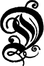

Diese Erzählung ist nicht phantastisch, sie ist nur romantisch. Sollte man sie auf Grund ihrer Unwahrscheinlichkeit als unwahr bezeichnen? Das wäre ein Irrtum. Wir leben in einer Zeit, wo alles vorkommt – man kann fast mit Recht sagen, wo alles schon dagewesen ist. Wenn unsere Geschichte auch heute nichts weniger als wahrscheinlich ist – so kann sie es doch morgen schon sein dank den wissenschaftlichen Hilfsmitteln, die der Zukunft vorbehalten sind, und niemand würde es einfallen, unsere Erzählung ins Reich der Sagen zu verweisen. An der Neige dieses praktischen und positiven 19. Jahrhunderts entstehen übrigens gar keine Sagen mehr – weder in der Bretagne, der Heimat der wilden Korrigans, noch in Schottland, dem Lande der »Brownies« und Gnomen, noch in Norwegen, dem Reiche der Asen, Elfen, Sylphen und Walküren, noch selbst in Siebenbürgen, wo das Massiv der Karpathen für alle überirdischen Erscheinungen einen so naturgemäßen Boden abgibt. Immerhin darf bemerkt werden, daß dieses »transsylvanische« Land noch sehr dem Aberglauben der Urzeiten huldigt.
Diese Provinzen im äußersten Europa sind von de Gerando beschrieben, von Elisée Reclus bereist worden. Natürlich auch Deutschen und Oesterreichern. Daß Jules Verne vornehmlich die Deutschen vergißt, oder nicht nennt, ist seine (verzeihliche!) Schwäche. A. d. Ü. Beide haben die merkwürdige Geschichte, auf der dieser Roman beruht, nicht erwähnt. Es ist möglich, daß sie sie gleichwohl gekannt haben, nur haben sie ihr keinen Glauben beigemessen. Das ist zu bedauern, denn beide würden sie verschieden wiedergegeben haben: der eine mit der Genauigkeit eines Analytikers, der andere mit der unbewußten Poesie, von der seine Reiseberichte erfüllt sind.
Da nun beide dies unterlassen haben, will ich versuchen, es für sie zu tun.
Am 29. Mai dieses Jahres hütete ein Schäfer seine Herde am Rande eines grünen Plateaus am Fuße des Retjesat, der ein fruchtbares, von gradstämmigen Bäumen bestandenes und reich bebautes Tal überragt. Ueber dieses Hochplateau, das schutzlos und offen daliegt, fegen die scharfen Nordwestwinde den Winter über wie schneidende Messer hin. Es heißt dann dortzulande, der Berg schneide sich den Bart – und zwar manchmal »ratzekahl«.
Dieser Schäfer hatte in seinem Aeußern nichts, was an Arkadien erinnert hätte, auch in seiner Haltung nichts Bukolisches. Es war weder Daphnis, noch Amyntas, Tityros, Lycidas oder Meliböos. Zu seinen Füßen, die in groben Holzschuhen steckten, murmelte kein Lignon; die walachische Sil war es, deren frisches klares, in ländlicher Ruhe und Schlichtheit fließendes Wasser es wert gewesen wäre, durch das gewundene Bett des Romanes »Asträa« zu fließen.
Frik-Frik vom Dorfe Werst – hieß dieser ländliche Schäfer – selber ebenso unsauber und schmierig wie sein Vieh – ganz der Mann danach, in der dreieckigen Kabuse zu hausen, wo seine Schafe und Schweine in Schlamm und Unrat schier umkamen.
Dieses immanum pecus Unreine Herde. weidete also unter der Hut dieses Frik – immanior ipse Er selbst noch unreiner.. Ausgestreckt auf einem Bund zusammengehäuften Grases schlief er mit einem Auge, mit dem andern wachend, die grobe Tabakspfeife im Munde. Ab und zu rief er seinen Hunden zu, wenn ein Lamm sich von der Weide entfernte, oder er ließ einen lauten Pfiff ertönen, der in den Bergen vielfältiges Echo fand.
Es war vier Uhr nachmittags. Die Sonne ging zur Neige. Einige Berggipfel, deren Füße sich in wogenden Nebel hüllten, waren gen Osten beleuchtet. Gegen Südwesten fiel durch zwei Lücken der Kette ein schräges Strahlenbündel gleich einem Lichtschein, der durch eine halbgeöffnete Tür fällt.
Dieses Gebirgssystem gehörte zu dem wildesten Teile Siebenbürgens, begriffen unter der Benennung des Komitats von Klausenburg oder Kolosvar.
Ein seltsames Stück des österreichisch-ungarischen Kaiserreichs, dieses Siebenbürgerland – »Erdely« auf magyarisch, d. h. »das Land der Wälder«. Es wird begrenzt durch Ungarn im Norden, die Walachei im Süden, die Moldau im Westen. Es erstreckt sich über 60 000 Quadratkilometer, also 6 000 000 Hektare; ungefähr einem Neuntel der französischen Republik, einem Zehntel der österreichisch-ungarischen Monarchie entsprechend, kann es als eine zweite Schweiz gelten, bloß um die Hälfte größer als der helvetische »Kantönli-Bund«, aber um keinen Kopf volkreicher. Mit seinen der Kultur erschlossenen Hochflächen, seinen üppigen Hutweiden, seinen kapriziös skizzierten Tälern, seinen steil aufragenden Schroffen wird Transsylvanien von den Verästelungen der Karpathen, vulkanischen Ursprungs, streifenförmig wie ein Zebrafell und von nicht minder zahlreichen Wasserläufen durchzogen, Zuflüssen der Theiß und der majestätischen Donau, die mit ihrem Eisernen Tore wenige Meilen weiter südlich das Defilee der Balkankette an der Grenze zwischen Ungarn und dem ottomanischen Kaiserreiche bildet.
Es ist das uralte Land der Dacier, das im ersten Jahre christlicher Zeitrechnung von dem römischen Kaiser Trajanus erobert wurde. Die Unabhängigkeit, die es bis zum Jahre 1699 unter Johann Zapolyi und seinen Nachfolgern genoß, fand ihr Ende durch Kaiser Leopold I., der es zu Oesterreich schlug. Alle politischen Wandlungen haben indessen nichts daran ändern können, daß Siebenbürgen gemeinsamer Wohnsitz verschiedener Rassen blieb, die miteinander kollidieren, statt sich miteinander zu verschmelzen, nämlich von Walachen oder Rumänen, Magyaren, Zigeunern, Szeklern moldauischer Abkunft und sogenannten »Sachsen«, denen schließlich zufolge von Zeit und Umständen nichts anderes übrig bleiben wird, als zugunsten der siebenbürgischen Einheit sich »magyarisieren« zu lassen.
Welchem dieser Völkertypen Schäfer Frik angehörte und ob er ein degenerierter Abkömmling der alten Dacier war, darüber sich bestimmt zu äußern, dürfte angesichts seines wirren Buschkopfs, seines Schmutzfinkengesichts, seines struppigen Barts, seiner borstigen Brauen von rötlicher Färbung, seiner dunklen Augen mit einem Stich halb ins Grüne, halb ins Blaue, die am Rande der Hornhaut den Greisenbogen zeigten, schwer festzustellen gewesen sein, – leichter, daß er schon Mitte der Sechziger war. Er war ein großer, hagerer Mann, der sich gar straff hielt unter dem gelblichen Schaffell, an dem freilich kaum soviel Haare noch hängen mochten, wie an seiner zottigen Brust – wahrlich, kein Maler hätte sich die Mühe verdrießen lassen, den Mann auf Papier zu bringen, wie er so dastand, unbeweglich wie ein Fels, mit dem aus Binsen geflochtenen Hute auf dem Kopfe und mit der Faust auf den Stecken mit dem Krähenschnabel-Griffe gestützt.
Gerade als die Sonnenstrahlen durch die Waldlücke im Westen brachen, drehte Frik sich um, bildete sich aus der halbgeschlossenen Hand ein Fernrohr – wie er es wohl gewohnt war sie als Sprachrohr zu benutzen, wenn er sich auf Entfernungen hin vernehmbar machen wollte – und hielt nach dieser Richtung scharfen Ausblick.
An dem hellen Hintergrunde des Horizonts, eine reichliche Meile weit und infolge der Entfernung stark verjüngt, aber nichtsdestoweniger scharf profiliert, erschienen die Formen einer Burg – eines altertümlichen Schlosses, das auf einem isolierten Sattel des Vulkanbergs den obern Teil eines unter dem Namen Orgall bekannten Hochplateaus einnahm. Unter dem Spiel eines hell schimmernden Lichts hob sich sein Relief mit jener Schärfe ab, durch die sich bessere Stereoskop-Ansichten auszeichnen. Immerhin mußte das Auge des Hirten eine große Sehschärfe besitzen, um aus dieser fernliegenden Masse bestimmte Einzelheiten zu erkennen.
Plötzlich rief er, den Kopf wiegend:
»Alte Burg, alte Burg! – Stütz' dich nur fest auf deine Grundmauer! – noch drei Jahre, und mit deinem Dasein ist's vorbei, denn deine Buche hat bloß noch drei Aeste.«
Am Rande einer der Bastionen, mit denen das Schloß befestigt war, stand jene Buche, am Himmelsgrunde sichtbar wie zierlich aus Papier geschnitten, aber auf solche Weite wohl kaum für jemand anders als Frik. Die Erklärung dieser Worte des Schäfers, die mit einer alten Schloßsage zusammenhängen, wird folgen, wenn es an der Zeit ist.
»Ja, ja,« wiederholte er, »drei Aeste – gestern waren es ihrer noch vier, aber der vierte ist heute Nacht abgebrochen, und nun steht bloß noch der Stumpf! ich zähle bloß drei Aeste noch von der Gabelung ab – bloß drei noch, alte Burg! bloß drei noch!«
Wird ein Hirt von der idealen Seite aufgefaßt, so zeigt ihn uns die Phantasie gern als ein träumerisches, sinnierendes Wesen, das sich mit den Planeten unterhält, mit den Gestirnen verhandelt, am Himmel liest. In der Wirklichkeit sieht man ihn im allgemeinen als dummes, verbohrtes Subjekt. Indessen schreibt ihm der im Volke herrschende Aberglaube gern Vertrautheit mit übernatürlichen Dingen zu, er soll im Besitze von Zauber- und Hexenkünsten sein, soll Böses beschwören, Gutes fügen, Menschen und Tiere von bösen Krankheiten heilen oder mit bösen Krankheiten behaften können usw.; er treibt Handel mit Sympathie-Mitteln und Pülverchen, Trünkchen und Sprüchen, die Haß oder Liebe säen, Gewinn oder Schaden bringen; er kann fruchtbares Feld in unfruchtbares wandeln durch verhexte Steine, die er in die Furchen schleudert; er kann Schafe durch Anschielen unträchtig machen; und was von dergleichen Aberglauben noch mehr in der Welt herumspukt – überall und zu allen Zeiten. Auch Frik stand im Rufe eines Zauberers in ganz Siebenbürgen. Alle im Lande wußten, daß ihm die Vampyre gehorchten und die Stryges nicht feind waren, daß man ihn bei abnehmendem Monde in finstern Nächten verkehrt auf Mühlrädern reiten sah, gemeinhin mit Wölfen schwatzend oder mit den Sternen träumend. Er ließ die Leute reden, denn er fand seinen Nutzen dabei. Er verkaufte Zaubermittel, und Mittel, die gegen Zauber halfen. Aber er war, nicht zu vergessen, ganz ebenso abergläubisch wie seine Kundschaft, und wenn er schließlich auch nicht auf seine eigenen Zauberkräfte schwor, so doch auf die Sagen und Mären, die im Lande umliefen.
Man wird sich demnach nicht wundern, daß er aus dem Abbrechen des vierten Buchenastes zu der Prophezeiung baldigen Verschwindens der alten Burg gelangte und daß er sich nicht nötigen ließ, diese Neuigkeit in Werst fleißig zu verbreiten.
Er blies mit vollen Lungen in seine aus weißem Holz geschnitzte lange Schalmei, und bald war seine Herde um ihn versammelt, worauf er sich auf den Weg zum Dorfe machte. Die Hunde, ein paar Terrier-Bastarde, knurrig und bissig, die mehr aussahen, als wenn sie Schafe fräßen statt hüteten, gingen hinter ihm her. Seine Herde zählte an die hundert Köpfe, halb Hammel, halb Schafe, bis auf ein Dutzend Lämmer vorjährigen Wurfs. Durchweg Tiere im dritten oder vierten Jahre.
Die Herde gehörte dem Werster Ortsschulzen, dem »Biro« Koltz, der an die Gemeinde einen guten Weidegroschen abführte und auf seinen Schäfer Frik große Stücke hielt, weil es demselben kaum jemand gleichtat bei der Schafschur und in der Behandlung aller Viehkrankheit, wie Drehwurm, Leberwurm, Trommelsucht, Lungensucht, Pocken, Unträchtigkeit usw.
Frik zog mit seiner Herde, die mit dem Leithammel voran und mit dem Mutterschaf daneben mit Geblök und Geklingel in geschlossenen Gliedern trabte, einen breiten Feldweg entlang, der mit großen Feldern eingesäumt war. Dort wogte hochstehendes Getreide mit seinen prächtigen Aehren; dort dehnten sich herrliche Mais- oder, wie der Siebenbürger sagt, »Kukuruz«-Pflanzungen. Der Weg führte zu einem Fichten- und Tannenwalde mit frischem, finsterm Unterholz. Weiter zum Tale hin führte die Sil ihren glitzernden Lauf, auf deren hellen über dichtem Kieselgrund geklärten Fluten Stämme und Klötze aus den stromauf gelegenen Sägemühlen schwammen.
Hunde und Schafe machten am rechten Ufer des Flusses Halt und stillten an dem steilen mit wilden Rosenbüschen bestandenen Uferrande gierig den Durst.
Werst lag nur drei Büchsenschüsse ab hinter einem dichten Weidicht, aus Weidebäumen, nicht aus Krüppelweiden bestehend, das sich bis zu den Abhängen des Vulkan und weiter bis zum Plesa-Gebirge hinzieht, auf dessen südlichem Ausläufer das gleichnamige Dorf liegt.
Um diese Zeit herum war es draußen im Lande leer und einsam. Die Leute kehrten erst mit einbrechender Dunkelheit vom Felde heim, und Frik hatte den landesüblichen Gruß unterwegs mit niemand wechseln können. Als die Herde den Durst gestillt hatte, wollte er gerade ins Tal hinunter abbiegen, als an dem Knie, das die Sil fünfzig Schritte stromab bildet, ein Mann sichtbar wurde.
»Heda, Freund!« rief er dem Hirten zu.
Es war einer von den Händlern »von draußen«, die auf den Komitatsmärkten herumziehen und in den Städten und Flecken, bis in den bescheidensten Dorfschaften zu finden sind. Sich zu verständigen bereitet ihnen keine Schwierigkeit, denn sie reden in allen Zungen. War der Mann, der sich jetzt Frik zeigte, ein Italiener, ein Sachse, oder Walache? niemand hätte es sagen können, aber Jude war er, polnischer Jude, groß, hager, mit Hakennase, Spitzbart, vorspringender Stirn, lebhaften Augen.
Es war ein Hausierer, der mit Brillen, Thermometern, Barometern und kleinen Uhren handelte. Was nicht in dem Kasten steckte, den er an starken Achselgurten über den Schultern trug, hing an seinem Halse und seinem Gürtel. Es war ein richtiger wandelnder Kramladen.
Dem Juden mochte wohl der Respekt, vielleicht auch die heilsame Scheu fehlen, die ein Schäfer einflößt. Darum grüßte er Frik mit der Hand. Dann fragte er auf rumänisch, in jener Mischsprache aus Latein und Slavisch, mit fremdem Accent:
»Geht alles gut und nach Wunsch, Freund?«
»O ja, wie die Witterung kommt,« entgegnete Frik.
»Also war es heute recht, denn die Witterung ist ja gut.«
»Und morgen wird's unrecht sein, denn es wird Regen setzen.«
»Regnen wird's?« rief der Hausierer – »gibt's bei Euch zulande Regen ohne Wolken?«
»Die Wolken werden in der Nacht kommen, von dort unten her, aus der schlimmen Bergecke.«
»Woran seht Ihr das?«
»An der Wolle meiner Schafe, die fest und trocken ist wie gegerbtes Leder.«
»Schlimme Aussicht für Leute, die auf der Heerstraße zubringen müssen –«
»Aber gute Aussicht für Leute, die in ihren vier Pfählen geblieben sind.«
»Da muß man über vier Pfähle gebieten können, Schäfer.«
»Habt Ihr Kinder?« fragte Frik.
»Nein.«
»Seid Ihr verheiratet?«
»Nein.«
Frik stellte diese Fragen, weil das dortzulande Brauch ist, an Leute, die man trifft, diese Fragen zu stellen. Dann fragte er weiter:
»Woher, Hausierer?«
»Aus Hermannstadt.«
Hermannstadt gehört zu den Hauptplätzen Siebenbürgens. Von da aus kommt man in das Tal der ungarischen Sil, das bis zu dem Flecken Petroseny hinabreicht.
»Wohin, Hausierer?«
»Nach Klausenburg.«
Wer nach Klausenburg will, braucht bloß in der Richtung des Maros-Tals weiter zu wandern; über Karlsburg, entlang den Ausläufern des Bihar-Gebirges, erreicht er dann die Hauptstadt des Komitats. Ein Weg von etwa 20 Meilen oder 150 Kilometern.
Solche Hausierer mit optischer Ware, Thermo-, Barometern und dergleichen, wecken immer den Gedanken an Wesen besonderer Art, von einem Gepräge à laE. T. A. Hoffmann. Das liegt an ihrem Handwerk. Sie schachern mit Wetter in all seinen Formen: mit dem Wetter, das herrscht, mit dem Wetter, das vorbei ist, mit dem Wetter, das kommt, wie andere Hausierer mit Korb-, Leinen- oder Strickware schachern. Landreisende für das Haus Saturn und Kompagnie, Schutzmarke Stundenglas, könnte man sie nennen. Einen ähnlichen Eindruck mochte wohl auch der Jude auf den Schäfer machen, der nicht ohne Verwunderung auf diesen Kram von Dingen blickte, die neu für ihn waren und deren Zweck und Bestimmung er nicht kannte.
»Heda, Hausierer,« fragte er, den Arm ausstreckend, »wozu braucht man denn den Krimskrams, der an Eurem Gürtel baumelt wie die Knochen eines armen Sünders am Galgen?«
»Das sind Sachen gar teuer und von Wert,« antwortete der Fierant, »Sachen, die von Nutzen sind für jedermann.« »Für jedermann?« rief Frik, mit den Augen blinzelnd – »auch für Schäfer?«
»Auch für Schäfer.«
»Und das Ding da –?«
»Das Ding,« antwortete der Jude, indem er einen Thermometer zwischen den Fingern tanzen ließ, »sagt Euch, wenn wir warme oder kalte Witterung bekommen.«
»Ei, Freund, das weiß ich allein, wenn ich unter meinem Schaffell schwitze oder unter meinem Flauskittel friere.«
Offenbar mußte das für einen Schäfer genügen, der sich um das Warum? der Wissenschaft den Kopf nicht beschwerte.
»Und die große Knarre dort mit dem Zeiger?« fragte Frik weiter, auf ein Aneroid-Barometer zeigend.
»Das ist keine Knarre, sondern ein Instrument, das angiebt, ob es morgen schön sein wird oder regnen –«
»Wirklich?«
»Wirklich!«
»Schön,« versetzte Frik – »ich dankte aber dafür, und wenn es bloß einen Kreuzer kostet. Ich brauche doch bloß die Wolken anzusehen, ob sie im Gebirge schleichen oder über die Gipfel ziehen, wenn ich wissen will, was für Wetter wir in 24 Stunden haben werden. Ihr seht doch, z. B. den Nebel dort, der aus dem Erdboden zu steigen scheint? Nun, wie gesagt, der bedeutet, daß wir morgen Wasser bekommen.«
Frik der Schäfer, als Wetterkundiger von Geburt an, konnte sich freilich eines Barometers entschlagen.
»Ob Ihr eine Uhr braucht, darf man wohl gar nicht fragen?« fuhr der Hausierer fort.
»Eine Uhr? – ich habe eine Uhr, die ganz von selber läuft, die mir über dem Kopfe hängt: dort oben die Sonne. Wenn sie über der Spitze des Roduk steht, haben wir Mittag, und wenn sie durch das Egelt-Loch guckt, ist es um sechs. Das wissen meine Schafe so gut wie ich und meine Hunde so gut wie ich und meine Hunde so gut wie meine Schafe. Behaltet also Euren Plunder!«
»Na, das muß man sagen,« antwortete der Hausierer, »hätte ich bloß Schäfer zu Kunden, so möchte es mir schwer fallen, Geld zu machen. Ihr braucht also nichts?«
»Gar nichts.«
Was der Jude an Ware führte, war übrigens Ramsch von durchweg geringem Wert und mittelmäßigen Fabrikats; die Barometer stimmten weder wenn sie auf Schön, noch wenn sie auf Regen, sondern meist nur, wenn sie auf Veränderlich zeigten. Die Uhrenzeiger wiesen zu lange Stunden oder zu kurze Minuten usw. Der Schäfer mochte das ahnen und bezeigte keine große Lust, als Käufer zu erscheinen. Indessen griff er noch, gerade als er den Stecken zum Weitergehen hob, auf etwas, das wie eine Röhre aussah und am Hosenträger des Hausierers hing.
»Wozu wird denn die Röhre gebraucht?«
»Das ist keine Röhre.«
»Also ein Feuerrohr?«
Der Schäfer meinte damit eine von den alten Steinschloßflinten, die in der siebenbürgischen Gegend noch zu Hause sind.
»Nein,« versetzte der Jude, »ein Fernrohr.«
Es war ein gewöhnliches Fernrohr, das die Gegend um das Fünf- bis Sechsfache vergrößert oder, was auf dasselbe hinausläuft, um soviel näher rückt.
Frik hatte das Fernrohr losgemacht, beguckte es, betastete es, drehte es nach allen Seiten und von oben nach unten und schob die Zylinder übereinander. Dann wiegte er mit dem Kopfe und fragte:
»Ein Fernrohr?«
»Jawohl, Schäfer, und ein sehr gutes Fernrohr, aus einer der ersten Fabriken, das Euch den Blick verlängert ins Endlose.«
»O, ich habe gute Augen, Freund! bei hellem Wetter erkenne ich die hintersten Felsen bis zur Kuppe des Retjesat und die letzten Bäume in den Talschluchten des Vulkan.«
»Ohne Blinzeln?«
»Ohne Blinzeln. Das dank ich dem Tau, wenn ich vom Abend bis zum hellen Morgen unter freiem Himmel schlafe. Nichts macht die Augen so rein und so hell wie der Morgentau.«
»Was – der Morgentau?« fragte der Hausierer – »der muß doch blind machen –«
»Die Schäfer nicht!«
»Mag sein. Aber wenn Ihr auch gute Augen habt, so sind meine doch besser, wenn ich durch mein Fernrohr sehe.«
»Das käme auf die Probe an.«
»Guckt doch mal durch.«
»Ich?«
»Probiert's mal!«
»Kostet das auch nichts?« fragte Frik, von Natur höchst mißtrauisch.
»Gar nichts – solange Ihr mir das Ding nicht abkauft.«
In dieser Hinsicht beruhigt, nahm Frik das Fernrohr, das der Hausierer für sein Auge passend einstellte, kniff das linke Auge zu und setzte das Glas auf das rechte.
Zunächst blickte er in der Richtung des Vulkansattels, zum Plesa hinauf. Dann hielt er das Fernrohr tiefer und richtete es auf die Dorfschaft Werst.
»Hm, hm,« machte er, »das stimmt! das Ding reicht weiter als mein Auge. Dort läuft die große Straße. Ich sehe Leute. Dort kommt Nik Deck, der Waldhüter, von seinem Wege heim, mit dem Rucksack auf dem Buckel und dem Gewehr über der Schulter –«
»Ich habe es Euch doch gesagt!« rief der Jude.
»Gewiß, das dort ist Nik, leibhaftig!« fuhr der Schäfer fort – »und wer ist die Dirne, die aus Koltzens Hause tritt im roten Rock und schwarzen Mieder, als wenn sie auf ihn zulaufen wollte?«
»Seht nur durch das Rohr, Schäfer, und Ihr erkennt die Dirne so genau wie den Burschen –«
»Richtig, jetzt sehe ich sie – das ist ja Miriota, die schöne Miriota! Ach, das verliebte Volk! na, diesmal mögen sie sich vorsehen, denn jetzt habe ich sie wörtlich auf dem Rohre, und mir kann von ihrem zärtlichen Getue nicht das geringste entgehen.«
»Hm, was sagt Ihr nun zu meinem Dinge?«
»O! o! – daß es den Blick tüchtig weitet, sehr tüchtig!«
Wenn Frik noch nie vorher durch ein Fernrohr geguckt hatte, so mußte wohl das Dorf Werst verdienen, unter die weltfremdesten Menschen-Asyle des Komitats Klausenburg eingeordnet zu werden. Daß dem auch so war, und nicht anders, wird man bald merken.
»Na, Schäfer,« nahm der Fierant wieder das Wort, »visiert doch noch einmal! über Werst hinaus – das Dorf liegt viel zu nahe – visiert darüber hinaus – weit darüber hinaus, sage ich Euch!«
»Kostet das auch noch nichts?«
»Auch noch nichts!«
»Schön! also mal nach der ungrischen Sil hinüber – richtig! da ist der Kirchturm von Liwadsel – ich erkenne ihn an einem Kreuze, dem der eine Arm fehlt. Und darüber hinaus, im Tal zwischen den Tannen seh ich den Kirchturm von Petroseny mit seinem blechernen Wetterhahn, der den Schnabel aufreißt, als wollte er seinen Hühnerschwarm zu sich rufen – und dort unten der Turm, der zwischen den Bäumen vorguckt? das muß der Turm von Petrilla sein! Aber, Hausierer,« sagte der Schäfer, wärmer werdend, »wartet doch, wenn sich am Preise noch immer nichts ändert?«
»Noch immer nichts!«
Frik drehte sich nun nach dem Orgall-Plateau herum, verfolgte mit dem Fernrohr den düstern Waldvorhang, der über den Abhängen des Plesa-Gebirges hing, und nahm den in der Ferne liegenden Schattenriß der Burg in das Sehfeld seines Fernrohrs.
»Richtig,« rief er, »der vierte Zweig liegt am Boden – ich habe ganz richtig gesehen – und aufheben wird ihn keiner, um ihn zum Sankt Johannistage als Staatsfackel zu nehmen – nein, niemand! nicht einmal ich selber – das hieße Kopf und Kragen riskieren! aber setzt Euch nicht in Ungelegenheiten! einer ist da, der ihn heute nacht noch in seinen Höllenmeiler schieben wird – das ist der Schort!«
Mit »Schort« ruft oder beschwört man im Siebenbürgerlande den Teufel. Vielleicht hätte der Jude, der doch nicht aus Werst stammte, also nicht verstehen konnte, was der Schäfer mit dem Worte meinte, um Erklärung gebeten, aber plötzlich rief Frik mit einer Stimme, in der sich Schrecken und Staunen mischte:
»Was ist denn das? über dem Lugturm steigt Nebel auf? – Ist denn das Nebel? – Nein, Rauch ist's, Rauch! – Aber das kann ja nicht sein – seit Jahr und Tag raucht doch im Schlosse kein Schlot mehr!«
»Wenn Ihr da draußen Rauch seht, Schäfer, so wird's schon Rauch sein.«
»Nein, Hausierer, nein! es muß Schmutz am Glase von Eurem Rohre sein.«
»Wischt es doch ab!«
»Und wenn –?«
Frik kippte das Fernrohr von oben nach unten, rieb und putzte das Glas mit seinem Schaffell und hob es wieder vor das Auge.
Es war wirklich Rauch, der sich über dem Lugturm in die ruhige Luft emporschlängelte und seinen Schweif im Höhendunst verlor.
Frik stand, ohne ein Glied zu rühren, ohne ein Wort zu sprechen. All seine Aufmerksamkeit richtete sich auf das Schloß, über das die vom Orgall-Plateau heraufsteigende Finsternis ihre Schatten zu werfen begann.
Plötzlich ließ er das Fernrohr sinken, griff mit der Hand in den Quersack unter seinem Schaffell und fragte:
»Wieviel kostet das Ding?«
»Anderthalb Gulden,« antwortete der Hausierer.
Er hätte das Fernrohr um einen Gulden hingegeben, bei der geringen Kauflust, die Frik an den Tag gelegt hatte. Aber der Schäfer feilschte nicht. Sichtlich unter der Gewalt einer ebenso jähen wie unerklärlichen Verblüfftheit griff er mit der Hand in seinen Quersack und langte das Geld heraus.
»Kauft Ihr das Fernrohr für Euch selbst?« fragte der Hausierer.
»Nein – für meinen Dienstherrn, den Ortsschulzen –«
»Koltz?«
»Ja –«
»Na, der gibt Euch das Geld ja wieder –«
»Versteht sich – die zwei Gulden, die es mich kostet –«
»Was? zwei Gulden?«
»Na, gewiß! – aber nun, gute Nacht, Freund!«
»Gute Nacht, Schäfer!«
Frik pfiff seinen Hunden, trieb seine Herde weiter und marschierte schnellen Schrittes den Abhang hinauf, auf dem sich Werst entlang zog. Der Jude sah ihm kopfschüttelnd nach mit einer Miene, als wenn er seinen Augen nicht traute.
»Hätte ich gewußt,« murmelte er, »daß er sich bezahlen läßt zwei Gulden für das Fernrohr, so hätte ich es ihm nicht verkauft zu so billigem Preise.«
Dann rückte er Leibgurt und Achselriemen zurecht, brachte die daran hängenden Gegenstände in Ordnung und schlug den Weg rechts am Sil-Ufer hinunter nach Karlsburg ein.
Wohin? Das hat keinen Belang. Er spielt in dieser Erzählung keine Rolle mehr und wird nicht wieder auftreten.
Ob es sich handelt um Felsmassen, die in den geologischen Epochen nach den letzten Erderschütterungen von der Natur aufgeschichtet wurden oder um Felsbauten, die durch Menschenhand geschaffen wurden und über die die Zeit hinweggebraust ist, der Anblick wird wohl, sobald man sie aus ein paar Meilen Abstand betrachtet, so ziemlich derselbe sein. Was natürliches Gestein ist, und was behauener Stein ist, kommt sehr leicht alles auf eins hinaus. Färbung, Umrisse, Abweichungen in der Linienführung zufolge der Perspektive bleiben sich ziemlich gleich und die graugrüne Patina der Jahrhunderte überzieht beides mit der gleichen Deckschicht.
So war es auch mit der gemeinhin unter dem Namen Karpathenschloß bekannten Felsenburg. Ihre unbestimmten Formen auf diesem Plateau von Orgall zu erkennen, das sie links von dem Vulkansattel krönt, wäre kaum angegangen, denn sie heben sich von dem Gebirgshintergrunde gar nicht ab. Was man für einen Lugturm zu halten geneigt ist, mag vielleicht ein bloßer Felsblock sein. Wer den Blick darauf richtet, meint die Zinnen einer Wallmauer zu sehen, wo sich am Ende bloß ein ausgezackter Felsgrat hinzieht. Kurz, ein Gesamtbild unbestimmten, schwankenden, verschwommnen Charakters. Darum herrscht bei einer gewissen Klasse von Touristen auch die Meinung, das Karpathenschloß existiere bloß in der Phantasie der Bewohner des Komitats.
Wie es sich damit verhält, hätte sich doch am leichtesten und einfachsten feststellen lassen, wenn man sich vom Vulkan oder aus Werst einen Führer genommen hätte, durch die Schlucht auf den Grat mit ihm hinauf gestiegen wäre und das Felsennest besichtigt hätte. Bloß möchte es wohl leichter gewesen sein, den Weg sich selber zu suchen als einen Führer zu finden, der einen auf die Burg hinauf gebracht hätte. In der ganzen Gegend der beiden Sils hätte sich kein Mensch hierzu hergegeben.
Was man durch ein stärkeres und besser geschliffenes Fernrohr als den vom Schäfer dem Juden abgekauften Plunder gesehen hätte, wäre übrigens folgendes gewesen:
8–900 Fuß rückwärts vom Vulkansattel eine sandsteinfarbene, mit dichtem Steinpflanzen-Teppich überwachsene Wallmauer, die sich über eine Kreisfläche von 4–500 Klaftern erstreckt und zwar im engsten Anschluß an die Unebenheiten des Plateaus. An jedem Ausläufer zwei Bastionswinkel; auf dem zur Rechten stand die berühmte Buche, überragt noch von einem dürftigen Wacht- oder Warttürmchen mit spitzem Dache; linksseitig ein paar Mauerflächen, von durchbrochnen Strebepfeilern gestützt, auf deren Rande der Glockenturm einer Kapelle stand, dessen geborstene Glocke sich zum Grausen aller Leute in der Umgegend in Schwingungen setzt, wenn der Sturmwind durch das Gebirge fegt. In der Mitte, gekrönt von seiner krenelierten Plattform, ein schwerfälliger Turmbau mit drei Reihen in Blei gefaßter Fenster, dessen erstes Stockwerk mit einer ringsherumlaufenden Terrasse versehen ist. Von der Plattform ragte eine lange Eisenstange auf, an deren Spitze sich das Wahrzeichen des Feudalbesitzes, eine vom Roste zerfressene Wetterfahne, nach Südost zeigend, drehte.
Was innerhalb dieser stellenweis eingestürzten Mauer steckte, ob dort ein bewohnbares Gebäude stand, ob Zugbrücke und Falltor den Zugang sperrten oder erlaubten, war seit Jahren über Jahren keiner Seele bekannt. Wenngleich das Karpathenschloß tatsächlich besser erhalten war als sich nach seinem Aussehen meinen ließ, so lieh ihm jetzt eine ansteckende, durch Aberglauben verstärkte Angst keinen geringern Schutz als ehedem seine Donnerbüchsen, Feldschlangen, Bombarden, seine Mörser und Verteidigungswerkzeuge verwichener Jahrhunderte.
Und doch hätte für Touristen und Altertümler der Besuch des Karpathenschlosses gelohnt. Seine Lage auf dem Rande des Orgall-Plateaus ist herrlich. Von der obern Plattform des Lugturms erstreckt sich der Fernblick bis zur Gebirgsgrenze. Dahinter wogt die hohe, reich verschlungene Kette, die die Grenze der Walachei bezeichnet. Im Vordergrunde gräbt sich der Engpaß des Vulkans als einziger gangbarer Weg zwischen den Grenzprovinzen seine gewundene Bahn. Jenseits vom Tale der beiden Sils steigen die Flecken Liwadsel, Lonyai, Petroseny, Petrilla auf, gruppiert um die Schachtmündungen der reichen, im Abbau begriffenen Kohlenlager dieses Gebiets. Den Horizont schließt eine prächtige Reihe von Bergrücken ab, am Fuße mit dichtem Walde bedeckt, der sich an ihren Wänden hinaufzieht, aber ihre Gipfel meidet, die kahl und dürr über die Schroffen des 2496 Meter hohen Retjesat und des nur um weniges niedrigeren Paring ragen. In noch weiterer Ferne treten hinter dem Tale des Hatßeg und jenseits vom Laufe des Maros die im Höhendunst verschwimmenden Profile des Mittelstocks der siebenbürgischen Alpen in Sicht.
Auf dem Grunde dieses Trichters hat die Bodenvertiefung vor Zeiten einen See gebildet, in welchem sich die beiden Sils verliefen, bis sie sich den Weg durch die Gebirgskette gebrochen hatten. Jetzt bildet diese Senkung ein Kohlenlager mit allen Vor- und Nachteilen eines solchen, die hohen Ziegelessen mischen sich zwischen die Aeste und Zweige der Pappeln, Tannen und Buchen; schwarzer Qualm verdirbt die Luft, die vordem gewürzt wurde vom Wohlgeruch der Obstbäume und Blumen. Indessen hat die Szenerie, wenn auch durch die Bergwerksindustrie zwischen ihre Eisenfaust genommen, zur Zeit da diese Erzählung spielt, von dem wilden Charakter, den ihr die Natur verliehen hat, noch nichts eingebüßt.
Das Karpathenschloß stammt aus dem 12. oder 13. Jahrhundert. Damals, als die Wojwoden oder Stammeshäuptlinge hier die Herrschaft übten, wurden Klöster, Kirchen, Schlösser so gut wie Städte, Flecken, Dorfschaften befestigt, mit Wällen umschlossen, durch Zugbrücken gesichert. Grundherren und Bauern mußten sich gegen allerhand Angriffe schützen. Hieraus erklärt sich, wie es gekommen, daß der uralte Wall mit seinen Bastionen und seinem Lugturm dem Schloß das Aussehen eines wohlverteidigten Feudalbollwerks leihen. Welcher Baumeister es auf diesem Plateau, in dieser schwindelnden Höhe erbaut hat? man weiß es nicht; niemand kennt den kühnen Künstler, es müßte denn gerade der in den Legenden der Walachei so herrlich besungene Rumäne Manoli sein, der in Curte d'Argis das berühmte Schloß Rudolfs des Schwarzen erbaut hat.
Während über den Baumeister Zweifel herrschen, besteht über das Geschlecht, das diese Burg besaß, völlige Klarheit. Grundherren waren hier seit undenklichen Zeiten die Barone von Görz; sie waren verwickelt in alle Kriege, die diese siebenbürgischen Lande mit Blut düngten; sie kämpften wider die Ungarn, die Sachsen, die Szekler; ihr Name erscheint in den Kriegs- und Volksliedern, durch die das Andenken an diese grausigen Zeiten wach erhalten wird; ihr Wahlspruch war das berühmte walachische Sprichwort: Da pe maorte(»gib bis zum Tode«), und sie gaben, sie vergossen ihr Blut für die Sache der Unabhängigkeit, altes Römerblut, denn ihr Geschlecht führte seinen Ursprung zurück bis auf jenes mächtigste aller Völker des Altertums, das seine Kultur bis in diese seiner Heimat so fernen Lande trug.
Der letzte des Freiherrngeschlechts der Görze war Rudolf, der um die Mitte des 19. Jahrhunderts lebte. Im Karpathenschloß geboren, verwaiste er schon in früher Jugend. Ein Reis seines Geschlechts nach dem andern sah er von dem alten Stamme schwinden. Als er sein 22. Jahr vollendete, stand er allein da in der Welt, ohne Verwandte, ja auch fast ohne Freunde. Womit sollte Baron Rudolf diese eintönige, durch den Tod um ihn her gesäete Einsamkeit verscheuchen? was liebte er? wofür hatte er Neigung? wozu besaß er Fähigkeit? einen unwiderstehlichen Hang zur Musik, eine glühende Passion für die großen Sänger der damaligen Zeit wurde ihm nachgeredet, sonst wußte man nichts von ihm, dem Weltfremden. Eines Tages wandte er dem schon stark verfallnen Schloß den Rücken, übergab die Verwaltung ein paar greisen Dienern und verschwand. Was später einmal von ihm verlautete, war nicht viel: er widmete sein ziemlich bedeutendes Vermögen dem Besuch der Hauptmusikstätten Europas, den Bühnen Deutschlands, Frankreichs, Italiens; dort konnte er seine Musik-Launen befriedigen, seinen unersättlichen Dilettanten-Durst stillen. War Baron Görz ein Sonderling? ein überspannter Mensch? vielleicht gar ein wahnbesessener Mensch? Die wunderliche Art seiner Lebensführung gab gewisse Berechtigung zu solcher Meinung.
Die Erinnerung an die Heimat war ihm aber tief ins Herz gegraben. Auf all seinen Wanderungen durch ferne Lande hatte er sein Siebenbürgerland nicht vergessen, und als sich die rumänischen Bauern zum blutigen Aufstand wider ihre ungarischen Bedrücker erhoben, kehrte er heim und zog mit den Aufständischen ins Feld.
Die Abkömmlinge der alten Dacier wurden überwältigt, ihr Grund und Boden wurde unter die Sieger verteilt. Dieser herbe Schlag, der ihn und seine engeren Landsleute traf, bestimmte ihn, dem Schlosse seiner Väter, das zum Teil schon in Trümmern lag, endgültig den Rücken zu wenden. Bald raubte der Tod dem Schlosse die letzten Diener; es vereinsamte gänzlich, und vom Baron Görz lief das Gerücht im Lande, er habe sich mit dem berühmten Rosza Sandor zur Verfolgung patriotischer Ziele zusammengetan, mit jenem alten Bandenführer und »Ritter von der Heerstraße«, den die Freiheits- und Unabhängigkeitskriege zum Bühnenhelden gemacht haben. Ein Glück für Rudolf von Görz, daß er sich von der Schar des Ruf und Vermögen gefährdenden »Betja« nach dem schlimmen Ausgang des Kampfes beizeiten getrennt hatte, denn aus dem politischen Bandenführer wurde ein Räuberbandenführer, der schließlich der Polizei in die Hände fiel und im Kerker von Szamos-Ujtvar unschädlich gemacht wurde. Indessen fand bei den Leuten des Komitats noch ein anderes Gerücht Glauben, nach welchem Baron Rudolf bei einem Rencontre Rosza Sandors mit den Zollwächtern umgekommen sein sollte. Das traf aber nicht zu, trotzdem sich der Baron seit dieser Zeit nie mehr im Schlosse hatte sehen lassen und sein Tod für niemand mehr zweifelhaft war. Klug ist es eben, den Gerüchten solcher abergläubischen Bevölkerung mit allem Vorbehalt zu begegnen.
Das Schloß stand also leer und öde, Geister spukten darin, Verwunschene suchten es nächtlicherweile heim. Geschehen solche Dinge auch anderwärts in Europa noch, so darf sich doch Siebenbürgen hierin des ersten Platzes in der Welt rühmen.
Wie hätte wohl auch ein Dörfchen wie Werst sich seines Glaubens an übernatürliche Dinge entschlagen oder nur erwehren können? lehrten doch Pfarrer und Schulmeister, in deren Händen alle geistige Pflege lag, all die Gespenstermär mit um so größerer Liebe und Treue als sie ja selbst steif und fest daran glaubten. Hatten doch sie die Beweise dafür in der Hand, daß der Wärwolf noch im Land hause, daß Vampyre oder »Strygen« dem Menschen nachts das Blut aussaugen, daß »Staffien« durch das Getrümmer von Schlössern und Burgen sausen und dem Lande allerhand Schlimmes antun, sobald dessen Bewohner vergessen, ihnen abends Speise und Trank vor die Hütten zu setzen. Hexen hausen im Siebenbürgerlande, hier »Babes« genannt, deren Begegnung man an Dienst- und Freitagen, den beiden schlimmsten Tagen der Woche, meiden muß. Wage sich doch bloß einmal jemand in die Tiefen dieser verhexten Komitatswaldungen, in denen es von »Balauris« wimmelt, Drachen-Ungetümen, die ihre Kinnladen bis zu den Wolken hinauf reißen können, von räuberischen »Smeis« mit Fittichen von maßloser Größe, die hinter Jungfrauen aus königlichem und auch gemeinerem Blut ärger her sind als Satanas hinter Judenseelen, sobald sie hübsch und zierlich sind! Ja, im Siebenbürgerlande wimmelt es von solchem und zahllosem andern Ungetüm, gegen das die Volks-Phantasie keinen andern Schutz oder Schutzgeist weiß als die »Serpi de Casa«, die Schlange des häuslichen Herdes, die traute Genossin im häuslichen Heim, deren wohltätigen Einfluß der Bauer sich durch reichliche Nahrung mit der besten Milch von seinem Gute sichert.
War nun je eine Burg danach beschaffen, den Auswüchsen solcher rumänischen Götterlehre als Unterschlupf zu dienen, so doch vor allem das Karpathenschloß auf jenem einsamen weltfernen Hochplateau, das außer dem schwierigen Pfade über den linken Vulkansattel völlig unzugänglich war. Hier mußten ja Drachen, Hexen, Vampyre und ganz sicher doch auch all die Geister der hier gestorbenen Görze hausen! Kein Wunder, daß das alte Schloß im schlimmsten Rufe stand, daß es niemand einfiel, sich hinauf oder gar hinein zu wagen, daß es ein epidemisches Entsetzen um sich verbreitete, gleich dem ungesunden Sumpfe, der durch seine Miasmen für Pest und Seuche im Lande sorgt. Aber dieser Zustand der Dinge mußte sein Ende finden, sobald von der alten Görz-Feste kein Stein mehr übrig war, und hier setzte eben die Mär oder Sage ein. Nach den Reden der angesehensten Dorfleute war das Dasein aufs engste verknüpft mit dem Dasein jener uralten Buche, die mit ihrem Stamme über die rechtsseitige Bastion der alten Wallmauer aufragte. Seit Baron Rudolfs Verschwinden von der Burg büßte die alte Buche alljährlich einen Hauptast ein. Das hatten die Dorfleute, vor allem Schäfer Frik, genau beobachtet. Achtzehn Hauptzweige waren an der Gabelung der Buche gezählt worden, als Baron Rudolf zum letzten mal auf der Plattform des Lugturms gesehen worden war, und jetzt waren ihrer bloß drei noch vorhanden. Mit jedem geschwundenen Aste war ein Daseinsjahr der Burg geschwunden. Mit dem letzten Aste würde auch sie verschwinden; dann würde man umsonst nach Trümmern des Karpathenschlosses auf dem Orgall-Plateau suchen.
In Wirklichkeit war das Ganze weiter nichts als eine von jenen Legenden, die sich in rumänischen Phantasien gern festsetzen. Es war nicht einmal erwiesen, daß die alte Buche in jedem Jahr einen Hauptzweig verloren hatte. Frik freilich hätte sich nicht besonnen, diese Behauptung gegen alle Welt aufrecht zu halten, denn so lange seine Herden die Silweiden abgrasten, hatte er die Burg nicht aus dem Gesicht verloren. Immerhin bestand, wenn auch Frik beim letzten Bauer wie beim Dorfschulzen als ein Mensch galt, dem man bei weitem nicht alles glauben durfte, kein Zweifel an der Meinung, daß dem Schlosse bloß noch drei Daseinsjahre beschieden seien, seitdem an seiner »Schutzbuche« bloß noch drei Zweige gezählt wurden.
Der Schäfer hatte sich also auf den Weg nach dem Dorfe gemacht, um dort die gewichtige Neuigkeit zu melden, als sich der Zwischenfall mit dem Fernrohr zutrug.
Eine gewichtige, sehr gewichtige Kunde freilich! auf dem Grate des Lugturms war Rauch sichtbar geworden. Mit bloßem Auge hätte er das nicht wahrnehmen können, aber durch das Fernrohr hatte er es deutlich gesehen, ganz deutlich; und zwar nicht bloß Dunst, sondern richtigen Rauch, der sich zwischen den Wolken verlor – das Schloß ist aber doch seit Jahren verlassen, seit Jahren hat kein Mensch den Fuß durch das Falltor, das doch geschlossen, und über die Zugbrücke, die doch heruntergelassen sein muß, gesetzt! wenn das Schloß bewohnt ist, so doch sicherlich bloß von übernatürlichen Wesen – aber zu welchem Zweck hätten Geister in einem Wohnraum des Lugturms Feuer anmachen sollen? – ferner: ist es Stubenfeuer oder Küchenfeuer, dessen Rauch man sieht? Hierfür Erklärung zu schaffen, wäre in der Tat ein Ding der Unmöglichkeit.
Frik trieb sein Vieh schnellstens in den Stall. Auf seinen Zuruf hin hetzten die Hunde die Herde den steilen Pfad hinauf, dessen Staub durch die Abendnässe niedergeschlagen wurde.
Ein paar Bauern, die sich auf ihren Feldern verspätet hatten, gingen grüßend an ihm vorbei; er fand kaum Antwort auf den Gruß. Das ermangelte nicht, Unruhe zu wecken; denn wer vor Schaden und Ungemach gefeit sein will, muß nicht bloß den Schäfer grüßen, sondern muß auch vom Schäfer wieder gegrüßt werden. Aber Frik mit seinen eingefallenen Augen, seiner sonderbaren Haltung, seinen wirren Gebärden schien geringe Neigung hierzu zu haben; er hätte nicht betretener, verstörter aussehen können, wenn ihm die Hälfte seiner Hammelherde von Wölfen und Bären zerrissen worden wäre. Welcher schlimmen Kunde Träger war er?
Der erste, der sie vernahm, war Ortsschulze Koltz. Schon von weitem aus rief Frik ihm zu:
»Schulze, im Schlosse brennt's!«
»Was faselst du, Frik?«
»Im Schlosse brennt's, sage ich – und so ist's!«
»Bist du verrückt?«
Wie konnte es denn auch in diesem alten Steinhaufen brennen? ebenso gut hätte man sagen können, den Negoi, den höchsten Karpathen-Gipfel, hätte Feuer von der Erde getilgt. Verrückter wäre das auch nicht gewesen.
»Was sagst du, Frik? Die Burg soll brennen?« fragte Schulze Koltz wieder.
»Wenigstens raucht sie –«
»Das wird Dunst sein.«
»Nein, Rauch – kommen Sie doch mit und überzeugen Sie sich!«
Die beiden Männer schritten bis mittwegs auf die große Dorfstraße, bis an den Rand eines über die Böschung ragenden Vorbaues, von welchem aus sich das Schloß erkennen ließ. Hier angelangt, gab Frik dem Schulzen das Fernrohr in die Hand. Augenscheinlich war ein solches Ding und sein Gebrauch dem Schulzen ganz ebenso fremd wie dem Schäfer.
»Was ist denn das?« fragte der Schulze.
»Ein Werkzeug, Schulze, das ich um zwei Gulden gekauft habe, das aber vier Gulden unter Brüdern wert ist.«
»Von wem?«
»Von einem Hausierer.«
»Und wozu?«
»Stellt es nach Eurem Auge, richtet es auf das Schloß, guckt hinein – und Ihr werdet ja sehen.«
Der Schulze richtete das Fernrohr auf das Schloß und blickte geraume Zeit hindurch – ja! wirklich! aus einer der Schloßessen stieg Rauch auf. Von dem Windhauche gefaßt, schlängelte der Rauch sich gerade an der Bergwand hin.
»Rauch!« wiederholte betroffen Schulze Koltz – »Rauch im Schlosse?«
Mittlerweile gesellten sich Miriota und der Waldhüter Nik Deck, die gerade heimgekehrt waren, zu ihnen.
»Wozu denn das Ding da?« fragte der junge Mann, indem er nach dem Fernrohr griff.
»Um in die Weite zu sehen.«
»Machst wohl Scherz, Frik?«
»Ich bin kein Freund von Spaß und Scherz, Waldhüter; aber vor kaum einer Stunde, so lange ist's etwa her, habe ich dich auf der Werster Straße gesehen, die kamst du entlang mit –«
Aber er sprach nicht weiter, denn Miriota hatte errötend die hübschen Augen gesenkt. Dabei ist es doch einem ehrbaren Mädchen gar nicht verboten, dem Bräutigam entgegenzugehen.
Miriota und Nik nahmen hintereinander das Fernrohr zur Hand und richteten es auf die Burg. Inzwischen war reichlich ein halbes Dutzend von Nachbarn auf die Straße hinaus bis zu dem Vorbau gelaufen, wo der Ortsschulze mit Frik und dem Brautpaare stand, und alle guckten, als sie gehört hatten, um was es sich handelte, durch das Fernrohr.
»Rauch! Rauch im Schlosse?« rief einer.
»Vielleicht hat's in den Turm eingeschlagen?« meinte ein anderer.
»Hat's denn gedonnert?« fragte Ortsschulze Koltz den Schäfer.
»Seit acht Tagen hat es nichts gesetzt,« erwiderte dieser.
Hätten die braven Dörfler gehört, auf dem Gipfel des Netjesat hätte sich ein Krater aufgetan, um unterirdischen Dünsten Abzug zu schaffen, so hätten sie sich wahrlich nicht stärker erschrecken können als jetzt.
Das Dörfchen des Namens Werst hat so geringe Bedeutung, daß es auf den meisten Karten gar nicht verzeichnet steht. Verwaltet wird es vom Nachbardorfe Vulkan, das seinen Namen nach dem Plesa-Gebirge trägt, an dessen Abhange sie zusammen malerisch kleben – untersteht also diesem in dieser Hinsicht. Gegenwärtig ist durch die Ausschachtung der Steinkohlenflötze in die beiden Dörfer und in die anliegenden Flecken Petroseny, Liwadsel und andere im Umkreis einiger Meilen reges Leben gekommen. Aber direkten Nutzen von dieser unmittelbaren Nähe eines großen Industrie-Zentrums haben beide Dörfer nicht aufzuweisen, weder Vulkan noch Werst, sondern beide sind geblieben, was sie vor fünfzig Jahren waren, und beide werden nach weiteren fünfzig Jahren nichts weiter sein als was sie heut sind. Die Einwohnerschaft Vulkans besteht im Grunde genommen, soweit Elisée Reclus' Angaben lauten, aus Grenz- und Zollwächtern, Gendarmen, Steuer- und Gemeindebeamten und Grenzkranken, die in Quarantäne liegen. Zieht man die Gendarmen und Gemeindebeamten hiervon ab und setzt an ihre Stelle Landvolk und Ackerbauer, so erhält man, und zwar in Stärke von 4–500 Köpfen, die Werster Einwohnerschaft.
Das Dorf ist eine einzige große Straße, zufolge der steilen Lage mühsam auf- und abzusteigen. Sie dient zwischen der walachischen und sibirischen Grenze als natürlicher Weg, auf dem die Rindvieh-, Schaf- und Schweineherden entlang getrieben, Getreide und Obst verfrachtet werden und die spärlichen Reisenden entlang ziehen, die sich durch diesen Engpaß wagen, statt mit der Bahn über Karlsburg durch das Maros-Tal zu fahren.
Soviel steht fest, daß die Natur den Talkessel von Bihar zwischen dem Retjesat und dem Paring-Gebirge mit verschwenderischer Pracht ausgestattet hat. Nicht bloß durch die Schätze, die sein Boden trägt, sondern durch die Schätze, die sein Boden birgt, gehört dieser Landstrich zu den reichsten der Erde; liegen doch bei Thorda die Steinsalzbergwerke mit einem Jahreserträgnis von über 20 000 Tonnen; besteht doch der Parajd, der an seiner Kuppe 7 Kilometer Umfang aufweist, durch und durch aus Chlornatrium (Kochsalz); liefern doch die Gruben von Toretzko Blei, Bleiglanz und Quecksilber, insonderheit aber Eisen in reicher Ausbeute schon seit dem 10. Jahrhundert, die Gruben von Wajda Hunyad Erze, die einen vorzüglichen Stahl liefern, die Bezirke von Hatßeg, Liwadsel und Petroseny in leicht abbaubaren Schichten von ungeheurer Ausdehnung, geschätzt auf 250 Millionen Tonnengehalt, Steinkohlen bester Marke, endlich die Goldbergwerke von Offenbanja im Bezirk Topanfalva, wo Mühlen über Mühlen von übereinfachem Bau und Betrieb den kostbaren Sand des Beres-Patak, »des siebenbürgischen Paktolus«, auswaschen und Gold im Ausfuhrwert von reichlich einer Million jährlich zu Tage fördern.
Dem Anschein nach ein von der Natur überreich bedachtes Land, und doch bringt all sein Reichtum seiner Bevölkerung kaum Wohlstand. Jedenfalls darf man ihn, wenn er auch in den größeren Wohnstätten herrschen mag, weder im Dorfe Vulkan noch im Dorfe Werst suchen. Gutgerechnet stehen dort, unregelmäßig zu der einzigen Straße aneinander gereiht, etwa 60 Häuser, durchweg mit wunderlichen Dächern, deren Firstfetter die Mauern mit ausgestampftem Lehm krönen, mit der Giebelseite dem Garten zugekehrt, als Oberstock einen Kornboden mit Einfahröffnung tragend, dazu als Anbau eine halbverfallene Scheune, ein schiefer, mit Stroh gedeckter Stall, hin und wieder ein Ziehbrunnen mit Galgen, woran der Schöpfeimer hängt, ein paar Tümpel, aus denen jeder Sturm das bißchen Wasser fegt, das sie halten, ein paar Bächlein, deren Lauf durch die gewundenen Karrenspuren sich offenbart – das ist Werst, das rechts und links der einzigen Straße zwischen den schrägen Berghängen gebaute Dorf. Aber ein hübscher Anblick, frisch und munter, den es zeigt, mit seinen Blumen an den Haustüren und Hausfenstern, mit seinen grünen Laubbehängen an den Mauern, mit seinen Pappeln, Ulmen, Buchen, Tannen, die über die Häusergipfel hinausragen, mit den mächtigen Bergkuppen und Bergspitzen, die in blauer Ferne mit dem Azur des Himmels verschwinden.
In Werst wird, wie in dieser ganzen Gegend von Siebenbürgen, weder Deutsch noch Ungarisch gesprochen, sondern Rumänisch, sogar von den wenigen Zigeunerfamilien, die sich in den verschiedenen Dörfern des Komitats halb und halb seßhaft gemacht haben. Diese Fremdlinge machen sich die Landessprache zu eigen, wie auch die Religion. Die Zigeuner von Werst bilden einen kleinen Stamm für sich unter der Hoheit eines Wojwoden, haben ihre eigenen Hütten oder »Barakas« mit Spitzdächern, in denen Scharen von Kindern krabbeln, leben nach eigenem Brauch und eigener Sitte, streng unterschieden von ihren durch Europa schweifenden Stammesgenossen, bekennen sich sogar zum griechischen Ritus und halten zur Religion der Christen, in deren Mitte sie leben. Werst hat nämlich einen Popen als religiöses Haupt, mit dem Wohnsitz drüben in Vulkan, von wo aus er die beiden bloß eine halbe Meile voneinander entferntliegenden Dörfer versieht.
Die Zivilisation gleicht Luft und Wasser. Wo sich ihr nur ein Riß oder Spalt zum Einschlupf bietet, läßt sie nicht auf sich warten und wandelt die Verhältnisse und Lebensbedingungen einer Gegend. In diesem südlichen Teile der Karpathen hatte sich jedoch, wie hier bemerkt sei, noch kein solcher Einschlupf aufgetan. Vulkan gilt als äußerster Kultur-Posten im Tale der walachischen Sil, während Werst noch immer eins der rückständigsten Dörfer des Komitats Karlsburg oder ungrisch Kolosvar ist. Man darf sich hiernach nicht wundern, denn wie könnte es anders sein in einem Landstrich, in dessen Ortschaften heranwächst und stirbt, wer drinnen geboren wird, und nie im Leben seinen Fuß wo andershin setzt?
Und doch gibt es in Werst, wird man fragen, einen Schulmeister und einen Schulzen? Gewiß, ganz ohne Frage. Aber Magister Hermod kann nur unterrichten in Dingen, die er selbst versteht, und vielerlei Dinge sind das freilich nicht; über ein bißchen Lesen, Schreiben und Rechnen geht seine Wissenschaft nicht hinaus, und was er von Geschichte, Landeskunde und Literatur weiß, beschränkt sich auf den Inhalt der Volkslieder und Volkssagen der Gegend. Aber auf diesem letzten Gebiete verfügte er über ein ziemlich bedeutendes Gedächtnis, und in Gespenster- und Geistergeschichten suchte er tatsächlich seinen Meister. In diesem Unterricht leistete er Bedeutendes und nicht wenige Schüler schöpften hieraus mancherlei, zuweilen gar nicht geringen Nutzen.
Der Ortsschulze bedarf, seiner Person nach wie seiner Würde nach als erste Magistratsperson im Dorfe einiger Schilderungssätze.
Vater Koltz, der »Biro«, wie auf Siebenbürgisch Ortsschulze heißt, war ein kleiner Mann zwischen 55 und 60 Jahren, Rumäne von Geburt, mit spärlichem, schon ins Graue spielendem Haar, noch immer rabenschwarzem Schnurrbart und einem Augenpaar, das eher sanft als lebhaft zu nennen war. Von gedrungenem kräftigem Bau als echter Sohn des Gebirges, trug er auf dem kräftigen Kopfe den mächtigen Filzhut, um den Leib den hoch herauf reichenden Gurt mit Zierschloß und Zierschnallen, über dem Rumpf die ärmellose Jacke; dazu die kurze, halb gebauschte, in hohen Kanonenstiefeln steckende Hose. Mehr Ortsvorstand als Ortsrichter, befaßte er sich, wenngleich ihn sein Amt oft nötigte, in allerhand Zwist zwischen Nachbar und Nachbar zu vermitteln oder zu entscheiden, in der Hauptsache doch mit der Gemeindeverwaltung und zwar nicht ohne Nutzen für seine Börse. Alles, was in seine Ortsschulzentätigkeit fiel, Käufe und Verkäufe und sonstige Vermittelungsgeschäfte, war nämlich mit einer Abgabesteuer belegt, die in seine Tasche floß. Hierzu kamen noch die Wegegelder, die von Landfremden, Touristen, wie Hausierern und Händlern, entrichtet werden mußten.
Es war also eine recht einträgliche Würde, die Vater Koltz bekleidete, und durchaus nicht zu verwundern, daß er durch diese mancherlei Sporteln mit der Zeit zu gewisser Wohlhabenheit gelangt war. Wird die Mehrzahl der Komitatsbauern seit Jahren schon durch jüdische Wucherer ausgesaugt, denen im Grunde genommen der siebenbürgische Grund und Boden gehört, so hatte es Vater Koltz bislang noch immer verstanden, sich diese Vampyre vom Leibe zu halten. Sein Besitztum war frei von Hypotheken oder, wie es hierzulande heißt, »Intabulationen«. Er war niemand einen Heller schuldig. Lieber hätte er andern Geld geliehen, als welches für sich, und ganz sicher hätte er armen Leuten die Kehle nicht zugeschnürt. Für seine Herden besaß er gutes Wiesen- und Weideland, und wiewohl er den neuen Kulturmethoden fremd war, waren seine Aecker und Felder doch in gutem Stande. Viel tat er sich auf seine Weinberge zugute, zwischen den dichtbehangenen Stöcken ging er gern einher, und aus der Traubenernte löste er alljährlich ein schönes Stück Geld, trotzdem er für den eigenen Trunk ein reichliches Maß einbehielt.
Daß Vater Koltzens Haus im Winkel des quer über die bergan steigende Straße geführten Ueberbaus das schönste im Dorf war, braucht nicht erst gesagt zu werden. Es war aus Stein erbaut, seine Giebelseite lag nach dem Garten hinaus, zwischen dem dritten und vierten Fenster befand sich die Tür, an der Dachrinne entlang wand sich grünes Laub in reichen Behängen, im Dachstroh blühten Blumen über Blumen, und hoch über das Dach ragten ein paar mächtige Buchen, deren Zweige breit über das Haus hinweg reichten. Hinter dem Hause lag ein schöner, wohlgepflegter Obst- und Gemüsegarten, der sich hoch am Hügelhange hinauf zog. Drin im Hause waren schöne, saubere Stuben, Eß-, Wohn- und Schlafstuben, ausgestattet mit schmuckem, buntgestrichnem Mobiliar, Tischen, Betten, Bänken, Schemeln; in hellgestrichenen Küchenregalen blitzten Töpfe und Schüsseln und Teller, an den Deckbalken hing Geschirr, mit buntem Papier ausgelegt und mit bunten Bändern umwickelt; an den Wänden entlang standen schwere Truhen, zugedeckt mit Woll- und mit Steppdecken, die als Kommoden und Schränke dienten, und an den weißgetünchten Wänden hingen in grellen Farben die Bilder der rumänischen Volkshelden, darunter der berühmteste von allen, der in unzähligen Liedern gefeierte Woiwode Wajda-Hunyad.
Eine schmucke, blitzblanke Behausung, die für einen Menschen allein viel zu groß und geräumig gewesen wäre. Aber er hauste nicht allein drin, der Vater Koltz. Seit einem Jahrzehnt etwa Witwer, besaß er ein Töchterchen, ein gar liebliches Dirndl, die schmucke Miriota, der Abgott der Gegend zwischen Werst und Vulkan und weit darüber hinaus. Sie hatte alles Recht darauf gehabt, gleich all den bessern Walachenfamilien, einen der alten absonderlichen Heidennamen zu führen, wie Florika, Daina, Dauritia, die hier so stark in der Mode sind. Aber das war für sie nichts – sie hieß Miriota, zu deutsch soviel wie »Schäfchen«. Das Schäfchen war aber groß geworden, eine liebliche Jungfrau von zwanzig Jahren, Blondine mit braunen Augen und freundlichem, angenehmem Gesicht und Wesen. Daß es ihrer Schönheit keinen Eintrag tat, daß sie für dieses verlorene Karpathendorf reich zu nennen war, braucht nicht gesagt zu werden. Ob auch gute Hausfrau? Ohne Frage, denn sie leitete dem Vater mit klugem Sinne die Wirtschaft. Ob sie auch Bildung hatte? Ei, der Tausend! sie war doch bei Magister Hermod in die Schule gegangen, hatte Lesen, Schreiben und Rechnen gelernt, las, schrieb und rechnete tadel- und fehlerlos, war aber nicht über diese Grundwissenschaften hinaus gekommen, und zwar aus gutem Grunde. Statt dessen war sie Meisterin in allem, was zu dem siebenbürgischen Sagen- und Märchenkapitel gehört. Darin stach sie sogar den Magister aus. Die Sage vom Leany-Kö oder dem Jungfrauen-Felsen, auf dem sich eine etwas überspannte Dirne von den Verfolgungen der Tataren in Sicherheit bringt, kannte sie ebenso gut wie die Sage von der Drachengrotte im Tale der »Königsstufe«, die Sage von der Teva-Feste, die zur Zeit der Hexen und Maren gebaut wurde, von der Tetunata oder »Donner-Getroffenen«, dem mächtigen Basaltberge, der wie eine riesenhafte steinerne Geige aussieht, zu der der Teufel in Sturmesnächten den Baß spielt – und wenn wir auch noch hinzusetzen müssen, daß Miriota an all diese erdichteten Geschichten so fest glaubte wie an das Evangelium, so blieb sie darum nicht minder eine prächtige liebreizende Dirne.
Gar vielen Burschen in der Gegend hatte sie den Kopf verdreht, manchem auch, ohne daß er gerade daran dachte, daß sie die einzige Tochter des »Biro«, Vater Koltzens, sei. Aber ihr den Hof zu machen, erwies sich gar bald als verlorene Liebesmüh, denn sie hielt nicht lange hinter dem Berge mit ihrer Wahl, die auf Nikolaus Deck gefallen war.
Ein prächtiger Rumänentypus, dieser Nikolaus oder vielmehr Nik Deck: 25 Jahre alt, hochgewachsen, kräftig gebaut, trug er den Kopf stolz im Nacken und stolzer noch den weißen Kolpak auf dem schwarzen Haar, und blickte frei und offen in die Welt hinaus. Frei und ungezwungen war auch seine Haltung und sein Wesen. Unter der mit bunten Nähten besetzten Schaffell-Jacke schlug ein kühnes Mannesherz, und gar kräftig und männlich war der Rumpf, der auf den kräftigen und doch feingeformten Beinen saß, und gar kräftig und männlich sein Schritt. Seines Zeichens war er Waldhüter, das heißt, er bekleidete ein Amt halb soldatischen, halb bürgerlichen Charakters. Da er in der Gegend von Werst ein bißchen Feld besaß, war es dem Vater recht, daß er um die Tochter freite, und da er sich als netter, lieber Bursch erwies, der was auf sich hielt und sich nicht ducken ließ, war er der Dirne auch recht, die er sich nun von keinem hätte abspenstig machen lassen, ja die kein anderer mehr hätte ansehen dürfen. Das ließ sich übrigens auch gar niemand mehr einfallen.
Um die Mitte nächsten Monats sollte Hochzeit sein, sollte Miriota Koltz mit Nik Deck getraut werden. Vierzehn Tage war es noch hin. Das sollte ein großes [Fest] im Dorfe setzen. So was verstand Vater Koltz herzurichten, und Vater Koltz war kein Knicker! Ihm war es immer recht, Geld zu verdienen, aber wenn Geld dasein mußte zum Ausgeben, dann fehlte es auch nicht daran. Nach der Hochzeit sollte Nik beim Schwiegervater Haus halten, denn Herr von dessen Haus und Hof und Hab und Gut wurde er doch einmal, wenn derselbe das Zeitliche segnete, und wenn Miriota ihn erst um sich wußte, ließ sich wohl annehmen, daß sie sich nicht mehr fürchten würde, wenn in den langen Wintersnächten eine Tür knarrte oder ein Möbel krachte, nicht mehr vor Angst, die Geister könnten erscheinen, sich in den finstersten Winkel verkriechen würde.
Um die Liste der großen Herren im Dorfe vollständig zu machen, empfiehlt es sich, noch zwei anderer zu gedenken, die von nicht geringerer Wichtigkeit waren als der Schulze: des Schullehrers und des Herrn Doktor.
Magister Hermod war ein großer dicker Mann mit Brille auf der Nase, etwa 55 Jahre alt, der das krumme Rohr seiner Tabakspfeife mit Porzellankopf immer zwischen den Zähnen hielt, das spärliche Haar in Borstenbüscheln auf dem plattgeformten Schädel trug und ein aalglattes Gesicht hatte, das nur zeitweilig von einer linksseitigen Migräne in Falten gezogen wurde. Seine Hauptarbeit war, seinen Schülern aus Gänsekielen Schreibfedern zu schneiden, denn Stahlfedern durften in seiner Schule nicht gebraucht werden – aus Prinzip nicht. Worauf er vor allem beim Unterricht hielt, war eine gute Handschrift, und eine solche konnte niemand sich mit Stahlfedern aneignen, diese Meinung stand bei ihm felsenfest – aber das Ziel mit Gänsekielen zu erreichen galt ihm als Lebensaufgabe, und für ein Dorf wie Werst verdienten die Erfolge, zu denen er es dann und wann brachte, in gewissem Maße Bewunderung.
Und nun zum Doktor Patak – in Werst also, einem Dörfchen, in welchem der Aberglaube noch in allen Gemütern festsaß, wie angepicht, konnte ein Arzt bestehen? O ja, man muß sich bloß klar sein, um das zu verstehen, über den Titel, den sich Doktor Patak anmaßte und mit dem es sich im Grunde genommen genau so verhielt wie mit dem Ortsschulzen- und Richtertitel des Vaters Koltz. Patak war ein kleines Männchen mit stattlichem Bäuchlein, »kurz und dick« à laFalstaff, stand im 45. Lebensjahre und kurierte in Werst flott und keck, wie es in Werst und Umgegend am Platze und Sitte war. Mit seiner unverwüstlichen Zuversicht und Zungenfertigkeit flößte er den gleichen Vertrauensgrad ein wie Schäfer Frik, was gewiß nicht wenig besagt. Aerztlichen Rat und ärztliche Mittel ließ er sich bezahlen, Rat und Mittel waren aber so harmloser Art, daß sie kein Leiden verschlimmerten und daß jeder Kranke wieder gesund auch ohne sie geworden wäre. Zudem muß ja auf dem Vulkansattel sich jeder wohl befinden, denn die Luft ist hier von bester Sorte, epidemische Krankheiten sind hier unbekannt, und wer hier stirbt, stirbt eben, weil jeder einmal sterben muß, selbst in diesem siebenbürgischen Winkel. Ja, Doktor Patak – gewiß, den Doktortitel zollte man ihm, wenn er ihn auch nicht besaß, – Doktor Patak hatte weder Medizin noch Pharmazie, noch sonst was studiert. Er war ein bloßer »Pflasterkasten«, d. h. ein Mensch, seines Zeichens Barbier, aber nicht Bader, der lange Zeit bei der Grenz-Quarantäne als Wärter bedienstet gewesen war und die Obliegenheit gehabt hatte, die an der Grenze behufs Feststellung ihres Gesundheitszustandes internierten Durchreisenden zu beobachten und zu bedienen. Das war die ganze ärztliche Kunst und ärztliche Vergangenheit, aus welcher seine Doktorwürde und seine Dorfpraxis als Doktor hervorgegangen war. Die Werster Bauern waren in solchen Hinsichten nicht heikel; ihnen genügte das. Beizufügen haben wir noch, daß Doktor Patak, was niemand verwundern wird, ein Mann von starkem Geiste, eine Art Freigeist, war, wie es sich wohl auch schickt für jeden, der sich mit Kur und Pflege von seinesgleichen befaßt. Bei ihm kam weder Aberglaube auf, noch ließ er Aberglauben gelten, selbst solchen nicht, der mit dem Karpathenschloß zusammenhing. Ueber solchen »Schnak« lachte und spottete er; und wenn ihm gegenüber jemand geltend machte, daß sich seit undenklicher Zeit niemand mehr ins Schloß hinauf getraut habe, war er stets mit dem Bescheid bei der Hand: »Ich ließe mich nicht auffordern, Euerm Burgnest einen Besuch zu machen!« Aber da ihn niemand dazu aufforderte, sich jeder vielmehr davor in acht nahm, war auch Doktor Patak noch nicht hinaufgekommen, und so war dem Karpathenschloß nach wie vor der dichte Schleier eines undurchdringlichen Geheimnisses verblieben.
Die vom Schäfer mitgebrachte Neuigkeit war in wenigen Minuten im Dorfe herum. Vater Koltz, von Nik und Miriota gefolgt, war mit dem kostbaren Fernrohr in der Hand wieder in sein Haus getreten. Auf dem Straßenüberbau draußen stand nun bloß noch Schäfer Frik, umringt von etwa zwanzig Männern, Weibern und Kindern, zu ihnen waren ein paar Zigeuner getreten, die keineswegs das schläfrigere Element der Werster Bevölkerung bildeten. Alles drängte sich um Frik, alles bestürmte Frik mit Fragen, und wenn der Schäfer Antwort gab, tat er es mit jener stolzen Wichtigtuerei eines Menschen, der eben etwas sehr Wichtiges gesehen hat.
»Jawohl,« sagte er in einem fort, »auf dem Schloß hat's geraucht, auf dem Schlosse raucht's noch, auf dem Schlosse wird's rauchen, solange noch ein Stein auf dem andern liegt.«
»Aber wer kann bloß dort Feuer angemacht haben?« fragte ein altes Weib dazwischen und schlug die Hände ineinander.
»Der Schort!« versetzte Frik, den Teufel bei seinem Siebenbürger Landesnamen nennend, »dieser Halunke versteht sich nun doch mal besser darauf, Feuer anzustecken, als Feuer zu löschen.«
Auf diesen Bescheid hin bemühte sich jeder, den Rauch über der Turmspitze zu erkennen. Schließlich behauptete alles, ihn ganz deutlich zu sehen, obgleich er auf solche Entfernung unmöglich gesehen werden konnte.
Die durch dieses merkwürdige Vorkommnis verursachte Wirkung überstieg alles, was sich denken läßt. Auf diesem Punkte zu verweilen, ist notwendig. Möge sich doch der Leser einmal in eine Stimmung versetzen, die sich mit der Stimmung der Werster Bauern deckt, und er wird sich über den weitern Verlauf dieser Geschichte nicht mehr verwundern. Ich verlange nicht, daß er an übernatürliche Dinge glaubt, wohl aber, daß er sich vor Augen hält, daß dieses unwissende Bauernvolk rückhaltlos daran glaubt. Zu der Scheu, die das Karpathenschloß einflößte, gesellte sich nun, seitdem es aufhörte als leer und einsam zu gelten, das Entsetzen darüber, daß es bewohnt zu sein schien, und bewohnt, Jesus Maria Josef! von was für Wesen!!
In Werst gab es ein Plätzchen, wo es einen guten Trunk gab und wo zufolgedessen alles, was Durst hatte, gern Einkehr hielt, wo aber auch Leute gern verkehrten, bloß um einen kleinen »Plausch« – wie es im österreichischen für Plauderstündchen heißt – zu halten. Daß der erstern mehr waren als der andern, sagt sich wohl jeder Leser allein. Dieses Plätzchen war die Haupt-Herberge oder, richtiger gesagt, die einzige Herberge im Orte.
Wem gehörte dieselbe? einem Juden mit Namen Jonas, einem braven Manne im Alter von etwa 60 Jahren, mit ansprechenden Gesichtszügen, der aber mit seinen schwarzen Augen, seiner krummen Nase, seiner vorhängenden Lippe, seinem glatten straffen Haar, seinem herkömmlichen Zottelbart den ausgesprochenen Semitentypus zeigte. Dienstwillig und gefällig, verborgte er gern in kleinen Summen, ohne hohen Zins zu nehmen, ohne ängstlich zu sein wegen Bürgschaft, hielt aber darauf, daß er sein Geld zum verabredeten Termine pünktlich wieder bekam. Jonas war leider eine Ausnahme im Lande, denn was sonst dort von seinen Glaubensgenossen vorhanden war – der Zahl nach wirklich nicht wenig – trieb neben Gast- und Schankwirtschaft und Kolonialwarenhandel auch Wuchergeschäfte, und der Zeitpunkt, wo Grund und Boden nicht der eingesessenen, sondern der eingewanderten Rasse gehören mußte, war sicherlich nicht mehr fern; wer weiß, ob nicht einmal das Siebenbürgerland, nachdem es mit Palästina vorbei ist, als »Gelobtes Land« in unsern Landkarten erscheinen wird!
Die Herberge »zum König Mathias« – diesen Namen führte die Jonassche Gastwirtschaft – stand in einem andern Winkel des mehrgenannten Straßen-Ueberbaus, dem Schulzenhause gerade gegenüber. Es war eine alte Baracke, halb Holz-, halb Steinbau, stellenweis stark ausgeflickt, aber von grünem Laub dicht überwachsen und von recht ansprechendem Aussehen. Es bestand bloß aus einem Erdgeschoß. Eine Glastür führte von der Straße herein und auf die Straße hinaus. Zuerst trat man in einen großen, saalähnlichen Raum, in welchem Tische für die Trinkgläser und Schemel für die Trinkgäste in Menge standen. Die eine Wandseite nahm ein Schenktisch ein aus wurmstichigem Eichenholz, auf dem es von Tellern, Töpfen und Flaschen blitzte, daneben stand eine Art Schreibpult aus Holz und schwarz lackiert, hinter welchem Jonas den Kunden-Verkehr abwickelte.
Sein Licht erhielt dieser Raum durch zwei in der Giebelseite, nach dem Straßenüberbau zu, und zwei an der gegenüberliegenden Rückwand befindliche Fenster. Von den letztern beiden war eines durch einen dichten Vorhang von Kletter- oder Hängepflanzen verdeckt, so daß nur wenig Licht hindurchgelangen konnte; durch das andere hatte man einen herrlichen Ausblick auf das ganze Untertal des Vulkan. Wenige Fuß unterhalb der Hausmauer vom Orgall-Plateau, wo er entsprang, strömte mit Getöse der Nyad, ein wilder Gießbach, zum Tale hinunter, der walachischen Sil zu, in die er sich ergoß.
Auf der rechten Saalseite, dicht an den Saal stoßend, lag ein halbes Dutzend von Stübchen oder Kämmerchen, zum Nachtquartier hergerichtet für die spärlichen Reisenden, die sich im »König Mathias« vor dem Uebertritt über die Grenze ausruhen wollten. Einer guten Aufnahme zu mäßigem Preise und aufmerksamen Bedienung durch einen umsichtigen, für das Wohl seiner Gäste eifrig besorgten Wirt, der auch einen guten Tabak führte, durften sie sich versichert halten.
Jonas selbst schlief in einer engen Dachkammer, aus der eine noch engere Luke über das blumige Strohdach hinweg einen engbegrenzten Ausblick nach dem Straßenüberbau hinaus gewährte.
In dieser Gastwirtschaft saßen am Abend des 29. Mai die Werster »Honoratioren« beisammen: Vater Koltz, Magister Hermod, Waldhüter Nik Deck mit ungefähr einem Dutzend der besser situierten Ortsbauern, unter denen auch Schäfer Frik, zur Zeit wahrlich nicht der unbedeutendste Mann im Dorfe, ein Plätzchen gefunden hatte. Dagegen fehlte Doktor Patak bei dieser Honoratioren-Versammlung, weil er kurz vorher zu einem alten Patienten gerufen worden war, der bloß auf seine Anwesenheit lauerte, um seinen Uebertritt ins Jenseits zu bewirken. Aber Doktor Patak hatte sein Erscheinen zugesagt. Sobald er im Sterbehause nicht mehr von nöten sei, wollte er kommen.
Bis dahin schwatzte man über das wichtige Tagesereignis, vergaß jedoch Essen und Trinken nicht darüber. Wirt Jonas speiste die Hungrigen mit »Mamaliga«, einer Mehlspeise aus Mais, die mit frischer Milch nicht übel schmeckt; die Durstigen labte er mit einem Fläschchen Rosoglio, einem weißen Kirschschnapse, der zum Heller für das Glas die rumänischen Kehlen wie Wasser hinunter rinnt, oder auch mit Rakju, dem in den Karpathen so vielgetrunkenen Pflaumenschnaps von wesentlich stärkerem Alkoholgehalt. Beim Wirte Jonas war es Sitte, wie schließlich noch erwähnt sei, bloß Leute zu bedienen, die am Tische saßen, denn er hatte von früh an die Beobachtung gemacht, daß Gäste im Sitzen mehr verzehren als Gäste im Stehen. Heute abend schien ein äußerst flottes Geschäft zu winken, denn die Schemel reichten für die anwesenden Gäste nicht aus. Wirt Jonas ging munter von einem Tisch zum andern, mit dem Krug in der Hand, und füllte die »Stamperl«, die geleert, aber kaum gezählt wurden.
Es war um halb neun herum. Seit Einbruch der Dämmerung waren, ohne daß man zu einem Ziele gelangte, Debatten im Gange, was bei solchem Falle am besten zu tun sei. Nur in einem Punkte waren die Werster Bauern einig: wenn das Karpathenschloß von unbekanntem Volk bewohnt wurde, so bedeutete das für ihr Dorf eine Gefahr ganz ebenso schlimm wie wenn am Dorfeingang eine Pulvermühle stände.
»Ein sehr ernster Fall!« meinte Vater Koltz.
»Ein sehr schlimmer Fall!« pflichtete Magister Hermod bei, während er vor und nach dieser Aeußerung aus seiner Pfeife eine Wolke aufsteigen ließ.
»Ein ernster Fall, ein schlimmer Fall!« plapperte den beiden Leithammeln die versammelte Bauernschaft nach.
»Allzu sicher ist bei der ganzen Sache,« nahm Wirt Jonas das Wort, »daß der schlechte Leumund, in welchem die Burg steht, der Gegend schon schweren Schaden gebracht hat.«
»Jetzt kommt das noch ganz anders!« rief Magister Hermod.
»Fremde kamen ja ohnehin nicht viel,« bemerkte Vater Koltz mit einem Seufzer.
»Jetzt wird gar keiner mehr kommen,« setzte Wirt Jonas hinzu, dem Seufzer des Schulzen einen vielleicht noch tiefern Wirtsseufzer beigesellend.
»Es denkt schon mancher daran, sich aus dem Staube zu machen und sein Glück anderswo zu versuchen,« bemerkte ein Gast.
»Ich bin mit einer der ersten dabei, sobald ich meinen Wingert verkauft habe,« rief ein Bauer aus der Umgegend.
»Nach Käufern werdet Ihr wohl noch ein Weilchen suchen können, Alterchen,« versetzte der Schenkwirt.
Man merkt, von welchem Standpunkt aus die Debatten im wesentlichen geführt werden: kamen keine Fremde mehr, so ging die Gasthofseinnahme zurück, so ging der Steuerertrag zurück und der Grundstückswert desgleichen. Schon mehrere Jahre war dies der Fall, und nun drohte sich die an sich schon schlimme Lage noch zu verschlimmern, seitdem die bisher stillen Burggeister zu rumoren anfingen. Schäfer Frik meinte, hier seiner Ansicht Ausdruck, wenn auch mit schüchterner Stimme, geben zu sollen.
»Vielleicht wäre es gut –« hub er an.
»Was wäre gut?« fragte Schulze Koltz.
»– wenn man mal oben nachsähe, Schulze?«
Alles blickte einander an. Alles schlug die Augen nieder – und keine Gegenansicht wurde laut.
»Euer Schäfer, Schulze,« nahm da Wirt Jonas nach einer Weile das Wort, »zeigt den einzigen Weg, der sich einschlagen läßt.«
»Hinauf aufs Schloß gehen?«
»Jawohl, Freunde,« entgegnete der Gastwirt; »wenn aus der Turmesse Rauch aufsteigt, so muß doch Feuer angemacht worden sein, und dazu muß doch eine Hand dagewesen sein –«
»Eine Hand,« erwiderte kopfschüttelnd der alte Bauer – »wenn nicht gar eine Kralle –«
»Ob Hand oder Kralle,« sagte der Gastwirt, »ist ziemlich gleichgiltig. Aber wissen muß man, was es bedeutet. Es passiert zum ersten mal, daß aus einer Schloßesse Rauch aufsteigt, seit Baron Rudolf der Gegend den Rücken gewandt hat –«
»Unmöglich wäre es aber nicht, daß es schon öfter oben geraucht hätte, ohne daß es bemerkt worden,« deutete Schulze Koltz an.
»Das kann ich keinesfalls annehmen,« versetzte lebhaft Magister Hermod.
»Das läßt sich im Gegenteil recht wohl annehmen,« bemerkte hierauf der Schulze, »weil wir bisher kein Fernrohr hatten, um zum Schlosse hinaufzugucken.«
Die Bemerkung war richtig. Es konnte schon lange oben rauchen, ohne daß es der Schäfer trotz seiner scharfen Augen gesehen hatte. Gleichviel nun, wie es sich darum verhielt, soviel stand außer Zweifel, daß jetzt Leute im Karpathenschloß sich aufhielten. Diese Tatsache an sich war aber schon mehr als hinreichend, um die Bewohnerschaft von Werst und von Vulkan aufs höchste zu beunruhigen.
Magister Hermod meinte indessen seiner Meinung durch die folgende Bemerkung Geltung schaffen zu sollen:
»Leute, Freunde! – daß ich daran nicht glaube, werdet Ihr wohl gestatten – warum sollten wohl Leute auf den Einfall gekommen sein, Zuflucht im Schlosse zu suchen? Zu welchem Zwecke? und wie sollten sie hinauf gekommen sein?«
»Was für Eindringlinge sollen es denn sonst sein?« rief Schulze Koltz.
»Uebernatürliche Wesen,« versetzte Magister Hermod mit einer Stimme, die ihre Wirkung nicht verfehlte; »warum sollten es nicht Geister oder Gespenster sein? vielleicht Kobolde, vielleicht gar welche von den schlimmen Lamien, die sich in schöner Frauengestalt nahen?«
Aller Blicke hatten sich bei diesen Worten nach der Türe, dem Ofen, den Fenstern der großen Gaststube gewandt; jeder bildete sich schon ein, eins von dem Magister zitierten Gespenstern erscheinen zu sehen.
»Aber, Freunde,« beharrte Jonas, »wenn es Geister sein sollen, die oben im Schlosse Einzug gehalten haben, dann begreife ich nicht, zu welchem Zwecke sie oben Feuer angemacht haben sollen. Zu kochen brauchen doch Geister nicht –«
»Aber ihre Zaubertränke und Hexensalben und all das andere Zeug, das sie zu Beschwörungen usw. brauchen?« wandte der Schäfer ein – »vergeßt Ihr denn, daß, wer brauen will, auch sieden und kochen muß?«
»Ganz entschieden!« pflichtete der Magister bei in einem Tone, der keinen Widerspruch litt.
Es wurde auch kein Widerspruch laut, denn alle stimmten überein, daß es nicht menschliche Wesen, sondern überirdische sein müßten, die sich das Karpathenschloß zum Schauplatz ihres Treibens ausersehen hätten.
Bis zu diesem Augenblick hatte sich Nik Deck an der Unterhaltung noch nicht beteiligt, sondern sich auf Zuhören beschränkt. Die alte Burg mit ihrem geheimnisvollen Gemäuer, ihrem Jahrhunderte alten Ursprung, ihrem feudalen Anstrich hatte ihm allezeit imponiert, hatte allezeit seine Neugierde gereizt. Ja als tapferer Bursch, wenn auch keineswegs frei von dem Aberglauben, der in der ganzen Gegend herrschte, hatte er schon wiederholt Lust gehabt, die Schloßmauer zu ersteigen. Aber Miriota hatte ihn, wie sich wohl denken läßt, von solchem wagehalsigen Unternehmen auf alle Weise abzubringen versucht. Als Bräutigam durfte er sich doch so etwas nicht mehr einfallen lassen! was sie bislang in dieser Hinsicht getröstet hatte, war der Umstand, daß Nik niemals die Absicht, sich das Schloß einmal anzusehen, hatte laut werden lassen; denn sonst hätte ihn kein Mensch, auch sie nicht, zurückhalten können. Das wußte sie, und daß er ein resoluter, zäher Bursche war, der kein gegebenes Wort uneingelöst ließ, wußte sie auch – aber wenn sie hätte ahnen können, mit welchen Gedanken der Jüngling sich in diesem Augenblick befaßte, dann wäre sie ganz gewiß vor Angst vergangen.
Aber Nik Deck schwieg nach wie vor, und so kam es, daß der von dem Schäfer gemachte Vorschlag nicht weiter verfolgt wurde. Wer hätte es auch, solange er seine fünf Sinne noch beisammen hatte, riskieren sollen, dem Karpathenschlosse, nachdem es gar verhext war, einen Besuch abzustatten? jeder brachte die besten Gründe vor, sich von solchem Abenteuer zu drücken, der Schulze war zu alt, der Magister konnte seine Schule, der Gastwirt seine Schenke, der Schäfer seine Herde nicht im Stiche lassen, die andern Bauern hatten bald mit der Ernte, bald mit dem Vieh soviel zu tun, daß sie sich wochenlang nicht aus dem Hause rühren durften. Da ging, zu aller Schreck, plötzlich die Tür auf – aber es war bloß Doktor Patak, und dies kleine Männchen mit dem stattlichen Spitzbauch für eine gespenstische Lamie in berückendem Frauenleib zu halten, wäre doch schließlich dem Dümmsten und Abergläubigsten nicht gut möglich gewesen.
Sein Patient war im Jenseits – zum Ruhme, wenn nicht seines Geschicks, so doch seiner Klugheit als Arzt – und nun hätten ihn keine zehn Pferde mehr von dem Kneipabend im »König Mathias« ferngehalten.
»Na, endlich da!« rief Schulze Koltz.
Doktor Patak hatte alle Hände voll zu tun, um jedem Gaste die Hand zu drücken – und es dauerte geraume Zeit, bis die ziemlich ironische Ansprache aus seinem Munde floß:
»Also, Freunde, nach wie vor die Burg, die Euch den Kopf warm macht? die Burg des Schort? o, Ihr Hasen! aber wenn der alte Kasten rauchen will, dann laßt ihn doch rauchen! raucht denn unser Magister nicht auch den ganzen Tag? Na, so was! das Dorf ist schreckensbleich, die Gegend ist schreckensbleich – wohin ich heut den Fuß gesetzt habe, bei allen Patienten ist bloß vom Schloß und seinem Rauch die Rede gewesen – Gespenster und Geister haben sich also drüben eingeheizt? na, warum denn auch nicht? wer Schnupfen hat, der liebt die Wärme, und wie es scheint, friert's im Mai noch in den Turmstuben, es müßte denn gerade sein, daß man sich Brot für's Jenseits hat backen wollen oder backen müssen – nun, wenn's keine Lüge ist, daß der Mensch mal wieder aufersteht, so muß er sich doch dort oben auch ernähren – wer weiß, am Ende sind gar Bäckergesellen vom Himmel ins Schloß hinunter gestiegen und haben sich ihren Backofen dort eingerichtet?«
So jagte ein schlechter Witz aus seinem Munde den andern, wenn auch keiner so recht nach dem Geschmacke der Werster Bauernschaft war. Aber man ließ ihn schwatzen und Witze machen, bis zuletzt der Schulze ihm mit der Frage das Wort abschnitt:
»Sie legen dem Vorgange droben im Schlosse also gar keinen Wert bei, Doktor?«
»Gar keinen, Schulze.«
»Haben Sie nicht früher oft gesagt, daß Sie hinaufgehen wollten, wenn Sie dazu aufgefordert würden?«
»Ich?« versetzte der ehemalige Krankenwärter, nicht ohne einen gewissen Verdruß darüber, daß man sich seiner Worte zu solch ungelegener Zeit erinnerte.
»Na, bitte,« mischte der Magister sich ein, – »haben Sie das etwa nicht gesagt? etwa nicht mehr denn einmal gesagt?«
»Gewiß – ohne Zweifel – gesagt habe ich es – und wenn Ihr es von neuem hören wollt, nun, dann – dann sage ich es Euch abermals –«
»Hier gilt kein Reden, sondern nur Machen –« rief Hermod.
»Machen? was machen?«
»Jawohl, der Magister hat recht, und statt Euch dazu aufzufordern, wollen wir es beim Bitten bewenden lassen,« ergänzte der Schulze.
»Ihr begreift doch, Freunde – ein solcher Vorschlag – eine solche Aeußerung –«
»Nun, Doktor,« nahm da Wirt Jonas das Wort, »da Ihr Euch besinnt, so lassen wir es nicht länger beim Bitten bewenden, sondern stellen, Euren Worten gemäß, die Forderung an Euch –«
»Ihr stellt die Forderung an mich –?«
»Jawohl, Doktor!«
»Jonas, das ist zu weit gegangen,« nahm da der Schulze das Wort, »fordern läßt sich nichts von Patak! wir wissen doch alle, daß er ein Mann von Wort ist, und daß er halten wird, was er versprochen hat – wäre es auch nur, um Dorf und Gegend einen Dienst zu tun –«
»Wie? ist das Ernst? Ihr wollt, ich soll aufs Schloß hinauf?« stotterte der Doktor, und sein rotes Gesicht wurde von fahler Blässe überflogen.
»Darum herum kommt Ihr nicht, Doktor!« rief mit entschiedener Betonung der Schulze.
»Aber, Freunde! seid doch vernünftig, bitte!«
»Wir sind doch vernünftig!« antwortete Jonas.
»Nun, dann seid gerecht!« nahm der Doktor wieder das Wort – »was habe ich davon, wenn ich dorthin gehe? und was kann ich dort finden? ein paar brave Leute, die sich auf der Burg einen Unterschlupf gesucht haben – die alle andern Leute ungeschoren lassen –«
»Nun,« versetzte der Magister, »wenn Ihr meint, daß es ehrliche Leute sind, die dort oben hausen, so braucht Ihr Euch doch auch nicht zu fürchten – im Gegenteile bietet sich für Euch doch eine ganz hübsche Gelegenheit, Euch als Arzt zu empfehlen –«
»Wenn Sie mich brauchen, mich rufen lassen sollten,« erwiderte Patak, »würde ich nicht Bedenken tragen, glaubt mir, mich nach dem Schlosse hinauf zu begeben. Aber ungebeten erscheine ich nicht gern bei den Leuten und von Gratisbesuchen bin ich erst recht kein Freund.«
»Der Lohn für Eure Mühe soll Euch nicht vorenthalten bleiben,« sagte der Schulze; »liquidiert doch einfach für die Stunde soundsoviel!«
»Und wer bezahlt mich?«
»Ich – wir – just was Ihr liquidiert,« antworteten die meisten der Gäste.
Sichtlich war der Doktor trotz seiner beständigen Mauldrescherei zum allerwenigsten ebenso feige wie seine Werster Mitbauern. Kein Wunder, daß es ihm jetzt, nachdem er sich so oft als Freigeist aufgespielt, nachdem er so oft die Sagen und Mären der Bauern verspottet hatte, nicht eben leicht wurde, die an ihn gerichtete Forderung abzulehnen. Anderseits mochte es ihm in keiner Weise passen, selbst gegen Bezahlung den Weg zum Schlosse hinauf zu machen. Deshalb suchte er nach möglichen und unmöglichen Gründen, solchen Weg als überflüssig und aussichtslos hinzustellen und zu erweisen, daß sich das ganze Dorf bloß lächerlich machen würde, wenn es ihn zur Burg hinauf schickte. Schier kein Ende fand er mit seinen Worten.
»Aber, Doktor,« nahm der Magister wieder das Wort, »mir scheint doch, als ob bei solchem Vorhaben nicht das mindeste für Euch zu riskieren sei, denn an Gespenster und Geister glaubt Ihr doch nicht –«
»Nein, an solches Zeug glaube ich nicht.«
»Nun, wenn es keine Geister sind, die im Schlosse ihr Wesen treiben,« fuhr der Magister fort, »so können sich doch bloß menschliche Wesen dort eingefunden haben, und mit denen macht Ihr Euch eben bekannt.«
Die Ausführungen des Magisters entbehrten der Logik nicht; ihnen zu widersprechen war keine so leichte Sache.
»Einverstanden, Hermod,« antwortete Doktor Patak, »aber es kann doch sein, daß man mich auf der Burg festhält –«
»Doch bloß dann, wenn Ihr willkommen oben seid,« bemerkte Jonas.
»Freilich, freilich – aber wenn sich meine Abwesenheit in die Länge ziehen sollte – wenn mich jemand im Dorfe brauchen sollte –«
»Uns geht es doch durch die Bank ausgezeichnet,« erwiderte der Schulze, »und in ganz Werst haben wir keinen einzigen Kranken, seit Euer letzter Patient seine Fahrkarte ins Jenseits gelöst hat –«
»Rund heraus sagt, wie Ihr es halten wollt,« rief der Gastwirt – »wollt Ihr aufs Schloß gehen oder nicht?«
»Meiner Treu, nein!« antwortete der Doktor; »nicht etwa, weil ich Furcht hätte – o nein! wißt Ihr doch recht gut, daß ich an allen Geisterkram nicht glaube – sondern bloß, weil mir die ganze Sache albern vorkommt, verrückt – aufs Schloß hinauf zu tanzen, weil aus der Turmesse Rauch aufgestiegen ist – Rauch, der am Ende gar kein Rauch ist – nein! das fällt mir nicht ein, entschieden nicht! aufs Karpathenschloß hinauf laufe ich solcher Dummheit wegen nicht!«
»Nun, dann werde ich gehen!«
Der diese Worte sprach, war Nik Deck. Es waren die ersten Worte, durch die er sich an der Unterhaltung beteiligte.
»Du – Nik –?« rief Vater Koltz.
»Ja – ich – doch unter der Bedingung, daß mich Patak begleitet.«
Die Worte hatte Nik Deck direkt an den Doktor gerichtet, der sich mit einem energischen Sprunge dagegen verwahrte.
»Meinst du wirklich, Waldhüter?« entgegnete er – »ich soll mit dir mitlaufen? Freilich, das wäre gar kein übler Spaziergang zu zweit – wenn er bloß Zweck hätte – wenn man sich bloß drauf einlassen könnte – na, weißt du was, Nik? ich denke, du läßt die Finger davon, und ich desgleichen! es führt ja nicht einmal ein Weg zum Schlosse hinauf – schließlich kommen wir gar nicht hinauf –«
»Ich habe gesagt, daß ich hinaufgehe,« rief Nik Deck, »und was ich gesagt habe, gilt – ich gehe!«
»Aber ich habe nichts gesagt, ich nichts!« rief der Doktor, mit Händen und Beinen strampelnd, als wenn ihn jemand am Kragen genommen hätte.
»Doch – Ihr habt's gesagt – habt's mehr als einmal gesagt –« versetzte Jonas.
»Jawohl! jawohl!« rief einstimmig die ganze Versammlung.
Gedrängt von allen auf einmal, sah sich der einstige Krankenpfleger keinen Rat mehr. Ach, wie leid tat es ihm, sich mit seiner Mauldrescherei in solche Patsche gebracht zu haben. Daß man ihn beim Worte nehmen und zwingen würde, seine Reden wahr zu machen, das hatte er sich doch nicht träumen lassen – und nun stand es so, daß er gar nicht mehr zurück konnte, wenn er sich nicht zum Gespött von ganz Werst und ganz Vulkan obendrein machen wollte – wohl oder übel mußte er nun schon gute Miene zum bösen Spiele machen.
»Na, wenn Ihr's nicht anders wollt, will ich ja mit Nik hinaufgehen,« sagte er, »wenn es auch nicht den geringsten Zweck hat.«
»Bravo, Doktor, bravo!« schrieen alle Gäste des »König Mathias« wie aus einem Munde.
»Und wann brechen wir auf, Waldhüter?« fragte Patak, einen gleichgiltigen Ton anschlagend, der seine Feigheit nur schlecht verbergen konnte.
»Morgen in aller Frühe,« antwortete Nik Deck.
Auf diese letzten Worte folgte ziemlich lange Stille: ein Beweis dafür, daß die Aufregung des Schulzen und der Bauern echt war. Gläser und Krüge waren geleert, und doch stand niemand auf und niemand dachte daran, obwohl es schon spät war, den Fuß aus der großen Stube zu setzen und sich auf den Heimweg zu machen. Drum dachte Jonas, daß die Gelegenheit günstig sei, mit einer neuen Lage Rosoglio und Rakju aufzuwarten – als plötzlich die tiefe Stille durch eine Stimme unterbrochen wurde, die langsam, doch ziemlich deutlich die Worte sprach:
»Nikolaus Deck, geh morgen nicht aufs Schloß – geh nicht hinaus – sonst geschieht dir Unglück!«
Wer hatte so gesprochen? – woher rührte diese Stimme, die niemand bekannt war, die aus einem unsichtbaren Munde zu dringen schien? Es konnte bloß eine Geisterstimme, eine Stimme aus der andern Welt sein! – Das Entsetzen stieg auf den Höhepunkt – keiner wagte den andern anzusehen – keiner wagte ein Wort zu sprechen – –
Der Tapferste, ohne Frage Nik Deck, wollte nun wissen, woran er sich zu halten habe. Daß die Worte in der Gaststube selbst gefallen waren, unterlag keinem Zweifel. Der Waldhüter hatte von allen zuerst den Mut, sich der Truhe zu nähern und sie zu öffnen.
Niemand drinnen!
Nun stieß er die Gaststubentür auf, trat ins Freie, lief auf dem Straßenüberbau bis zur Werster Hauptstraße.
Niemand da!
Kurz darauf hatten der Schulze, der Magister, der Doktor, der Waldhüter, der Schäfer und alle Bauern die Schenke und ihren Wirt verlassen, und dieser beeilte sich seine Tür doppelt zu verschließen.
In dieser Nacht verbarrikadierten sich die Werster Bauern, als wenn ihnen Gott weiß welche phantastische Erscheinung zu nahen drohe, in ihren Häusern. Im ganzen Dorfe herrschte der Schrecken.
Am andern Tage gegen neun Uhr vormittags rüsteten sich Nik Deck – der Waldhüter – und Doktor Patak zum Aufbruch. Der erstere gedachte den Vulkansattel auf dem kürzesten Wege zu der verdächtigen Burg zu ersteigen.
Daß nach dem Erscheinen von Rauch über dem Turme und nach dem Erklingen der seltsamen Stimme in der Schenkstube die ganze Bewohnerschaft von Werst rappelköpfisch geworden war, wird niemand verwundern. Ein paar Zigeuner sprachen schon davon, die Gegend zu verlassen. In allen Häusern wurde von nichts anderm, und nur ganz leise, gesprochen. Wer hätte wohl abstreiten wollen, daß der Teufel, der »Schort«, bei der an den jungen Waldhüter gerichteten Warnung seine Klaue im Spiel gehabt habe? waren doch in der Gastwirtschaft an fünfzehn erwachsene, durchweg glaubwürdige Personen anwesend gewesen, als die Stimme erklang, und alle fünfzehn hatten die Stimme gehört! Da ließ sich doch nicht sagen, sie seien alle zusammen das Opfer einer Sinnestäuschung gewesen! die Sache stand vielmehr bombenfest: Nik Deck war ausdrücklich und namentlich gewarnt worden, sich in das Abenteuer einzulassen, denn es drohe ihm dabei Unglück. Und doch rüstete sich der junge Waldhüter zum Aufbruch, noch dazu, ohne daß ihn irgend etwas dazu zwang! denn wenn auch Schulze Koltz in gewissem Grade Interesse daran hatte, das über dem Schlosse lagernde Geheimnis aufzuklären, wenn auch der Dorfbewohnerschaft daran liegen mußte, in Erfahrung zu bringen, was dort vorginge, so hatte man doch alles mögliche versucht, Nik Deck von der Ausführung seines Entschlusses abzubringen. Miriota hatte sich die Augen ausgeweint, ihn bei sich festzuhalten. War es nicht schrecklich, daß Nik Deck kurz vor der Hochzeit sein Leben in solche Gefahr setzte und seiner Braut, die ihn auf den Knieen bat, der warnenden Stimme Gehör zu leihen, so gering achtete?
Aber nichts vermochte den Waldhüter zu beirren, weder die Bitten und Vorstellungen der Freunde, noch die Tränen der Braut. Das setzte jedoch niemand in Verwunderung, denn jeder kannte den zähen Sinn des jungen Mannes, für den es in keiner Lage, unter keinen Umständen ein Zurück von einem gefaßten Entschlusse, von einer verlautbarten Absicht gab.
Als die Stunde zum Aufbruch geschlagen hatte, schloß der Jüngling die Braut noch einmal ans Herz, während die arme Dirne, rumänischer Sitte gemäß, zum Zeichen des Glaubens an die Dreieinigkeit sich mit Daumen, Zeige- und Mittelfinger bekreuzigte.
Und Doktor Patak? Nun, angestellt hatte er noch alles mögliche, sich von dieser Last freizumachen, aber geholfen hatte es ihm nicht – alles, was sich dagegen sagen ließ, hatte er gesagt, alle erdenklichen Vorstellungen hatte er gemacht, auch hinter jenes durch die Geisterstimme so deutlich gegebene Verbot des Schloßbesuchs hatte er sich verschanzt. Aber nichts, nichts hatte gefruchtet.
»Die Warnung hat ja bloß mir gegolten,« hatte sich Nik Deck beschränkt zu antworten.
»Und wenn dir Unglück zustößt, Waldhüter,« hatte hierauf Doktor Patak geantwortet – »würde ich dann ohne Schaden davonkommen?«
»Ob mit oder ohne Schaden, Ihr habt doch versprochen, mit aufs Schloß zu gehen, und da ich hinaufgehe, wird Euch nichts weiter übrig bleiben, als Euer Versprechen zu halten.«
Die Werster Bauern begriffen, daß er sich durch nichts an der Ausführung seines Vorhabens hindern lassen werde, und hatten ihm deshalb recht gegeben, daß er auch den Doktor zur Erfüllung seines Versprechens anhielt. Besser war es doch ohne Frage, wenn sich Nik Deck nicht allein in dieses Abenteuer begab. Auch der Doktor, in der richtigen Erkenntnis, daß es kein Zurück für ihn gab, wenn er sich nicht um Ruf und Ansehen und Stellung bringen wollte, fand sich schließlich darein, aber voll angsterfüllten Herzens und fest gewillt, das kleinste Weghindernis, das sich bieten sollte, als Anlaß und Mittel zur Umkehr zu benutzen.
Nik Deck und Doktor Patak brachen also auf, und Schulze Koltz, Magister Hermod, Schäfer Frik und Gastwirt Jonas gaben bis zur Wegbiegung das Geleit. Dort wurde Halt gemacht. Von dort aus richtete Schulze Koltz zum letzten Male sein Fernrohr, das nicht mehr von ihm wich, auf das alte Schloß. Ueber der Turmesse zeigte sich keine Spur von Rauch; an dem hellen klaren Horizont des schönen Frühlingsmorgens hätte man ihn ohne Anstrengung sehen müssen. War hieraus zu schließen, daß sich die natürlichen oder übernatürlichen Schloßgäste aus dem Staube gemacht hätten, weil sie gesehen, daß sich der Waldhüter nicht vor ihnen fürchtete und ihrer Drohungen lachte? manche meinten es und erblickten hierin einen weiteren Grund, die Sache bis zur völligen Lösung und Aufklärung weiter zu betreiben.
Man drückte einander die Hände. Dann nahm Nik Deck den Doktor unter den Arm und verschwand in dem Winkel, den der Bergsattel bildete.
Der junge Waldhüter trug seine Uniform: das galonnierte Käppi mit breitem Schilde, die durch den Leibgurt gehaltene Joppe, im Gurt den Hirschfänger in der Scheide, dazu die bauschige Hose, die mit eisernen Nägeln beschlagenen Schaftstiefel, um die Hüfte die Patrontasche und über der Schulter die Büchse. Er stand mit Recht im Ruf eines sehr geschickten Schützen, und da es nicht ausgeschlossen war, daß man statt Geistern Grenzmarodeuren oder auch einem knurrigen Bären in den Weg lief, war es nur klug und weise, sich mit den nötigen Verteidigungsmitteln auszurüsten.
Was den Doktor angeht, so hatte er gemeint, sich mit einem alten Steinschloßgewehr auszurüsten, das bei fünf Schüssen drei Versager zum wenigsten hatte. Auch ein Beil führte er bei sich, das ihm sein Kamerad für den nicht unwahrscheinlichen Fall mitgegeben hatte, daß man sich Bahn durch das dichte Gestrüpp des Plesa hauen müsse. Mit dem breiten Bauernhut auf dem Kopfe, den dichtbeschlagenen Stiefeln und dem fest zugeknöpften groben Flauskittel war der Doktor im Grunde genommen für den Versuch schneller Flucht zu schwer equipiert, ließ aber trotzdem die Hoffnung, daß sich Gelegenheit dazu bieten werde, nicht fallen.
Beide Männer hatten sich außerdem, um sich die Möglichkeit einer Ausdehnung des Ausflugs offenzuhalten, mit einigem Mundvorrat versehen, den sie in ihrem Quersack trugen.
Sobald sie nun die Wegbiegung herum waren, wanderten sie ein paar hundert Schritt am rechten Nyad-Ufer hinauf. Hätten sie den Schlangenweg durch die Schluchten des Gebirgsstocks gehen wollen, so würden sie zu weit in westlicher Richtung abgekommen sein. Von größerm Vorteil wäre es gewesen, wenn sie am Bett des Gießbachs, der in den Bodenfalten des Orgall-Plateaus entspringt, hätten weiter gehen können, denn dadurch hätten sie ein reichliches Drittel vom Wege abgeschnitten. Aber weiter hinauf war von einem gangbaren Weg oder Pfade an diesem Gießbachbett keine Rede mehr, selbst für gewandte Kletterer nicht; sie mußten deshalb links abbiegen, in der Hoffnung, die Richtung zum Schlosse hin wieder zu gewinnen, sobald die untere Zone der Wälder des Plesa hinter ihnen wäre.
Es war zudem die einzige Seite, auf der sich zur Burg hinauf gelangen ließ. Zur Zeit als es noch vom Grafen Rudolf bewohnt wurde, war zwischen dem Schlosse, den Dorfschaften Werst und Vulkan und dem Tale der walachischen Sil der Verkehr aufrecht erhalten worden durch eine schmale Schneise, die in dieser Richtung durch den Wald geschlagen worden. Aber seit zwanzig Jahren verwachsen und verwildert, wäre es vergebliche Mühe gewesen, noch eine Spur von dieser Schneise zu suchen.
Als sie das tief in dem Boden lagernde Bett des von tosendem Wasser angefüllten Gießbachs verlassen wollten, machte Nik Deck kurzen Halt, um sich zu orientieren. Das Schloß war schon nicht mehr sichtbar. Erst wenn man über den Wald hinaus war, welcher sich staffelweis über die unteren Bergeshänge zog, wie fast überall in den Karpathen, ließ sich damit rechnen, daß es wieder in Sicht treten werde. Da es an jeglichem Merkpunkte fehlte, stand zu erwarten, daß es nicht leicht sein werde, sich ein richtiges Bild von Lage und Richtung zu machen. Bloß auf die Sonne blieb man angewiesen, deren Strahlen schon nach Osten hin die fernen Grate streiften.
»Nun siehst du doch, Waldhüter,« sagte der Doktor – »nicht mal ein Weg oder vielmehr nicht mal ein Steg mehr ist da!«
»Es wird schon einen geben,« entgegnete Nik Deck.
»Das läßt sich leicht sagen, Nik –«
»– und leicht machen, Patak.«
»So? du bist nach wie vor entschlossen –?«
Der Waldhüter begnügte sich mit einem Nicken des Kopfes und drang durch die Bäume vor. Der Doktor bezeigte hingegen große Lust, umzukehren. Da traf ihn aber von seinem Kameraden ein so energischer Blick, daß dem Feigling der Mut verging, seine Absicht auszuführen.
Eine letzte Hoffnung blieb demselben noch: daß es nicht mehr lange dauern würde, bis sich sein Kamerad in diesem Urwald, wohin ihn sein Dienst noch nie geführt hätte, verirrte. Aber er übte, indem er sich mit solchem Gedanken trug, jenen erstaunlichen Spürsinn, die Witterung oder, wenn man so sagen darf, jenes »animale« Vermögen, sich nach den geringsten Anzeichen zu richten, die die Natur bietet, wie z. B. Stand der Zweige nach dieser oder jener Himmelsrichtung, Bodenabgleichung, Baumrindenfärbung, die unterschiedliche, durch den Einfluß von Süd- oder Nordwinden bedingte Schattierung der Moose usw. usw. Nik Deck war in seinem Berufe ein zu großer Praktikus, um sich irgendwo im Walde zu verirren, ganz gleich ob er sich auf bekanntem oder unbekanntem Terrain befand. Er war so ganz der Bursche danach, einem Lederstrumpf oder einem Chingachgook in den romantischen Jagdgründen Coopers den Rang streitig zu machen.
Und doch war es mit gar großen Schwierigkeiten verknüpft, sich durch dieses Waldgebiet einen Weg zu öffnen. Ulmen, Buchen, auch Ahornbäume von der unter dem Namen »falsche Platanen« bekannten Art, stattliche Eichen bildeten den Bestand der ersten Region. Dann kam die Region der Birken, Fichten und Tannen auf den oberen Sätteln der linken Bergseite. Ein Staat diese Bäume mit ihren mächtigen Stämmen, ihren vom Jungsaft strotzenden Aesten, ihrem dichten Laube, das zu einem Dache verwachsen war, durch das kein Sonnenstrahl dringen konnte! Dazu das Unterholz, die Farrn- und Nesseldickichte, die Wurzeln und Knorren! An schnelles Vordringen unter solchen Umständen war absolut nicht zu denken, wenn auch Nik Deck nicht der Mann war, der sich an ein paar Hautrisse oder Brandwunden kehrte. Aber daran konnte den beiden Männern nicht gelegen sein, daß sie erst in den Nachmittagsstunden zum Schlosse hinauf gelangten. Wenn irgend möglich, wollten sie doch noch am selben Tage wieder nach Werst hinunter.
Mit dem Beil in der Faust drang der Waldhüter mitten durch die dichten Dornhecken mit ihren Stachelbajonetten, auf einem Terrain vor, uneben, holperig, mit Wurzeln und Knorren durchwachsen, wo der Fuß keinen Halt fand, wo jeder Schritt vorwärts erkämpft werden mußte, wo man aller Augenblicke in Gruben und Löcher sank, die von nassem, keinem Winde zugänglichen Blätterlaub bis dicht an den Rand gefüllt waren. Myriaden von Samenkapseln zerplatzten wie Knallerbsen bei jedem Tritte der Männer, zum Entsetzen des Doktors, der jedesmal, wenn es zu prasseln anfing, Luftsprünge machte, entsetzt nach rechts und links guckte oder sich umdrehte, wenn ihm ein Nadelzweig ins Gesicht schlug oder ein Dorn sich an seiner Jacke festhing gleich einer Kralle, die ihn packen wollte. Nein! hier fand er keine Ruhe, hier war er seines Lebens nicht sicher, der arme Wicht – aber jetzt allein umzukehren, wäre ihm doch nie eingefallen, das hätte er sich nimmermehr getraut, im Gegenteil gab er sich jetzt alle Mühe, seinem Vordermann so dicht wie möglich auf den Fersen zu bleiben. Leicht war das für den kleinen, dicken Mann mit den kurzen Beinen und dem Spitzbauch ganz gewiß nicht, dem jungen, behenden, kräftigen Waldhüter gegenüber war er körperlich zu sehr im Nachteil; keuchend, pustend, ächzend, stöhnend drang er ihm hinterher in dies Wirrsal von Hochwald und Unterholz, oft außer stande, das Gleichgewicht zu bewahren, und auf die Hilfe des Kameraden angewiesen, um wieder auf die Beine zu kommen.
»Du erlebst es noch, Nik, daß ich mir Hals und Beine breche,« jammerte er in einem fort.
»Dafür seid Ihr ja Doktor!« versetzte dann Nik.
»Waldhüter, sei vernünftig! laß mit dir reden! gegen den Strom läßt sich doch nicht schwimmen.«
Paperlapapp! Nik Deck war schon weit vorauf, und der Doktor mußte alle Kräfte zusammennehmen, ihn einzuholen. Mit solchem Waldmenschen war nun einmal nichts anzufangen. Aber war denn auch die Richtung, in der sie vordrangen, richtig? gelangten sie zur Burg hinauf auf diesem Sattel? Sich hierüber Gewißheit zu schaffen wäre nicht leicht gewesen. Aber das Terrain stieg doch immer aufwärts und mußte demnach doch auch zur Waldgrenze führen. Diese von Nik Deck festgehaltene Ansicht bestätigte sich. In der dritten Nachmittagsstunde hatten sie den Wald hinter sich.
Von da ab wurde der Baumbestand dünner, und je näher die beiden Männer der Hochfläche kamen, desto größer wurden die Lichtungen und Schneisen. Hier kam auch der Gießbach wieder in Sicht zwischen Felsblöcken und Felsmauern. Entweder nahm also der Bach eine mehr nordwestliche Richtung, oder Nik Deck hatte ihn in schrägem Aufstieg »genommen« – ein Beweis für den jungen Waldhüter, daß er den rechten Weg eingeschlagen haben mußte, weil ja der Gießbach allem Anschein nach in den Bodenfalten des Orgall-Plateaus entsprang.
Eine Raststunde am Ufer des Bachs konnte der Waldhüter dem Doktor nicht abschlagen. Zudem forderte der Magen sein Recht nicht minder gebieterisch als die Beine. Die Rucksäcke waren ja gut gespickt und die beiden Kürbisflaschen bis zum Rande gefüllt mit kräftigendem Rakju. Wenige Schritte entfernt floß, über Kieselgrund gereinigt, frisches helles Wasser. Was konnte man weiter wünschen? Ausgepumpt hatte man genug, nun hieß es auch wieder mal einpumpen!
Seit dem Aufbruch hatte sich dem Doktor kein einziges mal Gelegenheit und Muße geboten, mit dem Waldhüter, der immer vorauf war, ein paar Worte zu wechseln. Jetzt aber, sobald sie am Bachrande saßen, hielt er sich schadlos für diese Entbehrung. War der Waldhüter, kerndeutsch gesagt, maulfaul, so war der Doktor Zungendrescher – hiernach darf sich niemand wundern, daß des Fragens kein Ende, des Antwortens kein Rat war.
»Reden wir eine Weile, Waldhüter,« hub der Doktor an – »aber im Ernst!«
»Ich höre zu,« antwortete Nik Deck.
»Ich denke, wenn wir hier Rast gemacht haben, ist's zu dem Zwecke geschehen, Kräfte zu sammeln?«
»Ihr trefft den Nagel auf den Kopf, Doktor.«
»Für den Rückmarsch nach Werst –«
»Nein, für den Marsch zur Burg hinauf.«
»Aber, Nik, nimm doch bloß Verstand an! sechs Stunden sind wir nun unterwegs und haben kaum die Hälfte der Strecke geschafft.«
»Ein Beweis dafür, daß wir keine Zeit verlieren dürfen.«
»Aber es wird ja Nacht, ehe wir zum Schlosse hinaufkommen; und daß du die Verrücktheit soweit treiben kannst, Waldhüter, ohne Tageslicht dich ins Schloß zu wagen, kann ich mir doch nicht denken. Wir werden also warten müssen, bis es Tag ist.«
»Dann warten wir eben.«
»Du willst also ein Vorhaben, das gar keinen Sinn hat, absolut nicht fallen lassen?«
»Nein.«
»Aber, um Jesu Christi willen! wir sind wie ausgemergelt, uns fehlt ein guter Tisch in einer guten Stube, ein gutes Bett in einer guten Kammer – und du willst dir einfallen lassen, die ganze Nacht im Freien zuzubringen?«
»Freilich, wenn uns was hindert, die Schloßmauer zu passieren –«
»Und wenn uns nichts hindert –?«
»Dann schlafen wir in den Turmgemächern.«
»In den Turmgemächern!« schrie Doktor Patak – »du bildest dir ein, Waldhüter, daß ich mich dazu verstehe, eine ganze Nacht im Innern dieser verfluchten Burg zu bleiben?«
»Ohne Zweifel, Ihr müßtet denn lieber allein im Freien nächtigen wollen.«
»Allein, Waldhüter? Das geht wider die Abmachung, und wenn wir uns trennen müssen, dann ist es mir lieber, wir trennen uns hier, denn von hier aus habe ich es doch näher zum Dorfe.«
»Die Abmachung, Doktor Patak, lautet, daß Ihr mir, soweit wie ich gehe, folgen müßt –«
»Bei Tage, ja! aber nicht bei Nacht!«
»Nun, es steht Euch ja frei, aufzubrechen. Bloß seht zu, daß Ihr Euch nicht verlauft.«
Das war es, was dem Doktor Angst machte: sich verlaufen! wie konnte er daran denken, auf sich selbst angewiesen, nicht heimisch in diesen Wäldern, ohne Kunde von diesen kreuz und quer laufenden Dickichten, den Weg nach Werst zurückzufinden? Und wenn ihn die Nacht überfiel? jedenfalls obendrein noch stockfinstre Nacht? die Aussicht, bei dem Abstieg der Sattel-Schroffen abzustürzen, war auch nicht verlockend; und da nach Sonnenuntergang nicht die Rede davon sein sollte, die Schloßmauer zu ersteigen, war es schließlich doch gescheiter, dem Waldhüter, wenn er davon nicht abgehen wollte, bis an den Fuß der Umwallung zu folgen. Indessen einen letzten Versuch, den Kameraden umzustimmen, wollte der Doktor doch noch wagen.
»Du weißt recht gut, Nikchen,« hub er an, »daß es mir nie einfallen wird, mich von dir zu trennen – und da du nun einmal drauf bestehst, nach dem Schloß hinaufzuklettern, werde ich dich nicht allein klettern lassen –«
»Gut gesprochen, Doktor! bloß meine ich, Ihr solltet auch daran festhalten.«
»Nein – noch ein Wort, Nikchen! kommen wir erst bei Nacht hinauf, versprichst du mir, daß keine Rede davon sein soll, noch den Fuß ins Schloß hineinzusetzen?«
»Was ich verspreche, Doktor, ist, daß ich nichts unversucht lassen will, hinein zu gelangen, daß ich keinen Fuß breit zurückweiche, bis ich nicht entdeckt habe, was oben vorgeht.«
»Was oben vorgeht, Waldhüter?« rief achselzuckend der Doktor; »aber was soll denn oben vorgehen?«
»Das weiß ich nicht, werde es aber erfahren, da ich es mir vorgenommen habe.«
»Dazu muß man doch erst drin sein in diesem Teufelsschlosse!« erwiderte der Doktor, der sich am Ende seiner Gründe sah – »wenn ich nun aber nach den Schwierigkeiten schließen soll, die wir bis jetzt gehabt haben, und nach der Zeit, die bis jetzt draufgegangen ist, um bloß erst durch die Plesa-Wälder zu dringen, so wird wohl der Tag draufgehen, bis wir in Sicht des Schlosses –«
»Das glaube ich nicht,« entgegnete Nik, »denn auf der Höhe haben wir kein so undurchdringliches Dickicht mehr!«
»Aber schwer zu steigendes Terrain.«
»Das macht nichts, wenn es bloß passierbar bleibt.«
»Aber in der Umgegend des Orgall-Plateaus sollen, wie ich mir habe sagen lassen, Bären hausen.«
»Ich habe ja meine Büchse und Ihr Euer Steinschloßgewehr zur Wehr, Doktor.«
»Bei Einbruch der Nacht laufen wir aber Gefahr, uns in der Finsternis zu verirren.«
»Nein, denn wir haben jetzt einen Führer, der uns hoffentlich nicht im Stiche lassen wird.«
»Einen Führer?« schrie der Doktor, und fuhr in die Höhe, um einen ängstlichen Blick um sich zu werfen.
»Gewiß,« versetzte Nik, »den Gießbach! wir brauchen uns bloß an seinem rechten Ufer zu halten, um bis zu dem Plateau hinaufzugelangen, wo er entspringt. In zwei Stunden, wenn wir uns unterwegs nicht aufhalten, sind wir, denke ich, oben.«
»In zwei Stunden, aus denen schließlich sechs werden –«
»Seid Ihr fertig?«
»Soll es denn schon wieder weiter gehen, Nik? wir haben doch kaum ein paar Minuten gerastet –«
»Ein paar Minuten, die eine reichliche Stunde ausmachen – zum letzten Male, seid Ihr so weit?«
»So weit? wenn einem die Beine wie Blei am Leibe hängen? – Nikchen, du weißt doch, daß ich keine Waldhüterwaden habe! mir sind die Füße geschwollen – es ist grausam von dir, mich zwingen zu wollen, mitzulaufen, wenn ich nicht laufen kann –«
»Nun hört aber auf, Patak! das wird ja langweilig – meinetwegen lauft mit oder bleibt – glückliche Reise!«
Ohne sich länger aufzuhalten, machte er Kehrt.
»Um Jesu Christi willen, Waldhüter!« schrie der Doktor; »noch ein Wort, noch ein Wort!«
»Noch mehr Dummheiten anhören?«
»Aber, Nickchen! es ist doch schon spät – warum wollen wir denn nicht hier bleiben? warum uns nicht unter dem Schutz dieser Bäume lagern? warum nicht lieber mit Sonnenaufgang aufbrechen und weiter marschieren? Dann kämen wir doch früh am Morgen hinauf –«
»Ich sage Euch ja, Doktor, ich will die Nacht im Schlosse verbringen,« entgegnete Nik.
»Nein, nein!« schrie der Doktor, »das wirst du nicht, Nik! das werde ich zu hintertreiben wissen –«
»Ihr – Doktor?«
»Jawohl, ich, Patak! an deine Jacke will ich mich klammern; ziehen, reißen will ich dich, prügeln, wenn es nicht anders geht –«
Der arme Kerl! er wußte nicht mehr, was er sagte. Nik Deck würdigte ihn gar keiner Antwort mehr, hing die Büchse über die Schultern und machte ein paar Schritte zum Gießbachufer hin.
»Warte, warte!« schrie kläglich der Doktor – »solch ein Satanskerl! bloß noch einen Augenblick! mir sind ja die Beine ganz steif, kein Gelenk bewegt sich mehr –«
Aber sie kamen bald wieder in Gang, denn es blieb dem einstigen Krankenpfleger nichts weiter übrig als seine kleinen Beine in Gang zu setzen und dem Waldhüter nachzulaufen, der schon ein tüchtiges Stück vorauf war und sich gar nicht einfallen ließ, umzudrehen.
Es war vier Uhr. Die Sonnenstrahlen streiften den First des Plesa, hinter dessen gewaltiger Felsmasse sie bald verschwinden mußten, und beschienen bloß noch schräge die obern Zweige der hohen Bäume. Nik Deck hatte alle Ursache zur Eile, denn in solchem Unterholz wird es im Handumdrehen stockfinster, wenn die Sonne hinter dem Horizont verschwunden ist.
Der Weg war steil und mühsam. Das scharfe Gestein, das den Boden durchsetzte, machte die Füße wund. Ueber hohe, den Aufstieg sperrende Blöcke mußte geklettert werden, und dazu fehlte es dem Doktor an der notwendigen Schenkelkraft, Behendigkeit und Sicherheit in der Beherrschung der Glieder. Was der Waldhüter allein in einer Stunde bezwungen hätte, dazu waren zufolge der Unbeholfenheit seines »Anhängsels« ihrer drei nötig, denn aller Augenblicke mußte er warten, bis ihn der Doktor eingeholt hatte, oder helfen, wenn er über einen zu hohen Block mit seinen kurzen Beinen nicht hinüber konnte. Bloß eine Furcht beherrschte den Doktor, eine schreckliche Furcht: daß er am Ende gar mitten in dieser unheimlichen Einsamkeit allein zurückbleiben müsse.
Indessen winkte ihnen, sobald sie auf den Sattel des Plesa gelangten, mancherlei Erleichterung; die Bäume standen nicht mehr in geschlossenen Gliedern, sondern nur noch in vereinzelten Gruppen; auch ihr Umfang und ihre Höhe wurden geringer. Zwischen den Baumgruppen kamen die Gebirge in Sicht, die sich in scharfen Linien am Horizonte zeichneten und aus dem Abendnebel aufragten. Der Gießbach, von dessen Ufer der Waldhüter nicht gewichen war, war zum schmalen Rinnsal zusammengeschrumpft: ein Zeichen, daß seine Quelle nicht mehr weit sein konnte. Wenige hundert Fuß über den letzten Terrainfalten rundete sich das gekrönte Plateau des Orgall.
Endlich, nach einem letzten Anlauf, der dem Doktor den letzten Rest seiner Kräfte nahm, war das Plateau genommen. Nik Deck spürte die Anstrengung kaum. Aufrecht, ohne ein Glied zu rühren, verschlang er dieses Karpathenschloß, in dessen Nähe er noch nie geweilt hatte, mit den Blicken. Eine krenelierte Mauer, durch einen tiefen Graben geschützt, über den eine Zugbrücke führte, die aber aufgezogen und gegen ein Ausfalltor gelehnt war, dehnte sich vor ihm in der Runde. Rings um diese Mauer, auf der gesamten Fläche des Orgall-Plateaus, war alles still und einsam, verlassen und öde.
Ein Rest von Tageslicht gewährte die Möglichkeit, das Gesamtbild der Burg zu erfassen, die sich im abendlichen Dämmerschein in wirren Umrissen zeigte. Ueber der Brüstung war niemand zu sehen, auch auf der obern Plattform des Lugturms nicht, auch auf der rings um das erste Stockwerk laufenden Terrasse nicht. Um die wunderliche, von Jahrhunderte altem Rost zerfressene Wetterfahne ringelte sich kein Rauchfaden.
»Nun, Waldhüter,« fragte Doktor Patak, »wirst du nun gelten lassen, daß es unmöglich ist, über diesen Graben zu kommen und dieses Ausfalltor zu öffnen?«
Nik Deck gab keine Antwort. Er machte sich klar, daß es sich nicht umgehen lasse, vor den Schloßmauern zu rasten. Wie hätte man auch bei solcher Finsternis in den tiefen Graben steigen und an der steilen Wand auf der andern Seite hinauf klimmen sollen, um auf solchem Wege ins Innere zu dringen? Entschieden war es am gescheitesten, bis zur Frühdämmerung, die ja nicht mehr fern war, zu warten und bei Tagesanbruch das Weitere zu unternehmen.
Zum großen Verdruß des Waldhüters, aber zur höchsten Befriedigung des Doktors ließ sich kein anderer Entschluß fassen.
Die Sonne war untergegangen. Die schmale Mondsichel war auch schon so gut wie verschwunden. Vom Westen her kam Gewölk, das dem letzten Dämmerlicht langsam den Garaus machte, und langsam breitete sich, aus den untern Zonen mählich heraufziehend, Schatten über den Weltenraum. Der Gebirgskessel füllte sich mit Finsternis und bald verschwanden die Umrisse der Burg unter dem Schleier der Nacht.
Drohte auch die Nacht stockfinster zu werden, so deutete doch nichts darauf hin, daß sie durch ein atmosphärisches Meteor, Gewitter, Sturm oder Regen, heimgesucht werden sollte. Das war für die beiden Bergtouristen, die unter freiem Himmel kampieren mußten, ein Glück.
Auf diesem öden Plateau von Orgall fanden sich Bäume nicht mehr vor; stellenweis kroch noch Gebüsch am Boden hin, aber so niedrigen Wuchses, daß es gegen die nächtliche Kühle nicht schützen konnte. Felsen, bald zu halber Höhe in den Boden gesenkt, bald so weit überhängend, daß man meinen mußte, der erste beste Windstoß müßte hinreichen, sie in die Tannendickichte darunter zu wälzen, gab es in undenklichen Mengen.
Außer einem dichten Dorngewächs, unter dem Namen Russendorn bekannt und, wie es heißt, durch Moskowiterpferde hierher verpflanzt, wuchs auf diesem Steinboden nichts.
Jetzt galt es, einen geeigneten Ort ausfindig zu machen, wo man, halbwegs geschützt gegen die in solcher Höhe nicht unbedeutende Temperaturabnahme, den Tagesanbruch abwarten konnte.
»Wer die Wahl hat, hat die Qual,« brummte Doktor Patak – »hier freilich im schlimmen Sinne!«
»So beklagt Euch doch!« antwortete Nik Deck.
»Gewiß, das tue ich auch. Wahrhaftig, ein brillanter Ort, um sich Schnupfen oder Gliederreißen, das man nie wieder los wird, zu holen!«
Ein zwar unbewußtes, darum aber nicht schwächeres Armutszeugnis für den Werster Dorfbarbier!
Nik Deck hatte jedoch zwischen den verstreuten Blöcken bald eine Gruppe gefunden, die durch ihre Lage einen wirksamen Schutz gegen die bereits recht empfindliche Südwestbrise versprach, und der Doktor hatte sich bald bei ihm quartiert, und zwar unter einem großen Felsen, der an seiner Oberfläche platt wie eine Tischfläche erschien.
Dieser Felsen war eine jener steinernen Bänke, die unter Skabiosen und Saxifragen förmlich verschwinden und in der Walachei sich häufig an Wegkreuzungen vorfinden. Solche steinerne Bank bietet dem Wanderer nicht bloß einen Ort zum Ausruhen, sondern auch Gelegenheit, den Durst zu löschen, denn immer steht ein steinerner Krug darauf mit Wasser, das von den umwohnenden Landleuten tagtäglich erneuert wird. Solange Baron Rudolf im Schlosse sich aufhielt, solange hatte auch ein Wasserkrug hier auf dieser Steinbank gestanden, dessen ständige Füllung zu den Obliegenheiten der Schloßdienerschaft gehörte. Jetzt aber war er voller Schlamm, mit grünen Moosen überwachsen, und wäre sicher bei der geringsten Berührung in Staub und Asche zerfallen.
Am Ende der Bank stand eine Granitsäule, der Ueberrest eines alten Kreuzes, von dessen Armen bloß die halbverwitterten Fugen, in denen sie gesessen hatten, noch vorhanden waren. Doktor Patak als Freigeist konnte nicht gelten lassen, daß solches Kreuz ihm gegen übernatürliche Erscheinungen Schutz böte – und doch war er, einer Anomalie gemäß, die sich bei vielen Menschen findet, die von Glauben und Religion nichts wissen mögen, gar nicht so weit vom Glauben an Teufel und Teufelsspuk. Seiner Ansicht nach mußte der »Schort« doch eigentlich beim Schlosse oder im Schlosse stecken, denn wer anders als er trieb im Schlosse sein Wesen, und wenn ihm die Lust ankam, ihnen beiden den Hals umzudrehen, so konnten doch ihn weder das gesperrte Ausfalltor noch der tiefe Graben und die aufgezogene Zugbrücke hindern.
Wie nun der Doktor daran dachte, daß er unter solchen Bedingungen eine ganze Nacht hier zubringen solle, überrieselte ihn Schauder. Nein! das war zuviel von einem menschlichen Wesen verlangt, da mußte das kraftvollste Temperament zusammenknicken.
Und nun kam ihm ein anderer Gedanke, »spät aber doch« – ein Gedanke, der ihm leider nicht eingefallen war, als er den Fuß aus dem Dorfe setzte – der Gedanke, daß heute Dienstag und Dienstag »der böse Tag« war, an dem jedem ein Unglück passierte, der sich aus dem Hause begab. Deshalb war es am Dienstag auf Gassen und Straßen totenstill, sobald die Sonne hinter dem Horizont verschwunden war. Und nun war der Doktor nicht bloß weitweg von seinem Hause, sondern sogar ganz dicht bei einem verwunschenen, ein paar Meilen vom Dorfe gelegenen Schlosse und sollte vor dessen Mauern den Sonnenaufgang abwarten – wenn sich die Sonne überhaupt wieder sehen ließe – wahrlich! das hieß doch den Teufel herausfordern!
Während der Doktor über solche Dinge simulierte, griff der Waldhüter mit Seelenruhe in seinen Quersack, langte sich ein Stück kaltes Fleisch und nahm einen kräftigen Schluck aus seiner Flasche. Nach einer Weile meinte der Doktor, es sei schließlich wohl das Gescheiteste, es ebenso zu machen. Ein Gansschlegel, ein tüchtiger Kanten Brot und dazu ein derber Schluck Rakju brachte auch ihn bald wieder zu Kräften und auf andere Gedanken. Aber seine Furcht zu stillen, wollte ihm, auch nachdem er seinen Hunger gestillt hatte, nicht gelingen.
»Na, und nun wollen wir uns aufs Ohr legen,« meinte Nik Deck, sobald er für seinen Quersack am Fuße des Felsens einen sichern Platz ausgesucht hatte.
»Schlafen, Waldhüter?«
»Gute Nacht, Doktor.«
»Gute Nacht ist bald gesagt; aber ich fürchte, ich fürchte, die Geschichte nimmt doch einen schlimmen Ausgang!«
Nik Deck hatte keine Lust zum Schwatzen und gab keine Antwort. Sein Stand brachte es mit sich, oft einmal im Walde zu nächtigen, und so lehnte er sich, so gut es ging, mit dem Kopfe an die Steinbank und war bald in einen tiefen Schlaf gesunken. Nicht so der Doktor, der trotz aller Müdigkeit keinen Schlaf fand, sondern mit offenen Augen und Ohren neben dem Schläfer hockte und über dessen Schnarchen des Brummens kein Ende fand. In seinem Hirn spukten, als Kinder der Schlaflosigkeit, allerhand wüste Gestalten und Formen; in verschwommenen Umrissen sah er die Dinge um sich her, das verstreute Himmelsgewölk, die kaum erkenntliche Masse der Burg, dann war es ihm, als ob die Felsblöcke des Orgall-Plateaus einen Höllenkankan tanzten, dann polterten sie über- und durcheinander und wälzten sich über die beiden Unglücklichen, sie zu Brei zermalmend, weil sie vor dieser Burg weilten, in die ihnen, wie allen übrigen Menschen, der Eintritt verboten war. Und an die Ohren des Unglücklichen drangen jene Geräusche, die sich auf den Spitzen hoher Flächen fortpflanzen, jenes beängstigende Gemurmel, Geflüster, Gezischel, das zwischen Summen, Seufzen und Stöhnen die Mitte hält. Nachtvögel strichen mit geisterhaftem Flügelschlag über die Felsen, Vampyre schwärmten aus, Eulen krächzten, Kröten schlüpften, Insekten huschten: hu! da zogen sich die Muskeln des Unglücklichen krampfhaft zusammen, die Beine schlotterten ihm, kalter Schweiß rann an ihm nieder, sein ganzer Leib zitterte.
So verstrichen ihm in fürchterlicher Länge die Stunden bis Mitternacht. Hätte er schwatzen, räsonnieren, seinen Klagen Luft machen können, dann würde ihn die Furcht nicht so beherrscht haben. Aber Nik schlief und – schnarchte, daß die Felsen zitterten.
Mitternacht! entsetzlichste aller Zeiten und Stunden, die Treffzeit für Gespenster und Bösewichte!
Was ging denn vor?
Der Doktor hatte sich aufgerichtet. Der Doktor fragte sich, ob er wache, oder ob ihn ein schrecklicher Alp heimsuche.
Dort oben, wirklich und wahrhaftig! dort oben war es ihm, als zeigten sich – nein, nein! dort zeigten sich wirklich seltsame Gestalten, erhellt von geisterhaftem Licht; Gestalten, die von einem Horizont zum andern schweiften und mit den Wolken stiegen, sanken, fielen. Es war, als wenn allerhand Ungetüme, Drachen mit Schlangenschweifen, geflügelte Rosse, Kraken und Vampyre von Riesengröße sich um ihn bissen und rissen, ihn mit ihren Klauen und Krallen zu packen, in ihren Schlund zu zerren trachteten.
Dann war es ihm, wie wenn sich alles auf dem Orgall-Plateau bewegte und regte, als wenn sich die Felsen auf seinen Schrägen türmten, die Bäume an seinem Saume reckten.
Dann drangen, ganz deutlich, in kurzen Pausen, genau im Takt gegeben, Töne wie Schläge an seine Ohren.
»Die Glocke,« flüsterte er, von Grausen gepackt, »die Burgglocke!«
Richtig, die Glocke der alten Kapelle tönt, nicht die Vulkaner Kirchenglocke, denn bei der konträren Windrichtung hätte kein Schall von Vulkan herüber klingen können.
Und jetzt ertönten sie schneller und schneller, diese Glockenschläge – die Hand, die die Kapellenglocke in Schwingungen setzt, läutet kein Grabgeläut – nein! Sturmgeläut ist es, das sie läutet – Sturmgeläut, dessen eilende Schläge das Echo drüben an der Siebenbürger Grenze wachrufen – –
Gräßliche Angst packt den Doktor, als er diese unheimlichen Glockentöne vernimmt, unbezwingliches Grausen, rasendes Entsetzen schüttelt ihn, eine Gänsehaut überläuft ihn.
Aber der Waldhüter ist durch diese fürchterliche Art erzener Musik munter gemacht worden. Während Doktor Patak ganz in sich zusammenkriecht, richtet er sich kerzengerade auf.
Nik Deck spannt das Ohr. Seine Augen suchen die dichte Finsternis zu durchdringen, von der die Burg umlagert ist.
»Jesus Christus! die Glocke! die Glocke!« schreit der Doktor, »der Schort läutet sie! der Schort und kein anderer!«
Ganz entschieden glaubt er an den Gottseibeiuns, der arme, total von Sinnen gekommene Doktor, und fester denn je!
Der Waldhüter hat kein Glied gerührt, hat mit keiner Silbe geantwortet.
Plötzlich entfesselt sich Gebrüll, das sich anhört wie das Heulen von Nebelhörnern an Hafen-Einfahrten, in tosenden Schallwellen. Der Weltenraum wird in weitem Umkreise durch diesen betäubenden Lärm erschüttert.
Dann schießt ein Lichtstrahl aus dem Mittelturm, eine starke Helle, gesteigert durch Blitze von durchdringender Schärfe und blendende Lichtbündel. Was ist es für ein Herd, der solches gewaltige Licht erzeugt? ein Licht von solcher phänomenalen Stärke, daß seine Ausstrahlungen in langen Schweifen über das ganze Orgall-Plateau ziehen? Was für ein Hochofen ist es, aus welchem dieser photogenische Quell entströmt, der die Felsen in Glut taucht und gleichzeitig mit seltsamer Fahlheit übergießt?
»Nik – Nik!« schreit der Doktor – »schau mich an! – bin ich nicht wie du, bloß Leiche noch?«
Tatsächlich haben sie beide eine Farbe, die an Leichen gemahnt, aschfahl ist ihr Gesicht, die Augen sind verloschen, die Höhlen sind leer, die Wangen schimmern halb gelb, halb grünlich, der Teint sieht aus wie Grau auf Weiß gespritzt, die Haare erinnern an jene Moose, die der Sage nach auf den Schädeln Gehenkter wachsen.
Nik Deck ist entsetzt über das, was er sieht, über das, was er hört. Doktor Patak steht auf dem Gipfelpunkt des Grausens, seine Muskeln knacken, sein Haar steigt zu Berge, seine Pupillen weiten sich, sein Leib wird von Starrsucht befallen. »Er atmet Grausen«, wie der Dichter der » Contemplations« sich ausdrückt.
Eine Minute – höchstens – dauert diese furchtbare Erscheinung. Dann wird das Licht stufenweis schwächer, das Gebrüll verstummt, das Orgall-Plateau versinkt wieder in Schweigen und Finsternis.
Weder der Doktor noch der Waldhüter suchen noch Schlaf. Den Doktor hat der Schreck zu Boden geschleudert, der Waldhüter steht an die Steinbank gelehnt. Beide harren der Frühdämmerung.
Woran dachte Nik Deck angesichts solcher in seinen Augen doch ganz entschieden übernatürlichen Dinge? War auch das nicht imstande, ihn in seinem Entschlusse wankend zu machen? Beharrte er noch immer eigensüchtig auf der Durchführung dieses verwegenen Abenteuers? Ganz gewiß! hatte er doch gesagt, daß er in das Schloß dringen, daß er den Lugturm besichtigen, untersuchen, erforschen werde. Aber war es denn nicht mehr denn genug, bis zu der unübersteiglichen Wallmauer gedrungen zu sein, den Zorn der Hexen und Kobolde wachgerufen, solchen Wirrwarr der Elemente bewirkt zu haben? wer würde ihm, wenn er wieder ins Dorf ginge, noch vorwerfen wollen, daß er sein Versprechen nicht eingelöst, daß er den Wahnsinn nicht soweit getrieben habe, sich durch dieses vom Teufel besessene Schloß zu wagen?
Plötzlich stürzt sich der Doktor auf ihn, packt ihn bei der Hand, sucht ihn wegzureißen, indem er fort und fort mit dumpfer Stimme schreit:
»Komm! komm!«
»Nein!« versetzt Nik Deck – und packt seinerseits den Doktor, der nach dieser letzten Kraftäußerung platt auf die Erde fällt.
Endlich ist die Nacht vorbei und beider Männer Geist in solche Verfassung geraten, daß weder der Waldhüter, noch der Doktor sich der Zeit bewußt gewesen sind, die bis zum Sonnenaufgang verstrichen ist. Nichts haftet in ihrem Gedächtnis von all den Stunden, die dem ersten Frühlicht voraufgehen.
In diesem Augenblick zeichnete sich auf dem Kamm des Paring, am östlichen Horizont, jenseits vom Tale der beiden Sil, eine rosafarbene Linie, und am Zenith streuten sich mattweiße Lichter über einen Himmelsgrund, der streifig war wie ein Zebrafell.
Nik Deck drehte sich nach dem Schlosse. Seine Umrisse hoben sich langsam heraus, der Lugturm löste sich ab von dem über den Vulkansattel emporsteigenden Nebel; Kapelle, Gänge, Bastionen tauchten aus den nächtlichen Dünsten und auf der Eck-Bastion kam die Buche in Sicht, deren Blätter im frischen Morgenwinde raschelten.
Im gewöhnlichen Aussehen der Burg war nichts anders geworden. Die Glocke hing unbeweglich in der Höhe. Die alte Wetterfahne, der Feudalsitze hergebrachtes Wahrzeichen, rückte sich nicht. Aus den Turm-Essen stieg kein Rauch. Die Gitterfenster der Türme waren dicht verschlossen. Ueber der Plattform schwirrten, hell aufkreischend, Vogelschwärme.
Nik wandte die Blicke dem Haupteingange des Schlosses zu. Die Zugbrücke lehnte am Ausfalltor, dessen beide Steinpilaster das Wappen der Barone von Görz zeigten, und sperrte den Zugang.
War der Waldhüter denn noch immer willens, dies verwegene Unternehmen zu Ende zu führen? Ja, und sein Entschluß hatte durch die Ereignisse der Nacht nicht den geringsten Stoß erlitten. »Das Wort gilt« war, wie man weiß, sein Wahlspruch. Weder die geheimnisvolle Stimme, die in der großen Gaststube des »König Matthias« ihn persönlich gewarnt hatte, noch die unerklärlichen Klang- und Licht-Erscheinungen, deren Zeuge er eben gewesen war, sollten ihn hindern an der Ersteigung der Burgmauer. Eine Stunde würde für ihn ausreichen, um die Schloßgänge zu durchwandern und den Lugturm zu besichtigen. Damit hätte er sein Versprechen eingelöst, und dann würde er sich auf den Rückweg nach Werst machen, wo er noch am Vormittag wieder sein könnte.
Der Doktor kam kaum noch in Frage, denn er war nichts anders mehr als eine träge Masse, die weder die Kraft noch auch nur den Willen besaß zu widerstehen. Wohin man ihn stieß, dorthin ging er. Sollte er fallen, könnte er sich nicht mehr aufrichten. Die gräßlichen Erlebnisse dieser einen Nacht hatten ihn vollständig verdummt, und als der Waldhüter auf das Schloß zeigte und »Vorwärts, marsch!« kommandierte, verhielt er sich mucksstill und tat, wie ihm geheißen wurde.
Und doch war es wieder Tag geworden, und der Doktor hätte, ohne Furcht, daß er sich in den Wäldern des Plesa verirren könne, recht gut nach Werst zurück laufen können. Aber es ihm zum Verdienst anrechnen, daß er bei Nik Deck blieb, dazu hätte kein Grund vorgelegen. Er war sich eben der Situation nicht mehr bewußt, war nicht länger mehr ein Leib mit, sondern bloß noch ein Leib ohne Seele. Drum wehrte er sich auch nicht, als der Waldhüter ihn zum Grabenrande zog.
War es nun möglich, auf einem andern Wege als durch das Ausfalltor in die Burg hineinzugelangen? das wollte Nik Deck feststellen, bevor er weiteres unternahm.
Der Wall zeigte keine Bresche, keinen Riß, keinen Spalt, durch den sich ins Innere hätte gelangen lassen. Es war geradezu erstaunlich, daß solch altes Gemäuer sich in so gut erhaltenem Zustande befand. Das ließ sich bloß auf seine Dicke zurückführen. Sich bis zu den Zinnen hinaufzuarbeiten, schien unausführbar zu sein, da sie sich reichlich 40 Fuß über dem Graben befanden. Hiernach gewann es den Anschein, als ob Nik Deck sich von dem Moment an, da er bis zum Karpathenschlosse gelangt war, unüberwindlichen Hindernissen gegenüber sehen sollte.
Zum Glück, oder richtiger zum Unglück für ihn, befand sich über dem Ausfalltor eine Art Schießscharte oder vielmehr eine Stückpforte, aus welcher vor Zeiten das Rohr einer Feldschlange drohend geblickt hatte. Für einen behenden, kräftigen Mann konnte es nun, wenn er sich einer der bis auf den Boden herunterhängenden Zugbrückenketten bediente, nicht sonderlich schwer sein, sich bis zu dieser Stückpforte hinauf zu arbeiten, die breit genug sein mußte, einen Mann hindurchzulassen. Wenn sie also nicht von innen verriegelt wäre, so ließ sich annehmen, daß Nik Deck auf diesem Wege ins Burg-Innere gelangen würde.
Der Waldhüter erkannte auf den ersten Blick, daß es ausgeschlossen sei, auf anderm Wege zum Ziele zu gelangen, und stieg deshalb, von der Puppe Doktor gefolgt, auf einem schmalen, in schräger Richtung steil hinunter führenden Pfade an der Innenwand der Kontreskarpe in die Tiefe. Bald hatten sie die Grabensohle erreicht, die mit wucherndem Unkraut bedeckt und mit Steinen gleichsam übersät war. Wohin man trat, und ob es unter dem Grase dieser feuchten Grube nicht von giftigem Getier wimmle, wußte man freilich nicht. Inmitten des Grabens und der Wallmauer parallel grub sich das Bett des fast ganz ausgetrockneten ehemaligen Abzugskanals, über den man mit mäßigem Satze hinweggelangen konnte.
Nik Deck, der von seiner geistigen und körperlichen Kraft nichts eingebüßt hatte, handelte kaltblütig, während der Doktor ihm mechanisch, wie ein Tier, das am Strick gezogen wird, folgte.
Sobald der alte Abzugskanal hinter ihm war, ging der Waldhüter etwa 20 Schritte am Fuße der Wallmauer hin und blieb dann unter dem Ausfalltor stehen an der Stelle, wo die Zugbrückenkette hing. Mit den Händen tastend und mit den Füßen sich stützend, konnte es ihm keine große Anstrengung kosten, sich zu dem Steinsims hinaufzuarbeiten, der unter der Stückpforte ausgekragt war.
Den Doktor zur Teilnahme an dieser Kletterpartie zu animieren, fiel Nik Deck gar nicht ein. Für solch ein schwerfälliges Individuum wäre das nichts gewesen. Er beschränkte sich darauf, ihn tüchtig zusammenzuschütteln, um ihm begreiflich zu machen, was er vorhatte, und daß er sich, ohne sich zu rühren und ohne zu mucksen, unten im Graben verhalten solle.
Hierauf fing Nik Deck an, sich an der Kette hinauf zu arbeiten. Für seine Bergsteigermuskel war solche Kletterpartie ein Kinderspiel. Als sich aber Patak im Graben unten allein sah, kam ihm bis zu gewissem Grade die Empfindung der Situation, in der er sich befand, zurück. Er begriff, er sah und erblickte seinen Kameraden schon etwa 20 Fuß hoch über dem Erdboden, und nun fing er mit einer von Angst und Furcht erstickten Stimme zu schreien an:
»Halt ein – Nik – halt, halt!«
Der Waldhüter hörte ihn gar nicht.
»Komm – komm – oder ich renne auf und davon!« ächzte der Doktor, dem es gelungen war, sich wieder auf die Beine zu stellen.
»So renne doch!« rief Nik Deck hinunter und kletterte langsam an der Kette weiter hinauf.
Doktor Patak, im Paroxysmus des Entsetzens, wollte nun den in die Kontreskarpe geschlagenen Steig wieder aufsuchen, in der Absicht, zum Orgall-Plateau hinauf und von dort aus, so schnell ihn die Beine trügen und so schnell es der Weg ihm erlaubte, nach Werst zurückzueilen.
O Wunder, vor dem alle diejenigen, die ihn in der verwichenen Nacht entsetzt hatten, zu nichts zerrannen – was ist denn das? er kann nicht vom Flecke, die Füße sitzen fest am Boden, wie zwischen einer Zange – kann er noch einen vor den andern setzen? nein, auch nicht! sie sitzen an Hacken und Sohlen fest – ist der Doktor etwa in ein Fangeisen geraten? er ist von Schreck und Angst zu sehr benommen, um den Sachverhalt festzustellen – es scheint vielmehr, als hielten ihn die Nägel fest, mit denen seine Sohlen beschlagen sind.
Gleichviel wie es sich verhalten mag, der arme Kerl ist an den Fleck genagelt und kann sich nicht rühren – er streckt voll Verzweiflung die Hände aus, ganz so, wie wenn er sich den Umschließungen eines schrecklichen Ungetüms, dessen Rachen aus dem Erdinnern aufragt, zu entwinden trachtet.
Mittlerweile war Nik Deck bis zur Höhe des Ausfalltors hinauf gelangt und hatte eben nach einer der eisernen Haspen gegriffen, in denen die Angeln der Zugbrücke liefen, – da entrang sich ihm ein Schrei, – dann schnellte er, wie von einem Blitzschlag getroffen, rückwärts – dann schoß er an der Kette, nach der er, von einem letzten Instinkt geleitet, wieder gegriffen hatte, wieder hinunter und kollerte bis auf die Grabensohle.
»Die Stimme hatte es ja gesagt, daß mich ein Unglück ereilen würde!« murmelte er und verlor das Bewußtsein.
Wie soll man die Angst beschreiben, die in dem Dorfe Werst herrschte seit dem Aufbruch des jungen Waldhüters und des Doktors? je mehr der schier endlosen Stunden verrannen, ohne daß sie zurückkehrten, desto größer und schmerzvoller wurde die Angst.
Schulze Koltz, Gastwirt Jonas, Magister Hermod und ein paar Bauern wichen nicht mehr von dem Straßen-Ueberbau, der ihnen den Fernblick zum Schlosse eröffnete. Jeder wollte die Steinmasse beobachten, jeder wollte feststellen, ob sich über dem Turm wieder Rauch zeigte oder nicht.
Es wurde kein Rauch wieder wahrgenommen: das litt keinen Zweifel, denn das Fernrohr stand unabänderlich auf die Turmesse gerichtet. Wahrlich! die zwei Gulden, die Frik für das Fernrohr bezahlt hatte, hatten sich gut bezahlt gemacht. Noch niemals war es dem Schulzen, der doch wie alle Bauern nicht gern Geld ausgab und lieber die Hand fest auf den Beutel drückte, um eine Zufallsausgabe so wenig leid gewesen wie um das Geld für das Fernrohr.
Als der Schäfer um halb eins von der Weide zurückkam, wurde er mit Fragen bestürmt, ob es was Neues, was Außergewöhnliches, was Uebernatürliches gebe?
Frik konnte weiter nichts sagen, als daß er, ohne irgend etwas Verdächtiges gesehen zu haben, gerade aus dem Tale der walachischen Sil heraufkäme.
Nach dem Essen, gegen zwei Uhr, bezog jeder wieder seinen Beobachtungsposten. Es wäre niemand eingefallen, zu Hause zu bleiben, am wenigsten aber, einen Fuß wieder in den »König Mathias« zu setzen, wo sich gespenstische Warnrufe vernehmen ließen. Daß Wände Ohren hatten, mochte hingehen, da sich solch Sprichwort nun einmal im Volksmunde festgenistet hat – aber daß Wände einen Mund haben sollten, prrrr! das ging über die Hutschnur.
Es war zufolgedessen nicht gerade erstaunlich, daß den braven Gastwirt die Furcht beschlich, sein Gasthaus möchte in Quarantäne getan werden, und daß aus seinem Herzen alle Ruhe wich. Womöglich sähe er sich noch in die Notwendigkeit versetzt, die Bude zuzumachen, sein Bier und seinen Schnaps allein zu trinken, weil die Kundschaft ausbliebe? und doch hatte er, um die Werster Bauern zu beruhigen, den »König Mathias« von oben bis unten einer gründlichen Untersuchung unterzogen, hatte alle Stuben durchsucht, alle Kisten und Truhen umgewendet, alle Ecken und Winkel seiner Gaststube – vom Keller bis zum Bodenraum, – abgesucht, kurz alles, alles gründlich visitiert, wo sich ein Bösewicht, um solchen schlechten Witz zu machen, hätte verstecken können. Aber nichts, nichts hatte er ausfindig machen können, auch auf der Giebelseite, die auf den Gießbach hinausblickte, war alles Suchen resultatlos geblieben. Daß jemand hätte einsteigen können, dazu waren die Fenster zu hoch, ganz abgesehen davon, daß man, um zur Hauswand zu gelangen, erst über den Bach hätte gelangen müssen. Was konnte das aber alles helfen? Furcht hat lange Beine, und ehe sich die alten Gäste bei Jonas wieder einfanden, ehe das Vertrauen zu seinem Gasthause, zu seiner Gaststube, zu seinem Rakju und Rosoglio bei den Leuten wieder einkehrte, konnte geraume Zeit verstreichen.
Geraume Zeit? – Irrtum! man wird es schnell erleben, daß sich diese betrübsame Aussicht nicht bestätigen sollte.
Nur wenige Tage verstrichen, so ereignete sich nämlich ein Vorfall, den niemand vermutet, erwartet oder gar vorausgesehen hätte und der die Dorf-Honoratioren nötigen sollte, ihre täglichen Zusammenkünfte, bei denen ein guter und kräftiger Schluck nie fehlen durfte, im »König Mathias« wieder aufzunehmen.
Aber um dies dem Leser verständlich zu machen, ist es notwendig, daß wir uns wieder nach dem jungen Waldhüter und seinem Kameraden, dem Doktor Patak, umsehen.
Nik Deck hatte, wie man sich besinnen wird, beim Abschiede der untröstlichen Miriota gelobt, sich mit seinem Ausfluge nach dem Karpathenschlosse zu tummeln, und wenn ihm kein Unglück zustieße, wenn sich die gegen ihn gerichteten Warnungen nicht verwirklichten, so rechnete er in den ersten Abendstunden zurück zu sein. Das ganze Dorf wartete also, und mit welcher Ungeduld! mit um so stärkerer Ungeduld, als doch niemand, weder die junge Dirne noch ihr Vater noch der Schulmeister voraussehen konnten, mit welchen Schwierigkeiten die Männer zu kämpfen haben würden, um vor Einbruch der Nacht bloß bis auf den Kamm des Orgall zu gelangen.
Hieraus erklärt sich, daß die schon tagsüber lebhafte Ungeduld alles Maß überschritt, als von Vulkan herüber, dessen Kirchuhr man in Werst ganz deutlich schlagen hörte, die achte Stunde klang. Was war bloß vorgefallen, daß Nik und der Doktor noch nicht wieder da waren? sie waren ja doch den ganzen Tag schon unterwegs! Sich früher, als sie wieder zurück wären, wieder nach Hause zu begeben, wäre keinem einzigen aus dem Dorfe in den Sinn gekommen. Aller Augenblicke meinte man, sie um die Ecke biegen zu sehen, die die Dorfstraße kurz vor dem ersten Hause machte.
Schulze Koltz war mit seiner Tochter bis an die Ecke gegangen, wo man den Schäfer als Posten aufgestellt hatte. Zuweilen meinten sie, Schatten in der Ferne, zwischen den Bäumen auftauchen zu sehen – bloße Einbildung! der Bergsattel war menschenleer wie sonst, denn nächtlicher Weile wagten sich nur selten Leute über die Grenze. Außerdem war es ja Dienstag abend – der »schlimme Abend«, an welchem Hexen und Kobolde, Strygen und Lamien ihr menschenfeindliches Wesen trieben – da ging, wenn es nicht unbedingt sein mußte, kein Siebenbürger aus dem Hause, geschweige denn über Land. Nik Deck mußte wirklich nicht recht im Kopfe gewesen sein, sich gerade solchen Tag zu dem Ausfluge auf die Burg hinauf auszusuchen. Im Grunde genommen traf hierbei ihn der gleiche Vorwurf wie jeden andern im Dorfe: an den Dienstag und seinen schlimmen Abend hatte eben in der Aufregung niemand gedacht.
Aber der untröstlichen Miriota kamen jetzt all diese Gedanken, und keinen wurde sie wieder los. Ach, welch furchtbare Bilder traten ihr vor die Augen! Im Geiste war sie ihrem Bräutigam von Stunde zu Stunde gefolgt, im Geiste war sie mit ihm durch den Urwald des Plesa geklettert, bis zum Orgall-Plateau hinauf – und jetzt, als es Nacht wurde, vermeinte sie ihn innerhalb der Wallmauer zu sehen, im Kampf mit den Gespenstern und Geistern, die im Karpathenschlosse hausten – als Spielball ihrer Ränke und Streiche – als Opfer ihrer Rache – eingesperrt in tiefem Verlies – vielleicht schon tot oder von Sinnen – –
Armes Dirndl! was hättest du darum gegeben, deinem Nik nachrennen zu können? Ach, das war nicht möglich! unter keinen Umständen möglich! Aber die ganze Nacht wollte sie wenigstens draußen auf der Straße seiner warten – und das litt wieder der Vater nicht, denn der Schäfer blieb draußen auf Posten, und das war ausreichend, – drum mußte sie mit dem Vater ins Haus hinein und in ihr Kämmerchen hinauf.
Als sie dort war, allein mit sich und ihren Gedanken, da flossen die Tränen, ohne Maß und ohne Ende – ach, sie liebte ihn doch so innig, so heiß, ihren braven lieben Nik, und mit um so dankbarerem Herzen, als Nik so ganz anders sie kennen gelernt und um sie geworben hatte, wie es sonst im Siebenbürgerlande Brauch und Sitte ist.
Alljährlich, am Tage von Peter und Paul, wird dort unten in den Karpathen die »Brautmesse« gehalten. Da kommen sämtliche junge Dirnen komitatweis zusammen. In ihren schönsten Karriolen, die mit den besten ihrer Pferde bespannt sind, kommen sie angefahren und bringen ihre Mitgift, selbstgesponnene, selbstgenähte, selbstgestickte Kleider, in buntfarbige Truhen verpackt, mit; die nächsten Anverwandten, Eltern und Geschwister, Vettern und Muhmen, auch Freundinnen und Nachbarinnen kommen mit ihnen mit. Dann kommen, aufs schönste herausgeputzt, im Sonntagsstaat und mit seidenem Gurt um den Leib, die jungen Männer, stolzieren auf der Messe umher, suchen sich die Maid aus, die ihnen gefällt, schieben ihr zum Zeichen des Verlöbnisses einen Ring über den Finger und drücken ihr ein Taschentuch in die Hand. Auf der Heimkehr von der »Brautmesse« wird dann die Hochzeit gefeiert.
Aber Miriota und Nik Deck hatten einander nicht auf solcher »Messe« gefunden. Ihr Verlöbnis war keine Zufallssache gewesen. Sie kannten einander von Kindesbeinen an und waren einander gut, seitdem sie in das Alter, in welchem sich die Geschlechtsliebe einstellt, getreten waren. Und doch, trotzdem sie einander so gut waren, hatte Miriota den Bräutigam nicht abhalten können, den verhängnisvollen Gang zum Karpathenschlosse hinauf zu unternehmen. Ach, welch eine schreckliche Nacht mußte die arme Miriota haben! sie konnte nicht Ruhe im Bett finden, sondern setzte sich ans Fenster und starrte auf die Straße hinaus bis in den hellen Morgen hinein – immer war es ihr, als hörte sie eine Stimme flüstern:
»Nikolaus Deck hat auf die Warnungen nicht gehört, nun hat Miriota keinen Bräutigam mehr!«
Es war nur Sinnestäuschung. Durch die Stille der Nacht drang keine Stimme. Der unerklärliche Vorgang in der großen Gaststube des »Königs Mathias« wiederholte sich im Schulzenhofe nicht.
Am andern Morgen in aller Frühe war die ganze Werster Bauernschaft auf den Beinen. Von dem Straßen-Ueberbau bis zu der Straßenbiegung am Bergfuße wogten die Leute hin und her, nach Neuigkeiten fragend und Neuigkeiten meldend. Es hieß, der Schäfer sei über eine Meile vom Dorfe aus nach dem Plesa-Walde unterwegs, ginge freilich nicht durch den Wald, sondern bloß am Saume hin, täte das aber ganz sicher nicht ohne Ursache. Man müßte abwarten, aber um schneller von ihm Kunde zu haben, sei der Schulze mit seiner Tochter und mit dem Gastwirte vor das Dorf hinausgegangen.
Nach einer halben Stunde sah man den Schäfer ein paar hundert Schritte weit die Straße heraufkommen, langsamen Schrittes, ein Umstand, der als schlimmes Anzeichen gelten durfte.
»Nun, Frik, was gesehen? was gehört?« rief ihm der Schulze schon von weitem entgegen.
»Nein; nichts gehört, und nichts gesehen,« erwiderte Frik.
»Nichts! nichts!« flüsterte das Mädchen mit Tränen in den Augen.
»Bei Tagesanbruch kamen eine Meile von hier zwei Männer in Sicht,« erzählte der Schäfer; »erst glaubte ich, es seien Waldhüter und Doktor – aber es war nicht an dem.«
»Weißt du, was das für Männer waren?« fragte Jonas.
»Zwei Fremde, die über die walachische Grenze wollten,« erwiderte Frik.
»Hast du mit ihnen gesprochen?«
»Ja.«
»Kommen sie zum Dorfe her?«
»Nein, sie wollen auf den Retjesat hinauf.«
»Also Touristen?« fragte Vater Koltz.
»So sehen sie aus, Schulze.«
»Und vom Schlosse herüber haben sie nichts bemerkt in der Nacht auf ihrem Marsche über den Vulkansattel?«
»Nein – weil sie noch auf der andern Grenzseite drüben waren,« versetzte Frik.
»Also gar keine Kunde von Nik?«
»Gar keine.«
»Ach Gott! mein Gott!« seufzte die arme Dirne.
»In ein paar Tagen werdet Ihr die beiden Leute ja selber ausfragen können,« bemerkte Frik noch, »denn sie beabsichtigen, ehe sie nach Klausenburg weiter wandern, in Werst Rast zu machen.«
»Wenn ihnen nicht Uebles von meinem Gasthofe berichtet wird,« dachte Jonas untröstlich; »sonst lassen sie es sich schwerlich einfallen, bei mir zu logieren.« Seit 36 Stunden plagte den wackern Wirt die Furcht, daß kein Reisender mehr im »König Mathias« einkehren und was verzehren werde.
Durch diese Fragen und Antworten zwischen Schulze und Schäfer war kein Licht in die Situation gebracht worden. Stand noch zu hoffen, daß die beiden Männer, die nun um acht Uhr früh des andern Tages noch nicht wieder zurück waren, überhaupt wiederkehren würden? – hieß es nicht schon seit langer, langer Zeit, daß niemand sich ungestraft dem Karpathenschlosse nähern dürfe? Nichtsdestoweniger war es von dringender Notwendigkeit, einen Entschluß zu fassen. Dem Waldhüter und dem Doktor mußte ohne allen Verzug zu Hilfe geeilt werden. Auf Gefahr, die man dabei liefe, durfte es nicht ankommen. Zum wenigsten mußte festgestellt werden, was aus dem Waldhüter und dem Doktor geworden sei. Das war Pflicht nicht bloß für die Verwandten und Bekannten, sondern für jeden Bauern im Dorfe. Nach mancherlei Debatten, Aufforderungen und Ausflüchten fanden sich endlich als tapferste drei zu dem Wagnis bereit: Schulze Koltz, Schäfer Frik und Gastwirt Jonas – sonst niemand. Schulmeister Hermod bekam plötzlich Reißen im Bein und mußte sich in der Schule auf zwei Sessel strecken.
Gegen 9 Uhr machte sich der Schulze mit dem Schäfer und dem Gastwirt auf den Marsch nach dem Sattel des Vulkans, natürlich alle drei wohlbewaffnet; an derselben Stelle, wie Nik Deck, bogen sie von der Straße hinein in den Wald; sie sagten sich nicht ohne Grund, daß Nik Deck, wenn er wieder nach dem Dorfe zurück unterwegs sei, doch sicher auf demselben Wege kommen würde, den er zum Hinweg benutzt hätte.
Während die drei Männer nun ihren Marsch unternehmen, wollen wir über die Vorgänge, die sich in ihrem Dorfe während ihrer Abwesenheit zutrugen, berichten. Während es, solange sie noch da waren, für unerläßlich erachtet wurde, daß Leute, die dazu Lust hätten, sich auf den Marsch nach dem Schlosse machten, um über Nik Decks und Doktor Pataks Ausbleiben Gewißheit zu schaffen, erachtete man es, sobald man sie aus dem Gesicht hatte, für eine Unklugheit sondergleichen, daß sich besonnene Männer in solches Wagnis stürzten, statt sich das Schicksal ihrer Vorgänger zu Herzen zu nehmen. Es könnte doch gar nicht anders kommen, als daß es ihnen nicht besser ginge wie den andern – während man jetzt bloß den Verlust von zwei Mitbürgern zu beklagen hätte, würde man am nächsten Morgen den Verlust von ihrer fünf zu beklagen haben – denn daß der Waldhüter und der Doktor bei ihrem wahnsinnigen Beginnen das Leben gelassen hatten, stand jetzt für jedermann außer Zweifel. Wozu wäre es nötig, daß nun auch Schulze, Schäfer und Gastwirt ihr Leben in Gefahr brächten? würde man vielleicht besser dran sein, wenn die Schulzentochter statt bloß um ihren Bräutigam auch noch um ihren Vater Tränen vergösse? wenn außer den vielen Freunden und Bekannten des Doktors nun auch alle Bekannten des Schäfers und alle Kunden des Gastwirts zu Leidtragenden würden?
Im Dorfe griff allgemeine Trostlosigkeit um sich, und daß sie bald aufhören würde, schien sich nicht erwarten zu lassen. Selbst wenn man nicht mit einem Unglück rechnete, das ihnen zustoßen könnte, ließ sich auf die Rückkehr des Schulzen und seiner beiden Kameraden vor Einbruch der Dunkelheit nicht rechnen.
Wie groß war mithin das Erstaunen, als man ihrer in der dritten Nachmittagsstunde weit draußen auf der Heerstraße ansichtig wurde. Wie schnell war Miriota, der die frohe Kunde ohne Verzug gemeldet worden war, auf dem Wege ihnen entgegen!
Es waren ihrer nicht drei, sondern vier, und der vierte ließ sich als der Doktor Patak erkennen.
»Nik – mein armer, armer Nik!« schrie das Dirndl – »ist denn Nik nicht auch da?«
Doch, doch! Nik war mit da – aber Nik lag auf einer Trage aus Baumzweigen, an der Jonas der Wirt und Frik der Schäfer gar schwer zu tragen hatten.
Miriota stürzte zu ihrem Bräutigam, neigte sich über ihn, schloß ihn in die Arme.
»Er ist tot,« schrie sie, »er ist tot!«
»Nein,« entgegnete der Doktor, »tot nicht – aber verdient hätte er es, tot hier zu liegen – und ich auch!«
Der Waldhüter lag nicht tot, sondern bewußtlos auf der Bahre, mit starren Gliedern, leichenblassem Gesicht und schwer nach Atem ringend, - und wenn aus dem Gesichte des Doktors nicht ebenso alle Farbe gewichen war wie aus dem seines Gefährten, so war der Grund einzig und allein in der Marschbewegung zu suchen, die ihm die alte rote Färbung wiedergegeben hatte.
Miriotas Stimme, so weich und herzzerreißend sie war, besaß die Kraft nicht, Nik Teck aus der Erstarrung zu wecken, in die er versunken war. Auf dem ganzen Wege zum Dorfe und bis ins Schulzenhaus hatte er noch kein einziges Wort gesprochen. Nach einer Weile schlug er aber dort die Augen auf, und als er sein Dirndl neben sich sah, da schlich ein Lächeln über seine Lippen; aber als er versuchte, sich aufzurichten, gelang es ihm nicht. Die eine Hälfte seines Körpers war gelähmt. Um aber Miriota nicht zu beunruhigen, sprach er, freilich mit recht, recht schwacher Stimme:
»Es wird nichts zu bedeuten haben – wird nichts zu bedeuten haben!«
»Nik – mein armer, armer Nik!« weinte das Dirndl.
»Bloß ein bißchen Ueberanstrengung, liebe Miriota, und ein bißchen zuviel Aufregung – unter deiner Pflege ist das – schnell vorbei –«
Aber dem Kranken tat Ruhe und Stille not. Darum ging der Schulze aus der Stube und ließ die Tochter mit dem jungen Manne allein, der sich keine emsigere Pflegerin hätte wünschen können. Es dauerte nicht lange, so lag er wieder in tiefer Betäubung.
Unterdes erzählte Wirt Jonas einer zahlreichen Zuhörerschaft, mit lauter kräftiger Stimme, damit ihn ja alle hörten, was sich seit ihrem Aufbruch zugetragen hatte.
Im Unterholz hatten sie, der Schulze, der Schäfer und er, den Kletterpfad gefunden, den sich Waldhüter und Doktor ins Dickicht geschlagen hatten in der Richtung zum Schlosse hinauf. Zwei Stunden lang waren sie die Schrägen des Plesa hinaufgestiegen, bis zur Waldgrenze hatten sie bloß noch etwa eine halbe Meile gehabt, da waren zwei Männer vor ihnen aufgetaucht, der Doktor und der Waldhüter. Dem letztern versagten die Beine den Dienst, der andere war mit seinen Kräften zu Ende und eben am Fuß eines Baumes zusammengebrochen.
Soviel Fragen sie dem Doktor gestellt hatten, so wenig Antworten hatten sie bekommen, denn er stand noch zu sehr unter den entsetzlichen Eindrücken der letzten Stunden. Im Nu hatten die drei Männer aus Zweigen eine Bahre gemacht und Nik darauf gestreckt. Dann halfen sie dem Doktor auf die Beine und machten sich auf den Rückmarsch. Frik und Jonas trugen die Bahre, während der Schulze den Doktor stützte.
Wieso es gekommen war, daß sich der Waldhüter in so kläglichem Zustande befand, und ob er im Burginnern gewesen oder nicht, das wußte der Schulze nicht besser als der Wirt und der Wirt nicht besser als der Schäfer, denn der Doktor war noch immer nicht genug bei Besinnung und Kräften, um ihre Neugierde zu stillen.
Wenn aber Patak bislang noch nicht geredet hatte, so half ihm jetzt nichts mehr davon. Schockschwerenot, jetzt war er doch im Dorfe wieder in Sicherheit und im Kreise seiner Patienten, umringt von seinen Freunden! von den Wesen unten im Tal hatte er doch nichts mehr zu fürchten! und selbst wenn ihm dort oben ein Eid abgenommen worden, nichts von dem allen zu offenbaren, was er im Karpathenschloß gesehen, so legte ihm das Interesse seiner Mitmenschen die Pflicht auf, solchen Eid nicht zu halten.
»Aber, Doktor, so faßt Euch doch!« redete der Schulze ihm zu, »besinnt Euch doch! sammelt Euch doch!«
»Reden soll ich – was?«
»Im Namen Eurer Nachbarn und guten Freunde, im Namen Eurer Patienten, im Namen der gesamten Einwohnerschaft von Werst befehle ich Euch, Doktor, zu reden und dem Dorfe, dem Ihr angehört, seine Ruhe und Sicherheit wiederzugeben.«
Jonas kam mit einem guten Rakju, und dieser Schluck hatte die heilsame Wirkung, dem Doktor den Gebrauch seiner Zunge wiederzugeben. In abgerissenen Sätzen erzählte er nun folgendes:
»Wir sind aufgebrochen zu zweit, Nik und ich – Narren! hirnverbrannte Narren! – Fast einen Tag haben wir gebraucht, um durch diesen vermaledeiten Urwald zu dringen – erst gegen Abend sind wir vor die Burg gelangt – ich zittere noch jetzt, wenn ich daran denke – mein Leben lang werde ich zittern, wenn ich daran denke – Nik wollte in die Burg hinein – ja! die Nacht wollte er im Lugturm zubringen – was doch gerade soviel heißt, wie bei Beelzebub nächtigen wollen.«
Diese abgerissenen Sätze stieß der Doktor so schaurig tief aus seiner Brusthöhle herauf, daß es der Zuhörerschaft durch Mark und Bein ging.
»Ich habe nicht drein gewilligt – nein, ich habe nicht drein gewilligt – und was wäre vorgegangen, hätte ich mich Nik Deck gefügt? – Die Haare steigen mir zu Berge, wenn ich daran denke.«
So war es auch, ihm stiegen die Haare zu Berge, aber weil er sich – vielleicht ohne es wissen oder zu wollen – mit den Händen hineinfuhr.
»Nik hat sich infolgedessen einverstanden erklärt, daß wir uns auf dem Orgall-Plateau lagerten – war das eine Nacht! Freunde, war das eine Nacht! – Probiert's doch mal, Ruhe zu finden, wenn Euch Gespenster und Geister keine Stunde Schlaf gönnen – nein, keine Stunde! – Da, mit einem Male tauchen feurige Ungetüme zwischen den Wolken hervor, richtige Balauris! – stürzen auf das Plateau herab, uns zu verschlingen –«
Aller Blicke richteten sich gen Himmel, um zu sehen, ob am Ende gar noch Gespenster hinter ihm her galoppierten.
»Und gleich darauf,« erzählte der Doktor weiter – »dröhnt die Kapellenglocke – die geschwungen wird – geschwungen –«
Aller Ohren spannten sich zum Horizont hin, und mehr denn einer von den Werster Bauern vermeinte es in der Ferne läuten zu hören, solchen tiefen Eindruck machte die Erzählung des Doktors auf seine Zuhörerschaft.
»Plötzlich,« schrie der Doktor, »plötzlich erfüllt gräßliches Gebrüll den Weltenraum – oder vielmehr Geheul, Geheul von allerhand wildem Getier – dann schießt grelles Licht aus den Fenstern des Lugturms – eine Höllenflamme bescheint das ganze Plateau bis zur Tannenregion – wir sehen uns an, Nik und ich – ja! diese entsetzliche Vision! – wir sehen beide aus wie die Leichen – wie ein paar Leichen, die einander Grimassen schneiden, während bleiches Höllenlicht sie beleuchtet!«
Ein greuliches Bild, das Doktor Patak jetzt zeigte mit seinem verzerrten Gesicht und seinen irren Augen – man meinte wirklich alle Ursache zu der Meinung zu haben, er komme aus jener andern Welt, in die er schon so viele seinesgleichen expediert hatte.
Man mußte ihn erst wieder zu Atem kommen lassen, denn weiterzuerzählen wäre er nicht imstande gewesen. Das kostete dem Wirt Jonas ein zweites Glas Rakju; aber es schien, als wohne diesem Getränk die Kraft inne, dem einstigen Krankenwärter den abhanden gekommenen Verstand teilweis wiederzubringen.
»Was ist denn aber nun eigentlich dem armen Nik passiert?« fragte Schulze Koltz.
Er hatte guten Grund, der Schulze, auf die Beantwortung gerade dieser Frage ganz besondere Wichtigkeit zu legen, weil ja der junge Mann in der großen Gaststube des »Königs Mathias« durch die Geisterstimme persönlich gewarnt worden war.
»Das steht mir noch fest in der Erinnerung,« antwortete der Doktor, »es war wieder Tag geworden – ich hatte Nik gebeten, seine Pläne fallen zu lassen, aber Ihr kennt ihn ja – mit solchem Dickkopf ist doch nichts anzufangen – er ist in den Graben hinuntergestiegen, und ich habe ihm folgen müssen, denn er hat mich hinter sich hergezogen – übrigens wußte ich gar nicht mehr, was ich machte – – Nik dringt nun vor bis unter das Ausfalltor, packt eine Kette von der Zugbrücke und klettert daran in die Höhe – bis zum Wallrande hinauf – in diesem Augenblick kommt mir das Bewußtsein wieder, die Situation wird mir klar – noch ist es Zeit, ihm Einhalt zu tun, diesem Wahnwitzigen, diesem – nun, warum soll ich's nicht sagen? – diesem Gotteslästerer – zum letzten Male befehle ich ihm, wieder herunterzukommen, umzudrehen, mit mir den Rückweg nach Werst einzuschlagen – »nein!« schreit er mich an – ich will fliehen, ja, Freunde! ich bekenne es, ich habe fliehen wollen – und wer von Euch an meiner Stelle hätte nicht den gleichen Gedanken gehabt! – aber umsonst versuche ich, die Füße vom Boden zu heben – sie sind wie festgenagelt, festgeschraubt, festgewurzelt – ich kann versuchen, was ich will, die Füße lösen sich nicht von der Erde – ich schlage um mich – alles umsonst –«
Durch allerhand Gebärden mühte sich der Doktor, die Verzweiflung eines Menschen zum Ausdruck zu bringen, der die Beine nicht setzen kann, weil sie am Boden festsitzen, der sich vorkommen muß wie ein Fuchs, der ins Fangeisen geraten ist. Dann fuhr er in seiner Erzählung fort:
»Im selben Augenblick gellt ein Schrei in der Luft – ja, was für ein Schrei! – aus Niks Munde ist der Schrei gedrungen – seine Hände haben die Kette losgelassen – und er stürzt hinunter auf die Grabensohle, wie niedergeschmettert von unsichtbarer Hand!«
Daß der Doktor die Dinge genau so erzählt hatte, wie sie geschehen waren, und daß seine Phantasie, so getrübt sie auch war, nichts hinzugesetzt hatte, steht fest. Genau so wie er sie schilderte, waren die Wunder geschehen, deren Schauplatz während letzter Nacht das Orgall-Plateau gewesen war.
Was nach Nik Decks Sturz passiert war, wurde erzählt wie folgt:
Der Waldhüter liegt ohnmächtig und Doktor Patak vermag ihm nicht zu helfen, denn er ist mit den Stiefelsohlen an den Boden genagelt, und seine geschwollenen Beine können nicht aus den Stiefeln heraus – plötzlich wird die unsichtbare Kraft, die ihn gekettet hält, jäh gebrochen, seine Beine lösen sich, er stürzt zu dem Kameraden hin, und – eine Tat hohen Mutes von solchem Gesellen – näßt ihm das Gesicht mit seinem Taschentuch, das er ins Wasser des Abzugskanals getaucht hat. Dem Waldhüter kehrt das Bewußtsein zurück, aber der linke Arm, die ganze linke Seite sind ihm gelähmt von der schrecklichen Erschütterung, die er erlitten hat – aber mit Hilfe des Doktors gelingt es ihm, sich aufzurichten, den Klettersteig zur Kontreskarpe hinaufzuklimmen, den Rückweg zum Dorfe einzuschlagen – – Nach einstündigem Marsche werden die Schmerzen im Arm und in der Seite so heftig, daß er stehen bleiben muß – der Doktor will sich eben allein auf den Weiterweg machen, um Hilfe aus dem Dorfe zu holen – da kommen Vater Koltz, Jonas und Frik auf dem Plateau in Sicht – gerade zur rechten Zeit!
Was mit dem Waldhüter vorgegangen, und ob seine Verletzung schwerer Art ist, darüber sich auszusprechen, vermied Doktor Patak, obwohl er sonst in der Regel eine erstaunliche Sicherheit bekundete, wenn es sich um ärztliche Behandlung handelte.
»Ist jemand von einer natürlichen Krankheit befallen,« begnügte er sich in dogmatischem Tone zu erklären, »so ist das schon ein ernster Fall; handelt es sich aber um eine übernatürliche Krankheit, die einem der Schort in den Leib jagt, so gibt es auch keinen andern Rat als zu warten, bis es dem Schort beliebt, die Krankheit wieder aus dem Leibe zu jagen.«
Da es an jeglicher Diagnose auf diese Weise fehlte, konnte solche Prognose für Nik Deck nicht gerade beruhigend sein, Zum großen Glück waren diese Worte kein Evangelium, und wollte man all die Aerzte zählen, die sich seit Hippokrates und Galienus geirrt haben und noch täglich irren, und die »studierter« waren als Patak, der Werster »Dorfbarbier«, so reichten Hunderttausende von Menschenleben dazu nicht aus. Der junge Waldhüter war ein kräftiger Bursche, und bei seiner kerngesunden Konstitution stand wohl zu hoffen, daß er sich wieder »herausmachen« werde, auch ohne Dazwischenkunft und gütige Beihilfe des Gottseibeiuns, unter der Bedingung freilich, daß er sich nicht allzu strikt nach den Vorschriften und Rezepten des einstigen Quarantäne-Pflegers richtete.
Dergleichen Ereignisse konnten freilich die Werster Bauern von dem Schrecken nicht erlösen, der sie befallen hatte. Es war jetzt kein Zweifel mehr statthaft, daß es keine hohlen Drohungen waren, die der »Schattenmund« – wie der Dichter sich ausdrückt – den Gästen des »Königs Mathias« gekündet hatte. Nik Deck war für seinen Ungehorsam und seine Verwegenheit bitter gestraft worden durch den unerklärlichen Schlag, der ihn getroffen hatte. War das nicht ein Wink für alle, die sich versucht fühlten, es ihm gleichzutun? Jeder Versuch, sich nach dem Karpathenschlosse zu begeben, war strikte verboten – durch höhere Mächte verboten: das lehrte doch dieses beklagenswerte Beginnen deutlich genug! wer es versuchen wollte, der riskierte sein Leben!
Daraus folgt, daß in Werst wie auch in Vulkan und im ganzen Tale der beiden Sil größeres Entsetzen herrschte als je zuvor. Es wurde von nichts anderm mehr gesprochen als daß es geraten sei, die Gegend zu verlassen. Verschiedene Zigeunerfamilien zogen es schon vor, auszuwandern, statt sich in der Nähe der Burg niederzulassen. Seitdem sie übernatürlichen und böswilligen Wesen zum Aufenthalt diente, konnte sich niemand mehr mit ihr befreunden. Entschloß sich die ungrische Regierung nicht, das unzugängliche Felsennest zu schleifen, so blieb nichts anderes übrig, als sich nach einer andern Komitatsgegend zu flüchten. Ließ sich aber das Karpathenschloß mit den dem Menschen verfügbaren Mitteln von der Erde tilgen?
In der ganzen ersten Juniwoche traute sich kein Mensch aus dem Dorfe heraus, nicht einmal zur Besorgung von Feldarbeit. Konnte nicht der geringste Spatenstich ein Gespenst aus den Eingeweiden der Erde lösen? – konnte nicht die Pflugschar, wenn sie Furchen im Erdreich zog, ganze Scharen von »Strygen« oder »Staffien« aufscheuchen? würde nicht Satanskorn aufgehen, wenn man Korn säete?
»Selbstverständlich könnte das nicht ausbleiben,« sagte Schäfer Frik voll Ueberzeugung und hütete sich für seine Person weislich, mit seinen Schafen nach den Weideplätzen im Siltal zu ziehen.
So stand das Dorf unter dem Banne des Schreckens. Die Feldarbeit blieb liegen. Alles blieb in seinen vier Pfählen, hinter wohlverschlossenen Türen und Fenstern. Schulze Koltz wußte nicht, wie er es anstellen sollte, um seiner Dorfgemeinde ein Vertrauen wieder zu schaffen, das ihm übrigens selbst fehlte. Ganz entschieden gab es kein anderes Mittel als in Klausenburg vorstellig zu werden und das Einschreiten der Behörden zu verlangen.
Und der Rauch? zeigte sich noch immer welcher über der Lugturmesse des Schlosses? – Ja! verschiedentlich hatte man ihn mit Hilfe des Fernrohres beobachten können, mitten in dem Dunst, der sich über dem Orgall-Plateau hinzog.
Und die Wolken? nahmen sie noch immer nach Einbruch der Nacht rötliche Färbung an, daß es aussah wie Widerschein von Feuer? Ja! man hätte manchmal sogar meinen können, Flammenzungen schossen über das Schloß hin.
Und das Gebrüll, das den Doktor Patak in solchen Schrecken gesetzt hatte? drang es noch immer über die Felsen und durch die Wälder des Plesa hinüber zum Grausen der Werster Bewohnerschaft? Ja! zum wenigsten trugen, trotz der Entfernung, die Südwestwinde entsetzliches Grollen, das in hundertfältigem Echo aus den Bergen widerhallte, bis nach dem Dorfe herüber.
Außerdem war es, wenn man den betörten Leuten Glauben schenken durfte, als ob der Erdboden von unterirdischen Wogen bewegt würde, als ob sich ein alter Krater in der Kette der Karpathen wieder geöffnet hätte. Vielleicht spielte aber in allem, was die Werster Bauern zu sehen, zu hören, zu empfinden meinten, ein gutes Teil von Uebertreibung mit seine Rolle. Gleichviel, unbestreitbarer, mit den Händen greifbarer Dinge genug waren, das wird man zugeben, passiert, und in solcher, so wider alle Ordnung und Regel durch Geister und Gespenster heimgesuchten Gegend konnten doch unmöglich noch Menschen leben!
Daß die Gastwirtschaft »zum König Mathias« nach wie vor ohne Gäste war, versteht sich nach dem Gesagten von selbst. Kein Lazarett in Seuchenzeiten hätte ängstlicher gemieden werden können. Niemand getraute sich über die Schwelle, und Jonas überlegte schon, ob es nicht das klügste sei, die Wirtschaft ganz zu schließen, als die Ankunft zweier Fremden in den Zustand der Dinge Wandlung brachte.
Gegen acht Uhr abends am 9. Juni wurde draußen an der Tür geklinkt; aber die Tür war von innen verriegelt, so daß sie nicht aufgehen konnte. Jonas, der schon in seine Dachstube hinaufgegangen war, eilte hinunter. Zu der Hoffnung, sich einem Gaste gegenüberzusehen, gesellte sich die Furcht, daß solcher Geist bloß ein Wesen mit dem bösen Blick sein möchte, dem er doch nicht schnell genug Abendbrot und Nachtlager weigern könne.
Klugerweise fragte deshalb Jonas erst durch die Tür, wer da sei.
»Reisende!«
»Lebendige?«
»Potztausend ja! an den Tod denken wir wenigstens noch lange nicht!«
Jonas faßte sich ein Herz und schob den Riegel zurück.
Zwei Männer traten über die Schwelle der Gaststube.
Kaum waren sie herein, so fragten sie, ob sie ein Zimmer haben könnten, da sie die Absicht hätten, zwei Tage in Werst zu bleiben.
Jonas musterte beim Schein seiner Lampe die Ankömmlinge aufs sorgfältigste und erlangte die Gewißheit, daß es Menschen von Fleisch und Bein seien, mit denen sich dreist Geschäfte machen ließen. War das ein Glücksfall für den »König Mathias«!
Der jüngere der beiden Reisenden schien anfangs der dreißiger Jahre. Elegante Figur verband sich bei ihm mit einem vornehmen, schönen Gesicht, mit schwarzen Augen, kastanienbraunem Haar und Bart von sauberem Schnitt. Der Ausdruck seines Gesichts war stolz, verriet aber Traurigkeit. Alles deutete an, daß man in dem Fremden einen Kavalier vor sich habe, und ein Wirt von so scharfer Beobachtungsgabe wie Jonas konnte sich in solchen Dingen nicht irren.
Das erwies sich sofort, als er fragte, unter welchen Namen er die beiden Reisenden im Fremdenbuch einzeichnen solle?
»Graf von Telek,« antwortete der junge Mann, »mit seinem Leibhusar Rotzko.«
»Woher?«
»Aus Krajowa.«
Krajowa ist eine Bezirkshauptstadt des Königreichs Rumänien, das im südlichen Karpathengebiet mit siebenbürgischen Landesteilen zusammentrifft. Franz von Telek war also rumänischer Abkunft – was übrigens Jonas auf den ersten Blick gesehen hatte.
Rotzko war ein Mann von etwa 40 Jahren, groß, stark, mit dichtem Schnauzbart, borstigem Haupthaar, braunem Teint und echt militärischer Haltung. An Achselriemen über die Schulter gehängt, trug er den Soldatentornister, in der Hand einen ziemlich leichten Mantelsack.
Das war das ganze Gepäck des jungen Grafen, der als Tourist, meistens zu Fuß, reiste. Das verrieten sein Kostüm, der gerollte Mantel, die Bergsteiger-Kappe, die von einem Gurt um die Taille geschlossene Joppe, das walachische Messer, das im Futteral am Gurte hing, und die prall über den breiten, dicksohligen Schuhen sitzenden Gamaschen.
Die beiden Reisenden waren keine anderen als die, welche Schäfer Frik vor etwa vierzehn Tagen auf dem Wege zum Bergsattel getroffen hatte, dieselben, die den Gipfel des Retjesat hatten ersteigen wollen. Nachdem sie die Gegend bis zum Maros durchstreift und den Retjesat erstiegen hatten, wollten sie in Werst kurze Rast machen, um von da aus durch das Sil-Tal zu wandern.
»Man kann doch Zimmer bei Ihnen haben?« fragte Franz von Telek.
»Zwei, drei, vier – soviel dem Herrn Grafen zu befehlen belieben,« antwortete Jonas.
»Zwei werden reichen,« sagte Rotzko; »bloß müssen sie beieinander liegen.«
»Werden hier diese genehm sein?« fragte Jonas, indem er zwei Türen am Ende der Gaststube öffnete.
»Schön! sehr schön!« antwortete Franz von Telek.
Jonas brauchte, wie man sieht, von seinen neuen Gästen nichts zu fürchten. Das waren keine überirdischen Wesen, keine Geister, die sich in Menschengestalt kleideten – nein! dieser Kavalier entpuppte sich als eine jener Standespersonen, die jeder Gastwirt zu bewirten als Ehre ansieht – wahrhaftig! das war ein glücklicher Zufall, der den »König Mathias« wieder aufs Tapet zu bringen versprach.
»Wie weit sind wir von Klausenburg?« fragte der junge Graf.
»Etwa 50 Meilen,« antwortete Jonas, »auf der Straße von Petroseny nach Karlsburg.«
»Beschwerlicher Weg?«
»Für Fußgänger ja – und wenn der Herr Graf die Bemerkung erlauben, so erscheint es, als wenn Hochdemselben ein paar Ruhetage recht not –«
»Können wir was zum Abendbrot haben?« fragte Franz von Telek, dem Gastwirt das Wort abschneidend.
»Eine halbe Stunde Geduld, und ich werde die Ehre haben, dem Grafen ein Mahl seiner würdig vorzusetzen –«
»Brot, Wein, Eier und kalter Braten sind für heut Abend ausreichend.«
»Ich werde auftragen.«
»So schnell wie möglich.«
»Auf der Stelle!« und schon war Jonas unterwegs nach der Küche, als ihn eine Frage festhielt.
»Viel Gäste scheinen bei Ihnen nicht zu verkehren?« fragte der Graf.
»Allerdings – zur Zeit niemand, Herr Graf.«
»Ist das denn die Kneipstunde nicht für Euren Ort?«
»Die Kneipstunde ist schon vorbei, Herr Graf; in Werst geht man mit den Hühnern schlafen.«
Nun und nimmer hätte er sagen mögen, warum im »König Mathias« kein einziger Gast verkehrte.
»Euer Dorf zählt wohl zwischen 400 und 500 Einwohnern?«
»So ungefähr, Herr Graf.«
»Wir haben auf der Dorfstraße nicht eine Seele gesehen –«
»Das macht – heute ist Sonnabend – der Abend vorm Sonntag –«
Franz von Telek beharrte, zum Glück für Jonas, der sich mit Antworten nicht mehr zu helfen wußte, nicht auf weiteren Fragen. Um alles in der Welt hätte er nicht sagen mögen, wie die Dinge standen. Die Fremden würden es ohnehin noch früh genug erfahren – und wer weiß, ob sie dann nicht eilen würden, solchem mit Fug und Recht verdächtigen Dorfe den Rücken zu wenden?
»Wenn bloß nicht die Geisterstimme wieder zu schwatzen anfängt, so lange sie beim Essen sitzen,« dachte Jonas bei sich, als er den Tisch in die Mitte rückte.
Nach wenigen Augenblicken stand das übereinfache Mahl, das der Graf bestellt hatte, auf dem sauber gedeckten Tische. Franz von Telek setzte sich, Rotzko nahm ihm gegenüber Platz. So waren sie es gewöhnt auf Reisen. Es wurde mit großem Appetit gegessen. Gleich nachdem sie fertig waren, begaben sie sich in ihre Zimmer.
Da während des Essens kein Wort gewechselt worden war, hatte Jonas, zu seinem lebhaften Mißvergnügen, keine Gelegenheit zur Aussprache mehr gefunden. Franz von Telek schien übrigens wenig mitteilsamer Natur, und von Rotzko sagte sich Jonas, nachdem er ihn eine Zeitlang beobachtet hatte, daß sich von solchem Leibhusar nichts über die Familie und über die Verhältnisse seines Dienstherrn erfahren lassen möchte.
Jonas hatte sich also dreinschicken müssen, seinen Gästen eine schlichte gute Nacht zu wünschen. Aber bevor er sich in sein Dachstübchen verfügte, machte er noch einen Gang durch die Gaststube und lauschte ängstlich auf das geringste Geräusch innerhalb und außerhalb ihrer.
»Wenn bloß die schreckliche Stimme die Herrschaften nicht aus dem Schlafe scheucht!« brummte er in einem fort vor sich hin.
Aber die Nacht verlief ruhig. Am andern Morgen verbreitete sich schnell die Kunde im Dorfe, daß im »König Mathias« zwei Fremde abgestiegen seien, und Bauern über Bauern liefen vor die Schenke.
Die beiden Fremden, von ihrem letzten Tagesmarsch stark ermüdet, schliefen noch. Vor 7 oder 8 Uhr hatten sie sicher die Absicht nicht, aufzustehen.
Zufolgedessen große Ungeduld bei den knurrigen Bauern, die doch, solange die fremden Gäste nicht ihre Zimmer verließen, sich nicht getraut hätten, einen Fuß in die Gaststube zu setzen.
Endlich schlug es acht, und endlich zeigten sich die beiden Gäste.
Es war ihnen nichts Schlimmes passiert. Man konnte sie in der Gaststube auf und ab gehen sehen. Dann setzten sie sich zum Frühstück. Selbstverständlich wirkte das beruhigend auf die Bauern draußen. Jonas stand lächelnd auf der Schwelle und bat seine alten Gäste, ihm wieder Vertrauen zu schenken. Der Fremde sei ein Kavalier aus Rumänien, ein Graf, ein Herr Graf, wenn's erlaubt sei hinzuzusetzen, aus einem der ältesten Geschlechter Rumäniens – was sei wohl in so vornehmer Gesellschaft zu fürchten? Kurz und gut, der Schulze, in der Meinung, es sei Pflicht für ihn, mit gutem Beispiel voranzugehen, riskierte es, den Fuß über die Schwelle zu setzen, wenn auch noch zögernden Schrittes. Das war gegen 9 Uhr. Gleich nachher fand sich Magister Hermod ein, der die Schenke wohl schon zu lange vermißte, dann 3-4 andere Stammgäste, dann Frik, der Schäfer. Doktor Patak hätten aber keine zehn Pferde in die Gaststube hinein gebracht.
Eine Bemerkung ist hier am Platze: wenn der Schulze sich dazu entschlossen hatte, den Fuß wieder in den »König Mathias« zu setzen, so war es nicht bloß Neugierde, die ihn herführte, auch nicht bloß der Wunsch, mit dem Grafen von Telek zu sprechen, sondern zum nicht geringen Teil schnöde Gewinnsucht. Die beiden Fremden mußten dem Ortsstatut gemäß eine Durchgangssteuer entrichten, die, wie der Leser nicht vergessen haben wird, in die Tasche des Schulzen floß.
Der Schulze brachte demnach diesen Fall zum Vortrag, wie gesagt werden muß, in höchst schicklicher Form, und der rumänische Graf, wenn auch über die Forderung einigermaßen verwundert, beeilte sich, ihr gerecht zu werden. Er bot sogar dem Schulzen und dem Magister einen Platz an seinem Tische an, und solche Höflichkeit ließ sich natürlich nicht abschlagen.
Jonas dagegen ließ sich nicht nötigen, die besten Liköre aus seinem Keller aufzutragen. Ein paar Werster forderten nun einen »Gang« auch für eigene Rechnung. So ließ sich annehmen, daß die eine Zeitlang ausgebliebene Kundschaft den Weg zum »König Mathias« wiederfinden werde.
Franz von Telek wollte, als er seine Steuer entrichtet hatte, wissen, ob diese einträglich sei.
»Sie könnte besser sein, Herr Graf,« lautete die Antwort aus des Schulzen Munde.
»Besuchen die Fremden diesen Teil von Siebenbürgen also nicht häufig?«
»Nur selten,« antwortete der Schulze, »und doch verdiente diese Gegend viel besucht zu werden.«
»Der Meinung bin ich auch,« sagte der Graf; »was ich gesehen habe, scheint mir der Beachtung der Reisewelt wert. Vom Retjesat habe ich herrliche Aussicht gehabt, auf die Täler der Sil, auf die Ortschaften im Osten, auf den Gebirgskessel, den im Hintergrunde das Karpathenschloß abschließt.«
»Eine sehr schöne Gegend, Herr Graf, wirklich eine sehr schöne Gegend!« stimmte Magister Hermod bei, »und als Ergänzung Ihrer Tour möchte ich zu einem Aufstieg des Paring raten.«
»Ich fürchte bloß, die Zeit wird mir knapp,« meinte der Graf.
»Ein Tag würde genügen.«
»Gewiß, gewiß, aber ich will morgen in Karlsburg sein.«
»Was?« rief Jonas, indem er sein liebenswürdigstes Wesen herauskehrte, »so schnell will uns der Herr Graf wieder verlassen?«
»Es geht nicht anders,« antwortete der Graf – »übrigens, was sollte mir längerer Aufenthalt in Werst nutzen?«
»O, unser Dörfchen lohnt schon für Touristen einen längern Aufenthalt,« bemerkte Schulze Koltz.
»Aber vielbesucht scheint es nicht zu werden,« versetzte Franz von Telek, »doch wohl darum, weil die Gegend nicht viel Sehenswertes bietet.«
»Allerdings, viel nicht,« pflichtete der Schulze bei, an die Burg denkend.
»Nein, viel nicht,« wiederholte der Magister.
»Oho! oho!« machte Schäfer Frik, dem aber dieser Ausruf wider Willen entschlüpfte.
Freundliche Blicke waren es keineswegs, die dem Schäfer vom Schulzen und von den andern, vorzugsweise aber vom Gastwirt zugeworfen wurden. War es denn notwendig, einen Fremden in die Geheimnisse der Gegend einzuweihen? ihm zu offenbaren, was sich auf dem Orgall-Plateau zutrug? seine Aufmerksamkeit auf das Karpathenschloß zu lenken? wenn man ihn nicht gerade abschrecken, ihm Lust machen wollte, das Dorf recht schnell zu verlassen? und wer würde in Zukunft noch als Tourist über den Vulkansattel den Weg nach Siebenbürgen suchen? Wahrlich, dieser Schäfer war um nichts gescheiter als der jüngste von seinen Hammeln.
»So schweig doch bloß, Esel!« rief ihm halblaut der Schulze zu.
Immerhin war die Neugierde des jungen Grafen geweckt worden, und er wandte sich nun direkt an den Schäfer mit der Frage, was es mit seinem Ausruf Oho! für eine Bewandtnis habe.
Der Schäfer war keiner, der einen Schritt rückwärts machte; auch mochte er wohl denken, der Graf könne dem Dorf mit einem guten Rat von Nutzen sein.
»Nun, ja, Herr Graf, ich habe Oho! gesagt,« erwiderte Frik, »und meinen Ruf nehme ich auch nicht zurück.«
»Gibt es etwa in der Gegend von Werst ein Wunder zu besichtigen?« fragte der junge Graf weiter.
»Ein Wunder –« wiederholte Schulze Koltz.
»Nein! – nein!« riefen die Umstehenden.
Schon der Gedanke, daß ein zweiter Versuch, in die Burg zu dringen, gemacht werden und neues Unheil bringen könnte, jagte ihnen heillosen Schreck ein.
Franz von Telek beobachtete nicht ohne gewisse Verwunderung diese braven Leute, auf deren Gesichtern in unterschiedlicher, aber durchweg sehr markanter Weise der Schrecken sich malte.
»Was gibt es denn?« fragte er.
»Was es gibt, Herr?« versetzte Rotzko – »nun, allem Anschein nach das Karpathenschloß!«
»Das Karpathenschloß?«
»Ja, den Namen hat mir der Schäfer hier eben ins Ohr geflüstert!«
Bei diesen Worten zeigte Rotzko auf Frik, der, ohne daß er sich getraute, den Schulzen anzusehen, den Kopf schüttelte.
Nun war in die Mauer des abergläubischen Dorflebens Bresche geschossen, und nicht lange, so sollte seine ganze Geschichte durch diese Bresche ihren Weg genommen haben. Der Schulze, der nun wußte, was er wollte, hielt es für am besten, dem jungen Grafen die Situation selbst auseinanderzusetzen, und erzählte ihm alles, was auf das Karpathenschloß Bezug hatte.
Daß Franz von Telek sein Erstaunen über diese Geschichte und die Empfindungen, die sie ihm verursachte, nicht verbergen konnte, wird sich begreifen lassen. Wenn auch, wie so ziemlich der ganze junge Adel, der tief im walachischen Lande auf seinen Schlössern lebte, in wissenschaftlichen Dingen nicht sonderlich zu Hause, so war er doch ein Mann, der seine fünf Sinne zusammenhielt. Drum glaubte er auch nicht recht an Geisterspuk und lachte gern über Sagen und Mären. Eine Burg, in der Gespenster hausten, war ihm so recht danach, seine Ungläubigkeit ins Feld zu rücken. Seiner Ansicht nach lag in allem, was ihm der Schulze erzählt hatte, gar nichts Wunderbares, sondern bloß eine Folge von fest- oder weniger feststehenden Tatsachen, denen die Werster Bauern einen übernatürlichen Ursprung zuschrieben. Der Rauch über dem Lugturm, das Geläut der Kapellenglocke waren doch alles Dinge, die sich auf ganz natürliche Weise erklären ließen – die Blitze dagegen, die aus der Wallmauer gezuckt hatten, wie auch das Gebrüll, das den beiden Männern zu Ohren gedrungen war, beruhte lediglich auf Einbildung oder war Folge von Sinnestäuschungen.
Franz von Telek hielt, zum großen Aergernis seiner Zuhörer, weder mit seinen Worten, noch mit seinen Witzen hinter dem Berge.
»Aber, Herr Graf,« wandte der Schulze ein – »es läßt sich auch noch mehr erzählen.«
»Noch mehr? Der Tausend!«
»Jawohl, noch mehr! ins Innere des Karpathenschlosses zu dringen ist ganz unmöglich.«
»Wirklich?«
»Jawohl, wirklich!« wiederholte, ärgerlich über den fortwährenden Spott des Grafen, der Schulze; »unser Waldhüter und unser Doktor haben die Mauern vor ein paar Tagen übersteigen wollen, im Interesse des Dorfs, und haben den Versuch fast mit dem Leben bezahlt.«
»Was ist ihnen denn passiert?« fragte Franz von Telek in ironischem Tone.
Schulze Koltz erzählte ausführlich die von Nik Deck und Doktor Patak erlebten Abenteuer.
»So so?« meinte der junge Graf, »als der Doktor aus dem Graben gewollt hat, haben ihm die Füße so fest am Boden gesessen, daß er keinen Schritt hat vorwärts tun können?«
»Keinen Schritt vor- und keinen Schritt rückwärts,« ergänzte Magister Hermod.
»Das wird er sich wohl bloß eingebildet haben, Euer Doktor,« versetzte Franz von Telek – »die Furcht wird ihm wohl in den Gliedern gesessen und bis – in die Beine – und unter die Sohlen gefahren sein!«
»Meinetwegen, Herr Graf,« versetzte Schulze Koltz; »aber wie erklärt sich dann die furchtbare Erschütterung, die Nik Deck erlitten hat, als er die Hand auf den eisernen Beschlag der Zugbrücke legte?«
»Als ein Bubenstreich, dem er zum Opfer gefallen ist –«
»– und der von so üblen Folgen gewesen,« entgegnete der Schulze, »daß der arme Mensch seitdem das Bett hütet.«
»Doch hoffentlich nicht in Lebensgefahr?« fragte teilnahmsvoll der Graf.
»Nein – zum Glück nicht!«
Hier lag nun allerdings tatsächliches Material, ein nicht bestreitbarer Fall vor, und Schulze Koltz wartete, welche Erklärung Franz von Telek dafür haben würde. Was er prompt antwortete, war folgendes:
»In allem, was ich eben gehört habe, finde ich, wie schon gesagt, nicht das mindeste, was sich nicht aufs einfachste erklären ließe. Bloß eins ist mir nicht länger zweifelhaft, daß nämlich das Karpathenschloß jetzt bewohnt wird. Von wem, weiß ich freilich nicht. Jedenfalls aber sind es keine Gespenster, die dort hausen, sondern Leute, denen daran liegt, sich dort verborgen zu halten, nachdem sie dort Zuflucht gefunden haben – wahrscheinlich Verbrecher –«
»Verbrecher?« schrie der Schulze –«
»Wahrscheinlich, und da sie im Schlosse nicht gestört sein wollten, haben sie den Glauben verbreitet, daß die Burg von übernatürlichen Wesen bevölkert sei.«
»Was, Herr Graf,« entgegnete Magister Hermod – »Sie meinen –?«
»Ich meine, daß das Siebenbürgerland sehr abergläubisch ist, daß die Leute, die im Schlosse hausen, das wissen, und daß sie sich auf diese Weise den Besuch ungelegener Gäste haben fernhalten wollen –«
Daß sich die Dinge so verhalten mochten, war nicht unwahrscheinlich, aber daß in Werst niemand diese Auslegung gelten lassen wollte, wird niemand verwundern.
Der junge Graf sah freilich, daß er Leute, die sich nicht überzeugen lassen mochten, nicht überzeugt hatte. Darum ließ er sich an dem Zusatze genügen:
»Da Ihr von meinen Gründen nichts wissen wollt, lieben Leute, glaubt nach wie vor was Euch beliebt vom Karpathenschlosse.«
»Wir glauben, was wir gesehen haben, Herr Graf,« antwortete Schulze Koltz.
»Und was der Fall ist,« setzte der Magister hinzu.
»Meinetwegen; ich bedauere bloß, keine vierundzwanzig Stunden mehr zur Verfügung zu haben, denn ich hätte sonst mit Rotzko Eure berühmte Burg ganz sicher besichtigt, und daß wir bald gewußt hätten, woran wir mit ihr sind, das dürft Ihr mir glauben!«
»Die Burg besichtigen!« schrie der Schulze.
»Ohne Zaudern – und der Gottseibeiuns in höchsteigener Person hätte uns nicht hindern sollen, über die Wallmauer zu dringen.«
Entsetzen ganz anderer Art ergriff die Werster Bauern, als sie aus dem Munde des jungen Grafen solch bewußte und dabei so höhnische Reden vernahmen. Hieß es nicht, Katastrophen über das Dorf ziehen, wenn man die Schloßgeister auf solch wegwerfende Weise behandelte? hörten diese überirdischen Wesen nicht jedes Wort, das in der Gaststube des »König Mathias« gesprochen wurde? würde sich die Geisterstimme nicht zum andern Male vernehmen lassen?
Um deswillen erzählte nun der Schulze dem jungen Grafen, auf welche Weise der Waldhüter unter Anrufung seines Namens mit schlimmer Strafe bedroht worden sei, wenn er sich einfallen ließe, die Geheimnisse der Burg aufzudecken.
Franz von Telek begnügte sich mit den Achseln zu zucken. Dann stand er auf; sagte, es sei ganz unmöglich, daß sich in dieser Gaststube, wie man behaupte, solche Stimme habe hören lassen, außer von jemand, der vielleicht mit denen auf der Burg gemeinsame Sache mache – wenn nicht die ganze Geschichte bloß in der Einbildung zu leichtgläubiger Gäste beruhe oder der Ursprung etwa »in zu viel Rakju« zu suchen sei.
Daraufhin suchten verschiedene Gäste die Tür, weil ihnen nichts daran lag, länger in einem Raume zu weilen, wo solcher Spötter solche Dinge äußerte.
Franz von Telek winkte ihnen zu bleiben.
»Entschieden steht, wie ich sehe, liebe Freunde, das Dorf Werst unter dem Banne der Furcht.«
»Und nicht ohne Grund, Herr Graf,« antwortete Schulze Koltz.
»Nun, das Mittel, mit den Dingen, die Eurer Ansicht nach im Karpathenschlosse vorgehen, aufzuräumen, haben wir an der Hand. Uebermorgen werde ich in Karlsburg sein und, wenn es Euch recht ist, die Stadtbehörde in Kenntnis setzen. Dann wird Euch eine Schwadron Gendarmen oder Polizeimannschaft hergeschickt, und ich stehe Euch dafür, daß es keiner von beiden schwer fallen wird, in die Burg zu dringen, um entweder die Witzbolde zu vertreiben, die sich aus Eurer Leichtgläubigkeit einen Spaß machen, oder die Verbrecher zu verhaften, die vielleicht irgend einen bösen Anschlag schmieden.«
Nichts war, dem Anschein nach, annehmbarer als dieser Vorschlag, und doch war er nicht nach dem Geschmack der Werster Dorf-Honoratioren. Ihrer Meinung nach hätten weder Gendarmen noch Polizisten noch Soldaten irgend welche Gewalt über solche überirdischen Wesen, weil solchen doch übernatürliche Mittel zur Abwehr zu Gebote ständen.
»Aber mir fällt eben ein, liebe Freunde,« nahm der junge Graf nochmals das Wort, »Ihr habt mir ja noch gar nicht gesagt, wem das Karpathenschloß gehört oder gehört hat.«
»Einem alten Geschlechte des Landes, den Baronen von Görz,« antwortete der Schulze.
»Der Familie von Görz?« schrie Franz von Telek.
»Ihr und keiner andern!«
»Zu der ein Baron Rudolf gehört hat?«
»Jawohl, Herr Graf.«
»Und wißt Ihr, was aus ihm geworden ist?«
»Nein. Seit Jahren über Jahren hat sich der Baron im Schlosse nicht mehr sehen lassen.«
Franz von Telek war leichenblaß geworden.
Mechanisch, mit veränderter Stimme rief er wieder den einen Namen:
»Rudolf von Görz!«
Das Geschlecht der Telek war eines der ältesten und erlauchtesten und nahm bereits einen hohen Rang ein zu Anfang des 16. Jahrhunderts, als das rumänische Land um seine Unabhängigkeit rang. Mit allen politischen Vorgängen, welche die Geschichte dieser Länder ausmachen, aufs engste vermischt, steht das ruhmreiche Geschlecht der Telek in den Annalen Rumäniens mit ehernem Griffel verzeichnet.
Zur Zeit minder vom Schicksal begünstigt, als jene berühmte Buche des Karpathenschlosses, der noch immer drei Hauptäste verblieben sind, sieht das Geschlecht der Telek sich beschränkt auf einen einzigen Ast oder Zweig, auf die Teleks von Krajowa, als deren letzter Schößling der junge Edelmann galt, der eben in Werst eingekehrt war.
Während der Kindheit hatte Franz sein Ahnenschloß, in welchem seine Eltern, der Graf und die Gräfin Telek wohnten, nie verlassen. Die Abkömmlinge dieses Geschlechts genossen hohen Ansehens und machten von ihrem Reichtum den vornehmsten Gebrauch. Die ungezwungene, bequeme Lebensweise des Landadels nötigte sie kaum mehr als einmal im Jahre, ihrer Herrschaft Krajowa den Rücken zu wenden, und in der Regel nie weiter als nach der nur wenige Meilen entfernten gleichnamigen Bezirkshauptstadt, in welcher sich all ihre Geschäfte abwickeln ließen, zu reisen.
Eine solche Lebensweise mußte notwendigerweise die Erziehung ihres einzigen Sohnes beeinflussen, und die Umgebung, in welcher Franz seine Jugend verlebt hatte, ihre Wirkung auf ihn lange üben. Zum Lehrer hatte er einen greisen Priester, italienischer Herkunft, der ihm natürlich nur das Wissen beibringen konnte, das er selbst besaß, und bedeutend war dasselbe nicht. Zum Jüngling herangewachsen, verfügte Franz nur über höchst unzulängliche Kenntnisse. Die Jagd war seine Leidenschaft, sein eigentlicher Zeitvertreib, bei Tag und bei Nacht schweifte er durch die Felder und Wälder, hetzte Hirsche und Keiler und ging dem Raubzeug im Gebirge mit dem Messer zu Leibe. Er galt im Lande als der unerschrockenste, tapferste Weidmann, und manches Heldenstück von ihm war in der Leute Munde.
Als er 15 Jahre alt war, starb seine Mutter, und in seinem 21. Jahre traf ihn der Verlust des Vaters, der auf der Jagd verunglückte. Franz hing mit großer Liebe an seinen Eltern. Es dauerte lange, bis er den bittern Schmerz über ihren Verlust überwunden hatte. Die kaum vernarbten Wunden brachen von neuem auf, als ihm auch der greise Freund und Lehrer, sein einziger Berater noch, durch den Tod genommen wurde. Allein in der Welt stehend, verlebte der junge Graf noch drei Jahre auf Schloß Krajowa, ohne nach außerhalb Beziehungen zu suchen. Bloß nach Bukarest nötigten ihn jährlich ein paarmal seine Geschäfte, aber er beschränkte seinen Aufenthalt immer nur auf die kürzeste Zeit.
Lange konnte indessen eine solche Lebensführung ihn nicht befriedigen; er fühlte schließlich das Verlangen nach Erweiterung eines Horizonts, den seine rumänischen Berge allzu eng umschlossen.
Der junge Graf mochte in seinem 23. Jahre stehen, als er den Entschluß faßte, zu reisen. Sein Vermögen erlaubte ihm alle Genüsse. So übergab er eines Tages die Schloßverwaltung seinen alten Dienern und verließ das walachische Land. Einen alten rumänischen Soldaten, Rotzko mit Namen und über zehn Jahre schon im Dienst des gräflichen Hauses, zudem sein langjähriger Jagdgenosse und ein Mann von Mut, Entschlossenheit und Treue, nahm er als Leibhusar mit.
Der junge Graf gedachte Europa zu bereisen, sich in den wichtigsten Großstädten ein paar Monate aufzuhalten, seine Bildung zu mehren und – das Leben zu genießen. Zuerst Italien, denn er beherrschte die Sprache des Landes, dessen Schönheiten und Schätze sein greiser Lehrer ihm in glühenden Farben geschildert hatte. Frankreich, Spanien, Deutschland, England, Rußland sollten später, im gereifteren Alter, an die Reihe kommen. Die Jugendzeit sollte Italien gehören.
27 Jahre war Franz von Telek alt, als er Neapel zum letzten Male sah. Bloß ein paar Tage gedachte er dort zu verweilen, um sich von dort nach Sizilien zu begeben. Mit dem Besuch der alten Trinakria wollte er die italienische Reise abschließen, dann nach Schloß Krajowa zurückkehren und sich ein Jahr lang ausruhen.
Ein unvermuteter Vorfall sollte nicht bloß seine Pläne umstoßen, sondern über sein ganzes Leben entscheiden.
Hatten die in Italien verlebten Jahre die wissenschaftliche Bildung des jungen Grafen nur wenig gefördert, so war ihm dafür der Sinn für Schönheit geweckt worden wie einem Blinden das Augenlicht. Mit schwärmerischer Begeisterung weihte er sich der Pflege der Kunst, studierte die Meisterwerke der Malerei, besuchte die Museen von Neapel, Venedig, Rom und Florenz, weidete sich an dem Genusse der großartigen Schöpfungen der Musik und an den herrlichen Leistungen der darstellenden Künstler jener Zeit.
Während dieses letzten Aufenthaltes in Neapel sollte es nun, und unter eigentümlichen Umständen, geschehen, daß sich eine Empfindung intimerer Natur und von stärkerer Gewalt seines Herzens bemächtigte.
Damals trat im Theater San Carlo eine berühmte Cantatrice auf, die mit ihrer reinen Stimme, ihrer tüchtigen Schulung und ihrem dramatischen Spiel die Bewunderung der Zeitgenossen erntete. Bisher hatte »die Stilla« sich niemals um den Beifall des Auslandes gekümmert, sondern sang ausschließlich italienische Musik, die in der Komposition den ersten Rang wieder einnahm. Das Carignan-Theater in Turin, die Scala in Mailand, das Fenice-Theater in Venedig, das Alfieri-Theater in Florenz, das Apollo-Theater in Rom, San-Carlo in Neapel besaßen sie reihum, und ihre Triumphe in der Heimat hatten noch kein Bedauern in ihr aufkommen lassen darüber, daß sie auf den andern Bühnen Europas noch nicht aufgetreten war.
Die Stilla, damals in ihrem 25. Jahre, war ein Weib von unvergleichlicher Schönheit. Ihr langes, wie Gold blitzendes Haar, ihre schwarzen, tiefen, Flammen sprühenden Augen, die klassische Reinheit ihrer Züge, ihr blühender Teint, ihr herrlicher Wuchs, den keines Praxiteles Meißel vollkommener hätte bilden können: das alles schuf hier ein vollendetes Werk weiblicher Glorie. Und dieses herrliche Weib war eine noch herrlichere Sängerin, eine zweite Malibran, von der Musset wieder hätte singen können:
»Und gen Himmel trug dein Sang das Weh.«
Aber der Stilla Stimme war von jener Art, wie sie der liebenswürdigste aller Dichter in seinen unsterblichen Stanzen gefeiert hat, war:
»Jene Herzensstimme, die allein
Zum Herzen dringt –«
ja, das war der Stilla Stimme in all ihrer unsagbaren Pracht und Größe. Indessen hatte die große Sängerin, die die Klänge der Liebe, die gewaltigsten Empfindungen des Herzens mit solcher Vollkommenheit, solcher Meisterschaft wiedergab, ihre Wirkungen im eignen Herzen noch niemals empfunden. Sie hatte nie geliebt, und ihre Augen hatten die Tausende von Blicken, die sie auf der Bühne verschlangen, mit keinem Blick erwidert.
Seit Franz die Stilla gesehen, loderte in seinem Herzen der wilde Feuerbrand der ersten Liebe. Der Plan, nach dem Besuch Siziliens Italien zu verlassen, schwand im Nu; an seine Stelle trat der Entschluß, bis zum Ablauf des Jahres in Neapel zu bleiben. Wie von einem unsichtbaren Bande, das zu lösen seine Kraft nicht reichte, an die Sängerin gefesselt, war er, wenn sie sang, im Theater und nahm teil an dem großartigen Triumphe, den jeder Auftritt ihr brachte. Außer stande, seine Leidenschaft zu beherrschen, hatte er wiederholt versucht, Zutritt zu ihr zu erlangen; aber die Tür der Stilla blieb, wie für so viele ihrer fanatischen Bewunderer, auch für den Grafen von Telek geschlossen.
Kein Wunder, daß er bald der beklagenswerteste aller Männer war. »All sein Sinnen, all sein Streben, galt nur ihr, nur ihr allein« – nur sie wollte er sehen, nur sie wollte er hören, von Beziehungen zu den Kreisen, in die ihn sein Name rief, mochte er nichts wissen, sein Vermögen, seine Gesundheit litten unter dieser Herzens- und Geistesfolter – und was würde er erst gelitten haben, wenn er einen Nebenbuhler besessen hätte – aber daß ihn niemand in Schatten stellen konnte, wußte er, wußte er recht gut, nicht einmal eine gewisse Persönlichkeit ziemlich befremdlicher Art, zu deren Bekanntschaft uns der Verlauf dieser Erzählung führen wird, wenn nicht nötigt.
Das war ein Mann zwischen 50 und 55 Jahren – so wenigstens schätzte man zur Zeit von Franzens letzter Reise nach Neapel, – ein Mann von wenig mitteilsamem Wesen, der scheinbar etwas darunter suchte, sich außerhalb der von den oberen Klassen gepflogenen gesellschaftlichen Formen zu stellen. Von seiner Familie, seiner Lage, seiner Vergangenheit [Eine Zeile fehlt im Buch. Re] in Florenz und zwar immer, wie bemerkt werden muß, je nachdem die Stilla da oder dort war. Tatsächlich war bloß eine Passion von ihm bekannt: die berühmteste Primadonna der Zeit zu hören, die mit ihrer Stimme in der Kunst des Gesanges an erster Stelle stand.
Wer war dieser eifrige Verehrer, der Abend für Abend in seiner Gitter-Loge saß und dem Sange der Stilla lauschte, der sich, wenn die Stilla ihr letztes Lied gesungen hatte, verstohlen aus seiner Loge schlich, den kein anderer Sänger, keine andere Sängerin hätte halten können? Die Stilla hatte sich umsonst bemüht, es zu erfahren. Von einem Naturell, das Eindrücken sehr zugänglich war, hatte sie sich zuletzt über die Anwesenheit des wunderlichen Herrn zu ängstigen angefangen, obwohl diese Angst eigentlich ebenso grundlos wie lebhaft war. Während dieser wunderliche Mensch immer allein in seiner Loge saß und niemals ausging außer ins Theater, wäre man doch fehlgegangen, wenn man hieraus hätte schließen wollen, daß er ganz abgeschlossen für sich lebte. Nein, er lebte nicht allein und abgeschlossen, sondern hatte jemand bei sich, einen Kameraden, der kein geringerer Sonderling war als er.
Dieses Individuum hieß Orfanik. Wie alt Orfanik war, woher Orfanik war, wußte niemand, hätte niemand sagen können. Seinen Reden nach zu schließen, und reden tat er gern, war er eines von jenen verkannten gelehrten Genies, die sich nicht zur Geltung haben bringen können, die weltfremd und menschenfeindlich geworden sind. Nicht ohne Grund ging von ihm die Rede, daß hinter ihm ein armer Teufel von Erfinder steckte, der dem reichen Dilettanten auf dem Geldbeutel liege.
Orfanik war ein Mann von mittlerer Größe, mager, hager, hektisch, von jener fahlen Gesichtsfarbe, die man früher gern Geizhälsen beizumessen liebte. An Stelle des rechten Auges, das er bei einem seiner Experimente eingebüßt haben mochte, trug er – als besonderes Kennzeichen – ein schwarzes Glasauge und auf der Nase eine große starke Brille mit einem einzigen Glase für sein grünlich schimmerndes, kurzsichtiges, linkes Auge. Eine Eigentümlichkeit weiterer Art an ihm war, daß er auf seinen einsamen Spaziergängen gestikulierte wie im Geplauder begriffen mit einem unsichtbaren Wesen, das ihm zuhörte, ohne ihm zu antworten.
Diese beiden Typen, der wunderliche Musiknarr und der nicht minder wunderliche Orfanik, waren in allen italienischen Städten, wohin sie regelmäßig die Theatersaison rief, sehr bekannte Figuren. Ihnen gehörte das Vorrecht, die öffentliche Neugierde zu wecken, in hohem Maße, und wenn auch der Verehrer der Stilla sich noch immer die Zeitungsschreiber und die mit ihnen zusammenhängenden Interviewer fernzuhalten gewußt hatte, so war man schließlich doch hinter seinen Namen und seine Nationalität gekommen. Der Mann war Rumäne von Geburt, war Baron und hieß, wie Franz von Telek auf die erste Frage hin geantwortet wurde:
Rudolf von Görz.
Dies war der Stand der Dinge zur Zeit der Ankunft des jungen Grafen in Neapel. Seit acht Wochen war das San-Carlo-Theater an allen Abenden ausverkauft, und von Abend zu Abend noch wuchs der Erfolg der Stilla. Niemals hatte sie in allen ihren Rollen so herrlich gesungen, niemals hatte sie großartigere Ovationen geerntet.
Abend für Abend saß Franz von Telek auf seinem Orchestersitz, und Abend für Abend saß Rudolf von Görz in seiner Loge versteckt – und Abend für Abend labten der Graf und der Baron sich an diesem göttlichen Gesange, an dieser wunderbaren Stimme, ohne die keiner von beiden mehr leben zu können schien.
Damals ging ein Gerücht in Neapel um, das zunächst im Publikum keinen Glauben fand, aber die Welt der Kunstfreunde lebhaft beunruhigte. Es hieß, daß die Stilla nach dieser Saison vom Theater scheiden werde – und so unwahrscheinlich das Gerücht auf den ersten Blick erschien, so bestätigte es sich doch, und Baron von Görz war, ohne es zu ahnen, zum Teil Ursache zu diesem Entschlusse der Sängerin; denn dieser unverwüstliche Zuschauer mit seinem geheimnisvollen Wesen, der immer hinter seiner Gitterloge saß, ohne daß er zu sehen war, hatte zuletzt doch bei der Stilla eine so hochgradige und andauernde Nervosität bewirkt, daß sie sich ihrer nicht mehr zu erwehren vermochte. Sie fühlte sich nirgends vor ihm sicher, gleichviel wo sie auftrat, denn überall war er ihr auf den Fersen, und das verleidete ihr die Bühne. Sie sah kein anderes Mittel, sich dieser Folter zu entziehen als ganz vom Theater zu scheiden.
Reichlich acht Wochen vor Auftauchen dieses Gerüchts hatte sich Franz von Telek zu einem Schritte gegenüber der gefeierten Sängerin entschlossen, dessen Folgen unglücklicherweise zu einer Katastrophe führen sollten, wie keine schlimmere hätte eintreten können. Herr über ein sehr bedeutendes Vermögen und völlig freier Herr über sich selbst, war es ihm mit der Zeit gelungen, Zutritt zur Stilla zu finden, und kurz darauf hatte er ihr einen Heiratsantrag gemacht. Der Stilla waren die Empfindungen, die sie dem jungen Grafen einflößte, längst kein Geheimnis mehr. Sie kannte den Grafen auch, und zwar als Kavalier, dem jede Dame, selbst aus den höchsten Kreisen, mit Freuden ihr Jawort gegeben hätte. Und so tat auch sie, als Franz von Telek ihr mit seinem Antrag nahte, tat es mit unverhohlener Herzenswärme, mit vollem Vertrauen, ohne schmerzliche Empfindung über den Verzicht auf ihre Bühnenlaufbahn.
Es bestätigte sich also, was in ganz Italien als Gerücht kursierte, die Stilla würde nach Ablauf ihres Vertrags mit dem San-Carlo-Theater auf keiner Bühne mehr auftreten. Ihre Vermählung mit dem Grafen von Telek, von der bisher nur gemunkelt worden war, galt hinfort als sicher.
War schon die Wirkung dieser beiden Nachrichten in der Künstlerwelt und in den vornehmen Kreisen Italiens außerordentlich, so läßt sich nicht ausmalen, mit welcher Schwere sie den Baron Rudolf von Görz traf. Der Gedanke, daß ihm die Stilla genommen werden sollte, war Gift für seine Seele; mit dem Verluste der herrlichen Sängerin riß jedes Band, das ihn ans Leben noch fesselte, und das Gerücht kam in Umlauf, daß er sich mit Selbstmordgedanken trage. Eins aber stand fest, daß man von diesem Tage ab Orfanik, den Kameraden des Barons, nicht mehr in den Straßen von Neapel herumschweifen sah. Er wich nicht mehr von Rudolfs Seite, er schloß sich sogar, was noch nie zuvor passiert war und bei der Abneigung gegen Musik, die man an ihm kannte, durchaus unverständlich war, wiederholt mit ihm in seine Loge im San-Carlo ein.
Die Tage verflossen; die Aufregung legte sich nicht; und am Abend des letzten Auftretens der gefeierten Diva stieg sie auf ihren höchsten Gipfel. In der herrlichen Rolle der Angelika im »Orlando«, dem Meisterwerke Arconatis, gedachte die Diva sich von dem Publikum zu verabschieden. An diesem Abend war San-Carlo viel zu klein, die Zuschauer zu fassen, die sich an seinen Portalen drängten. Weit über die Hälfte konnte keinen Einlaß finden, sondern mußte auf dem Platze vor dem Theater sich aufstellen. Man befürchtete Demonstrationen. gegen den Grafen, wenn auch nicht während des Auftretens der Stilla, so doch nach dem Schlusse der Vorstellung, wenn nach dem fünften Akte der Vorhang sank.
Der Baron von Görz saß in seiner Gitterloge, wiederum in Gesellschaft Orfaniks, seines andern Ichs. Die Stilla erschien, tiefer erregt als sonst. Aber sie gewann die Herrschaft über sich, sie überließ sich ihrer Inspiration und sang, ach! so herrlich, so wunderbar, so unvergleichlich schön, daß Menschenwort zu schwach wäre, es zu schildern. Unbeschreiblich war die Begeisterung, die sie weckte; bis zum Delirium schwoll der Jubel an, der sie umbrauste.
Der junge Graf hatte sich während der Vorstellung hinter den Kulissen aufgehalten, von Ungeduld gequält, in fieberhafter Erregung, nervös, reizbar, außer stande, sich Mäßigung aufzuerlegen; erbost über die Länge der Auftritte, mehr noch über die ewigen Hervorrufe und über die endlosen Beifallsbezeugungen, die den Abend ins Endlose verlängerten.
Der letzte Auftritt nahte, mit der ergreifenden Szene, in welcher die Heldin stirbt. Noch nie hatte Arconatis herrliche Musik so ergreifend geklungen, noch nie hatte die Stilla mit solcher Leidenschaft gesungen. Ihre ganze Seele schien durch ihre Lippen zu sickern – und doch war es, wie wenn diese Stimme auf Momente zu versagen anfinge, wie wenn sie brechen wollte – diese Stimme, die keinem Ohre hinfort mehr erklingen sollte!
In diesem Augenblick senkte sich das Gitter der Loge, in welcher der Baron von Görz saß, und ein seltsames Haupt, mit langem, ins Graue spielenden Haar und flammensprühenden Augen wurde sichtbar. Dieses verzückte Gesicht war von entsetzlicher Blässe, und Franz erblickte es von seinem Platz hinter den Kulissen aus im vollen Lichte – ein Fall, der nie zuvor passiert war.
Die Stilla sang die hinreißende Fuge des Finalgesangs mit allem Feuer, mit aller Inbrunst, – sie hatte mit wunderbarer Empfindung die Phrase
Innamorata, mio cuore tremante,
Voglio morire ...
wiederholt – da – plötzlich stockt sie – schweigt sie – – –
Das Gesicht das Barons von Görz entsetzt sie – ein unerklärliches Grausen lähmt sie – sie fährt mit der Hand zum Munde, der sich mit Blut färbt – sie wankt – sie stürzt –
Bebend, von Sinnen, auf dem Gipfel der Angst, springt das Publikum von seinen Sitzen – ein Schrei dringt aus der Loge des Barons – Franz ist auf die Bühne gestürzt, fängt die Stilla in den Armen auf – umschlingt sie, sieht sie an, ruft sie ...
»Tot! tot!« schreit er – »tot!«
Die Stilla ist tot – ein Gefäß ist in ihrer Brust zerrissen – ihr Gesang ist mit ihrem letzten Seufzer verklungen – – –
*
Man hat den Grafen nach seinem Hotel getragen – in einem Zustande, daß man um seinen Verstand fürchtet – an der Beerdigung der Diva, die unter einem ungeheuren Zulauf der Bevölkerung von Neapel stattfindet, kann er nicht teilnehmen.
Auf dem Campo Santo Nuovo wird die Diva bestattet. Auf einem weißen Marmorstein steht bloß ein einziges Wort:
Stilla.
Am Abend des Begräbnistages tritt ein Mann auf den Campo Santo Nuovo. Mit eingesunkenen Augen, vorgebeugten Hauptes, die Lippen zusammengepreßt, daß sie aussehen wie schon versiegelt durch den Tod, steht er und blickt lange auf die Grabstelle, wo die Stilla den ewigen Schlaf schläft. Er scheint zu lauschen, als solle die Stimme der großen herrlichen Diva noch ein letztes mal aus diesem Grabe dringen.
Der Mann war Rudolf von Görz.
In derselben Nacht noch hat der Baron in Orfaniks Begleitung Neapel verlassen, und niemand kann sagen, wohin er gereist ist, was aus ihm geworden ist.
Aber am andern Morgen gelangt ein Brief an den jungen Grafen, der nur wenige Worte enthält, aber Worte von bedrohlicher Kürze:
»Sie haben ihr den Tod gegeben! – Wehe, wehe über Sie, Graf von Telek!
So hatte die traurige Geschichte sich zugetragen.
Vier Wochen lang schwebte das Leben des Grafen in schlimmer Gefahr. Niemand erkannte er wieder, nicht einmal seinen Leibhusar Rotzko. Im Paroxysmus des Fiebers fand ein einziges Wort, ein Name, den Weg über seine dürren Lippen: Stilla.
Der Graf entrann dem Tode. Aerztliche Kunst, Rotzko's unablässige Pflege, auch Jugend und Natur hatten das Ihrige dazu geholfen. Auch sein Verstand blieb gesund trotz der furchtbaren Erschütterung, die er erlitten. Aber als ihm das Gedächtnis wiederkam, als er sich des tragischen Finale aus dem »Orlando« erinnerte, in welchem die Seele der Künstlerin verhaucht war, da schrie er, während seine Hände sich wie zum Beifallsklatschen falteten: »Stilla! meine Stilla!« Sobald der Graf das Bett verlassen konnte, setzte Rotzko es durch, daß sie die verfluchte Stadt verließen und nach dem Schlosse Krajowa übersiedelten. Aber vor der Abreise am Grabe der toten Diva ein Gebet zu verrichten, das wollte der Graf sich nicht nehmen lassen. Rotzko begleitete ihn auf den Campo Santo Nuovo. Der Graf warf sich über die grausame Erde, mit den Nägeln wollte er sich selbst sein Grab neben ihr graben; mit Mühe gelang es Rotzko, ihn von der Stätte zu ziehen, die sein Glück, sein Alles barg.
Ein paar Tage später war Franz von Telek zurückgekehrt in seine walachische Heimat, auf das alte Stammschloß seines Geschlechts. Dort lebte er in völliger Abgeschlossenheit, ohne einen Fuß ins Freie zu setzen, fünf volle Jahre. Weder die Zeit noch die Entfernung hatten seinem Schmerze Linderung gebracht, und vergessen konnte er nicht; das Andenken an die Stilla, die noch ebenso lebendig vor seinem Auge stand wie an dem Tage, da er sie zum ersten Male sah, war mit seinem Dasein verwachsen. Es gibt Wunden, die erst mit dem Tode sich schließen, und solche Wunde hatte dem Grafen das Schicksal geschlagen.
Zu der Zeit, in welcher diese Erzählung anhebt, hatte der junge Graf das Schloß seiner Ahnen seit ein paar Wochen verlassen, aber erst nachdem ihm Rotzko monatelang zugesetzt hatte. Die Reise sollte zuerst durch Siebenbürgen, dann durch Europa gehen, gemäß dem Plane, der durch die traurigen Ereignisse in Neapel unterbrochen worden war. Wie die beiden Reisenden nach Werst gelangt waren und in welcher Verfassung sie dessen Bewohner angetroffen hatten, ist dem Leser bekannt, desgleichen wie ihnen bekannt geworden war, daß das Karpathenschloß dem Baron Rudolf von Görz gehörte.
Die Wirkung, die dieser Name auf den jungen Grafen gemacht hatte, war zu energisch gewesen, als daß es der Schulze und die andern Honoratioren nicht hätten bemerken sollen. Nicht zu verwundern ist, daß Rotzko diesen Schulzen, der den Namen so unseligerweise noch im Augenblicke des Auseinandergehens gesagt hatte, mitsamt seinen dummen Geschichten dorthin verwünschte, wo der Pfeffer wächst. Warum hatte ein böses Geschick den Grafen Franz just in diesem Augenblick nach diesem Dorfe in der Nachbarschaft des Karpathenschlosses geführt!
Der Graf bewahrte Stillschweigen. Sein von einem zum andern irrender Blick verriet nur zu deutlich die tiefe Gemütsstörung, die er umsonst zu bekämpfen suchte.
Der Schulze begriff gleich den andern Anwesenden, daß den Grafen Telek ein geheimnisvolles Band mit dem Baron von Görz verknüpfen müsse; aber so neugierig sie auch waren, so bewahrten sie doch eine schickliche Zurückhaltung und stellten keine Fragen. Nicht lange, so hatten sie alle zusammen den »König Mathias« verlassen, aufs höchste beunruhigt durch diese außerordentliche Verkettung von Abenteuern, die für das Dorf nichts Gutes ahnen ließ. Worauf sie gespannt waren, war, ob der junge Graf sein Versprechen halten und die Behörden in Karlsburg benachrichtigen, sowie ihre Einmischung nachsuchen werde. Jedenfalls war, wenn er es unterließ, der Schulze jetzt selbst hierzu willens, denn das Dorf konnte nicht länger unter diesem Drucke, in diesen Zweifeln leben, ob oben im Schlosse Geister oder Uebeltäter ihr Wesen trieben, wenn auch schließlich noch immer die Mehrzahl der Einwohner zu der ersteren Annahme neigte.
Sobald der Graf in der Gaststube allein war, überließ er sich dem Gange seiner Erinnerungen, die durch den Namen des Barons von Görz so schmerzlich geweckt worden waren. Eine Stunde lang saß er wie gelähmt auf einem Schemel. Dann stand er auf, trat aus dem Gasthause, schritt bis zu dem Knie, das die Straße außerhalb des Dorfs bildete, und richtete den Blick in die Weite.
Auf dem Kamme des Plesa, mitten auf dem Orgall-Plateau, erhob sich das Karpathenschloß. Dort also hatte jener eigentümliche Mensch gelebt, der Zuschauer von San Carlo, der Musiknarr, der der unglücklichen Diva, seiner Stilla, solch unüberwindlichen Schrecken eingeflößt hatte. Aber jetzt stand die Burg öde und leer, denn der Baron von Görz war doch nach seiner fluchtähnlichen Reise aus Neapel nicht wieder hierher zurückgekehrt, wußte man ja nicht einmal, was aus ihm geworden war, ob er vielleicht nach dem Tode der Sängerin seinem Leben selbst ein Ziel gesetzt hatte.
Franz von Telek verirrte sich also in Hypothesen, ohne zu wissen, an welche er sich halten solle.
Anderseits ließ ihm das Abenteuer des jungen Waldhüters keine Ruhe; er hätte gar zu gern, wenn auch bloß um die Bevölkerung von Werst zu beruhigen, das Geheimnis aufgedeckt. Am besten erschien es ihm schließlich, nach langem Hin- und Herdenken, sich bei dem Waldhüter selbst zu erkundigen. Darum begab er sich in der dritten Nachmittagsstunde ins Schulzenhaus.
Vater Koltz fühlte sich aufs höchste geehrt durch den Besuch des Herrn Grafen von Telek – des Abkömmlings eines alten rumänischen Geschlechts – dem sein Dorf es verdankte, wieder zur Ruhe gekommen zu sein und auch den Weg zum alten Wohlstand wieder gefunden zu haben, denn nun würden ja dem Beispiel des Herrn Grafen auch andere Touristen wieder folgen usw. usw.
Franz von Telek dankte dem Schulzen für die Komplimente und fragte, ob es störe, wenn er um eine kurze Unterhaltung mit Nik Deck ersuche.
»Keineswegs, Herr Graf, keineswegs,« versetzte der Schulze; »mit dem armen Kerl geht es ja wieder einigermaßen; er wird wohl seinen Dienst bald wieder aufnehmen können.« Dann drehte er sich um und fragte seine Tochter: »Nicht wahr, Miriota? so ist's?«
»Gott gebe es, Vater!« antwortete bewegt das junge Mädchen.
Franz von Telek war entzückt von dem anmutigen Knixe, den ihm das junge Mädchen machte.
»Ich hätte gern mit Ihrem Bräutigam ein paar Worte gesprochen, liebes Mädchen – sein Zustand erlaubt es doch?«
»Er wird Ihnen gern Rede und Antwort stehen, Herr Graf, auch wenn es ihn Anstrengung kostet.«
»O, ich will ihm nicht zuviel zumuten, liebes Mädchen!« versetzte der Graf – »sobald ich sehe, daß es ihn angreift, gehe ich wieder.«
»O, ich weiß, Herr Graf, ich weiß –«
»Wann soll denn Hochzeit sein?«
»In vierzehn Tagen,« antwortete der Schulze.
»Wenn mich der Schulze einzuladen geruht, wird es mir eine Freude sein dabei zu sein,« sagte der Graf.
»Und uns eine Ehre,« versetzte der Schulze, sich verbeugend.
»Also in 14 Tagen, abgemacht! Nik Deck wird schon frisch und munter sein, wenn es zur Hochzeit geht –«
»Gott gebe es, Herr Graf!« antwortete errötend Miriota, und auf ihrem Gesicht kam so lebhafte Angst zum Ausdruck, daß Franz nicht umhin konnte, nach dem Grunde zu fragen.
»Ja, ja, Gott gebe es!« wiederholte Miriota, »denn bei dem Versuch, ins Schloß zu dringen, hat Nik die bösen Geister geweckt – wer weiß, ob ihn die nicht im ganzen Leben peinigen werden –«
»O, wenn es weiter nichts ist, Miriota,« rief Franz, »dann wollen wir schon Ordnung schaffen – das verspreche ich Ihnen!«
Inzwischen war Nik Deck von dem Besuch des Grafen unterrichtet worden. Er erhob sich mühsam aus dem alten Lehnstuhl, in welchem er saß. Da er sich von der Lähmung, die ihn betroffen, so ziemlich wieder erholt hatte, fiel es ihm nicht schwer, auf die ihm vom Grafen gestellten Fragen Rede und Antwort zu stehen.
Der Graf drückte dem jungen Manne zum Gruße die Hand, dann hub er an:
»Lieber Deck, zuerst die Frage: Glauben Sie an die Gegenwart überirdischer Wesen im Karpathenschlosse?«
»Ich muß wohl, Herr Graf.«
»Also daß Ihnen der Weg über die Burgmauer durch überirdische Wesen gewehrt worden ist?«
»Das bezweifle ich nicht.«
»Und warum nicht, wenn ich bitten darf?«
»Weil ich mir den Vorfall anders gar nicht erklären könnte.«
»Erzählen Sie mir, bitte, was sich zugetragen hat, aber ohne etwas auszulassen.«
Nik Deck folgte der Aufforderung, konnte aber im Grunde bloß wiederholen, was dem Grafen schon durch die Unterhaltung mit den Gästen des »König Mathias« bekannt war. Wie schon dort, suchte der Graf auch jetzt für all diese Dinge eine natürliche Erklärung zu geben.
»Aber wie wollen Sie mir erklären, wie es sich mit den Füßen des Doktors verhalten hat? wenn der hätte laufen können, der Hasenfuß, so hätte er es doch sicher getan!«
»Nun, nehmen wir an, er sei mit den Füßen in eine Falle geraten, die auf der Grabensohle gelegen?«
»Wenn sich Fallen schließen,« antwortete der Waldhüter, »dann verwunden sie grausam, zerreißen einem das Fleisch – an den Beinen des Doktors ist aber keine Spur von einer Wunde zu sehen gewesen.«
»Ganz richtig, Nik Deck, und doch hat es sich, glauben Sie, mit den Füßen des Doktors nicht anders verhalten –«
»Wie hätte aber eine Falle von selbst wieder aufgehen sollen, Herr Graf?«
Auf diese Frage wußte der Graf keine Antwort.
»Im übrigen, Herr Graf,« fuhr der Waldhüter fort, »überlasse ich Ihnen, betreffs des Doktors zu denken, was Sie wollen. Behaupten kann ich schließlich doch bloß, was ich selbst erlebt habe.«
»Recht so! lassen wir diesen braven Mann beiseite und reden wir bloß davon, was Ihnen passiert ist, Nik!«
»Was mir passiert ist, liegt völlig klar. Daß ich eine fürchterliche Erschütterung erlitten habe, steht außer Zweifel, wenn ich sie mir auch absolut nicht erklären kann.«
»Von Verletzung ist an Ihrem Körper nichts zu sehen?« fragte der Graf.
»Keine Spur, Herr Graf, und doch bin ich mit einer Gewalt getroffen worden –«
»Gerade in dem Augenblick, als Sie mit der Hand an das Eisen der Zugbrücke faßten?«
»Jawohl, Herr Graf, und kaum hatte ich es berührt, so war ich wie gelähmt. Zum Glück hatte ich mit der andern Hand die Kette nicht losgelassen und bin bis zur Grubensohle gerutscht, wo mich der Doktor bewußtlos aufgehoben hat.«
Franz schüttelte den Kopf wie jemand, der an all diese Dinge nicht glauben kann.
»Aber, Herr Graf,« nahm Nik Deck wieder das Wort, »was ich Ihnen erzählt habe, habe ich nicht geträumt, und wenn ich acht Tage lang auf diesem Bette liege, ohne Bein und Arm gebrauchen zu können, so wäre es doch nicht mit Vernunft zu vereinbaren, daß ich mir das alles hätte einbilden sollen.«
»Das behaupte ich auch nicht, und daß Sie eine brutale Erschütterung erlitten haben, steht ja außer Zweifel.«
»Brutal? – brutal und sakrisch!«
»Sakrisch?«
»Nun ja doch! teuflisch! satanisch! diabolisch!«
»Hierin, Nik Deck, gehen unsere Meinungen auseinander,« erwiderte der junge Graf. »Sie meinen von einem übernatürlichen Wesen einen Schlag bekommen zu haben, und ich meinesteils glaube das nicht, und zwar aus dem einfachen Grunde, weil es übernatürliche Wesen nicht gibt, weder solche bösen noch solche guten Charakters.«
»Möchten Sie mir dann wohl erklären, Herr Graf, was mir widerfahren ist?«
»Das kann ich noch nicht, Nik Deck, aber glauben Sie mir, es wird sich alles aufklären und auf die einfachste Art und Weise.«
»Gebe es Gott!« antwortete der Waldhüter.
»Sagen Sie mir,« nahm Franz wieder das Wort, »hat dieses Schloß zu aller Zeit der Familie Görz gehört?«
»Jawohl, Herr Graf, und es gehört ihr noch, wenn auch der letzte Abkömmling, Herr Baron Rudolf, verschwunden ist, ohne je etwas von sich hören zu lassen.«
»Und wie lange ist es her, daß der Baron verschwunden ist?«
»20 Jahre?«
»Jawohl, Herr Graf. Eines Tages war er vom Schlosse weg, niemand wußte, wohin. Wenige Monate nachher starb der letzte Diener auf dem Schlosse – seitdem steht es leer.«
»Und niemand hat den Fuß hinauf gesetzt?«
»Niemand.«
»Und was denkt man in der Gegend?«
»Daß Herr Baron Rudolf im Auslande gestorben sein müsse, und zwar kurz nach seinem Verschwinden.«
»Ein Irrtum, Nik Deck, vor etwa 5 Jahren wenigstens hat der Baron noch gelebt.«
»Noch gelebt, Herr Graf?«
»Ja – in Italien – in Neapel.«
»Sie haben ihn doch nicht gar gekannt?«
»Jawohl, ich habe ihn gekannt.«
»Und seit fünf Jahren –«
»– habe ich nichts mehr von ihm gehört.«
Der junge Waldhüter verfiel in Sinnen. Ihm kam ein Gedanke, über den er aber nicht reden mochte. Endlich aber fragte er, die Brauen runzelnd und den Kopf aufrichtend:
»Daß der Herr Baron mit der Absicht, sich im Burginnern einzusperren, wieder ins Land gekommen sei, läßt sich nicht annehmen, Herr Graf?«
»Nein, Nik Deck.«
»Welches Interesse könnte er haben, sich dort zu verstecken? niemand zu sich zu lassen?«
»Gar keins,« antwortete Franz von Telek.
Und doch war das ein Einfall, der langsam auch im Geiste des jungen Grafen sich festsetzte. War es nicht ganz gut möglich, daß dieser Mensch mit dem allzeit so rätselhaften Dasein sich nach seinem Aufbruch von Neapel hierher in dieses Schloß geflüchtet hätte? Hier wäre es ihm doch leicht gewesen, sich völlig abzuschließen, sich jeder unbequemen Nachfrage zu entziehen, ganz für sich selbst zu leben; und daß ihm bekannt war, wie abergläubisch die Gegend sei, und daß er auf diesen Aberglauben leicht fußen könne, mußte ihm bekannt sein. Indessen erachtete es Franz nicht für nützlich, die Werster Bauern über diese Mutmaßung zu unterrichten. Man hätte sie über Dinge allzu persönlicher Natur ins Vertrauen ziehen müssen. Zudem hätte er doch keineswegs die Ueberzeugung geändert; das sah er vollkommen ein, als Nik hinzusetzte:
»Wenn Baron Rudolf es ist, der jetzt im Schlosse haust, dann muß man glauben, er sei der Schort, denn bloß der Schort hat mich auf solche Weise traktieren können.«
Frei von Verlangen, die Unterhaltung wieder auf dieses Gebiet zu führen, sprach Franz von anderen Dingen, und legte dem jungen Manne ans Herz, den Versuch, der ihm so übel bekommen sei, nicht noch einmal zu wagen; denn es sei nicht seine Sache, das über dem Schlosse waltende Geheimnis aufzuklären, sondern Sache der Karlsburger Behörden, denen es gewiß auch nicht schwer fallen werde, solche Aufgabe zu erfüllen.
Hierauf verabschiedete er sich.
Im »König Mathias« überließ er sich seinem Sinnen, und ging den ganzen Tag nicht aus. Um 6 Uhr deckte Jonas den Abendtisch. Weder der Schulze noch sonst jemand aus dem Torfe getraute sich, ihn zu stören. Gegen 8 Uhr sagte Rotzko zu dem Grafen:
»Sie brauchen mich nicht mehr, Herr Baron?«
»Nein, Rotzko!«
»Dann möchte ich draußen eine Pfeife rauchen.«
»Geh, Rotzko, geh!«
In einen Sessel gelehnt, ließ nun Franz von neuem seinen Gedanken, die ihn zurück in die unvergeßliche Vergangenheit führten, freien Lauf. Er sah sich wieder in Neapel bei der letzten Vorstellung im San-Carlo-Theater – er sah den Baron von Görz wieder geisterhaft aus seiner Loge blicken, die glühenden Augen auf die Künstlerin gerichtet, wie wenn er sie fascinieren wolle – –
Dann fiel ihm der Inhalt jenes Briefes ein von der Hand des Barons, in welchem er, Franz von Telek, beschuldigt wurde, den Tod der Sängerin verursacht zu haben.
Und während all dieses Sinnierens fühlte er den Schlaf nahen. Aber er lag eine Weile in jenem Halbschlummer, zwischen Schlaf und Munterkeit, in welchem man das leiseste Geräusch vernimmt – als ein seltsames Phänomen sich vollzog – es war, wie wenn eine Stimme, von wunderlieblichem zartem, süßem Klange durch die Gaststube dringe, in welcher Franz allein, aber bei vollem Verstande, saß.
Ohne sich zu fragen, ob er wache oder träume, erhob er sich – lauschte er – –
Ja! es war, als wenn sich seinem Ohre ein Mund nähere – als ob von unsichtbaren Lippen die ausdrucksvolle Melodie erklinge:
Nel giardino de mille flori
Audiamo, mio cuore, –
Franz kannte das Lied – die Stilla hatte es gesungen an jenem letzten Abend – an ihrem Abschiedsabend – –
Wie eingelullt, ohne zu wissen, wie ihm geschieht, überläßt sich Franz der Wonne, das Lied noch einmal zu hören – –
Dann ist's zu Ende – und die Stimme erstirbt langsam – in lieblichen Modulationen.
Aber Franz hat die Lähmung, die ihn befallen, abgeschüttelt, – er hat sich jäh aufgerichtet – er findet die Kraft wieder zu atmen, er sucht ein fernes Echo von der Stimme zu erhaschen, die ihm zu Herzen drang.
Alles ist Schweigen – draußen im Freien und drinnen im Saale.
»Ihre Stimme!« flüstert er – »ja – es war – ihre Stimme – die Stimme, die ich so heiß, so innig geliebt habe –«
Dann kämpft er sich in die Wirklichkeit zurück.
»Ich habe geschlafen,« ruft er – »ich habe geträumt.«
Am andern Tage wachte der Graf auf, als kaum der Morgen graute. Noch spukten die Truggebilde der Nacht in seinem Geiste. Sein Plan war, vormittags von Werst aufzubrechen, zuerst die Industrieorte Petroseny und Liwadsel zu besichtigen, dann einen Tag Karlsburg zu widmen, von Karlsburg nach Klausenburg, der siebenbürgischen Hauptstadt, zu reisen, dort einen längern Aufenthalt zu nehmen, dann mit der Bahn durch die Provinzen Mittelungarns, dem Endziel seiner Reise, zu fahren.
Franz war aus dem Gasthause getreten und ging auf der Straße auf und ab; mit dem Glas auf den Augen musterte er tief erregt die Umrisse der Burg, die von der aufgehenden Sonne ziemlich scharf auf dem Orgall-Plateau profiliert wurden.
Seine Gedanken richteten sich auf den Punkt, ob er in Karlsburg das den Werster Bauern gegebene Versprechen halten und die Behörden von dem Treiben im Karpathenschlosse in Kenntnis setzen solle. Wenn er versprochen hatte, dem Dorf seine Ruhe wieder zu verschaffen, so hatte er es in der Ueberzeugung getan, daß sich auf dem Schlosse eine Verbrecherbande, zum wenigsten doch verdächtiges Gesindel eingenistet hätte, die begreiflicherweise Interesse haben müßten, jeden Besuch, jeden Verkehr vom Schlosse fernzuhalten.
Aber während der Nacht hatte er andere Ansichten bekommen. Jetzt besann er sich, ob er noch so handeln solle. Wenn Baron Rudolf, der letzte derer von Görz, seit fünf Jahren verschwunden war, so wußte niemand, was aus ihm geworden war, wohin er sich gewandt haben mochte. Freilich hatte sich das Gerücht von seinem Tode kurz nach seiner Abreise von Neapel verbreitet. Aber war dies Gerücht auch wahr? Vielleicht war der Baron noch am Leben, und wenn es an dem war, warum sollte er nicht auf das Schloß seiner Ahnen zurückgekehrt sein? warum sollte ihn nicht Orfanik, sein einziger Vertrauter, dorthin begleitet haben? und warum sollte nicht dieser seltsame Mensch, der zugleich Gelehrter und Ingenieur war, all die Erscheinungen ersonnen und in Ausführung gesetzt haben, die das Land rings herum in Schrecken gesetzt hatten und unter dem Banne des Schreckens hielten?
Daß dieser Gedankengang nicht unlogisch war, wird der Leser einräumen, und wenn Baron Rudolf und Orfanik tatsächlich im Schlosse hausten, so wäre es in Anbetracht ihrer Neigung zur Abgeschlossenheit und Einsamkeit auch nicht verwunderlich, wenn sie es abzusperren suchten.
Wie mußte aber, wenn es sich so verhielt, der Graf sein Verhalten einrichten? war es geraten für ihn, sich in die Privatangelegenheiten des Barons zu mischen? Das Für und Wider dieser Frage wog er ab, als sein Leibhusar sich auf der Straße zu ihm gesellte.
Der Graf hielt es für angezeigt, demselben Kenntnis von seinen Gedanken zu geben.
»Herr Graf,« lautete Rotzkos Meinung, »warum soll es nicht möglich sein, daß der Baron von Görz hinter all diesem Teufelsspuk steckt? Wenn es der Fall sein sollte, so möchte ich es für das klügste halten, sich nicht darein zu mischen. Die Werster Hasenfüße mögen sich aus der Affäre ziehen, wie sie es verstehen; uns geht der Kram nichts an – was sollen wir uns in Unruhe bringen, um dem dummen Dorfe die Ruhe wieder zu schaffen?«
»Meinetwegen sollst du recht haben,« entgegnete Franz von Telek.
»Ich denke auch nicht, im Unrecht zu sein,« lautete des Leibhusaren Antwort.
»Schließlich weiß ja der Schulze, wie er sich zu verhalten hat, wenn er sich die vermeintlichen Burggespenster vom Halse schaffen will.«
»Freilich, Herr Graf, – er braucht sich ja bloß an die Karlsburger Polizei zu wenden.«
»Nach dem Frühstück wollen wir uns auf den Marsch machen, Rotzko.«
»Ich werde alles bereit halten.«
»Vor dem Abstieg ins Siltal wollen wir jedoch auf den Plesa hinauf –«
»Wozu, Herr Graf?«
»Ich möchte mir doch das Karpathenschloß einmal aus der Nähe ansehen.«
»Hat das Zweck, Herr Graf?«
»Eine Laune, eine Grille, wie du willst, Rotzko – aber versäumen können wir ja nicht viel, wenn du mich ihr folgen läßt.«
Rotzko gefiel dieser Entschluß gar nicht. Er tat sein Bestes, seinen Herrn davon abzubringen. Aber umsonst. Franz von Telek fühlte sich wie mit Ketten zu dem Schlosse hingezogen. Vielleicht ohne daß er es wußte, hing dieser Bann mit dem Traume zusammen, in welchem er die Stimme der Stilla wieder gehört hatte. Aber hatte er auch bloß geträumt? war in der Gaststube nicht schon einmal eine Stimme erklungen – jene, die den jungen Waldhüter gemahnt hatte? Bei der Geistesverfassung, in der sich der junge Graf befand, wird es nicht verwundern, daß er den Plan gefaßt hatte, sich nach dem Karpathenschlosse zu begeben, wenn auch nicht in sein Inneres zu dringen, so doch bis an den Fuß seines alten Gemäuers hinaufzuklettern.
Die Werster Bauern von seinem Vorhaben zu unterrichten, hielt er nicht für geraten, insofern, als doch zu erwarten stand, daß auch sie alles versuchen würden, ihn von seinem Vorhaben abzubringen. Wie er bemerkt hatte, führte am Fuße des Retjesat bis zum Vulkansattel noch ein anderer Weg, so daß es möglich war, den Plan auszuführen, ohne vom Schulzen und von seinen Bauern gesehen zu werden.
Gegen Mittag beglich er beim Gastwirt die etwas hochgeschraubte Rechnung. Dann rüstete er sich zum Aufbruch. Der Schulze, der Magister, der Doktor, der Schäfer, auch Jonas mit der freundlichsten Miene, über die er verfügte, begleiteten den Grafen und seinen Leibhusar bis vor das Dorf. Der Schulze erinnerte den Grafen nochmals an sein Versprechen betreffs der Behörden in Karlsburg. Der Graf versprach sein Bestes zu tun. Dann brachen sie auf. Nach zwei Marschstunden, an der Stelle, wo die walachische Sil in scharfem Knie an die Heerstraße herantritt, machten sie Rast. Ihnen gegenüber erhob sich das Orgall-Plateau in einer Entfernung von einer knappen Meile. Der Aufstieg war auch auf dieser Seite nicht unbeschwerlich. Zuerst mußten sie sich durch Walddickicht, dann ziemlich tief gehöhlte Rinnsale mühsam den Weg bahnen; zur Regenzeit tritt die Sil nämlich gern über die Ufer und schießt in wildem Laufe zu Tale, die Gegend weit und breit unter Wasser setzend. Es verging weit über eine Stunde, bis sie auf dem Vulkansattel standen, und erst gegen fünf Uhr ließ sich an den Weitermarsch zum Schlosse hinauf denken.
Rotzko versuchte noch einmal, seinen Herrn von der, wie er sich ausdrückte, unpraktischen und ungesunden Idee abzubringen. Indessen nach wie vor umsonst. Das einzige, was ihm der Graf zugestand, war, daß in Liwadsel Nachtquartier genommen und erst am andern Morgen der Marsch nach Karlsburg fortgesetzt werden sollte.
Wenn auch der Plesa auf seiner rechten Seite nicht die unsäglichen Schwierigkeiten bietet, die der Waldhüter auf dem Aufstieg von Werst aus zu überwinden hatte, so kam doch die achte Stunde heran, bis Franz von Telek und Rotzko das Orgall-Plateau erstiegen hatten und bis sich vor ihren Blicken aus den abendlichen Schatten heraus der unheimliche Felsbau erhob, dessen Färbung mit der des Plesa-Gesteins zusammenlief.
Nach links hin machte die Wallmauer, von dem Bastionswinkel flankiert, eine scharfe Biegung, und hier war es, wo über die zinnengekrönte Brustwehr die Buche mit ihren knorrigen, von den Südweststürmen, die hier oben hausten, krumm gezogenen drei Aesten aufragte.
Schweigend betrachtete Franz von Telek das von dem dicken Lugturm in der Mitte beherrschte mächtige Bauwerk. Dort, unter dem Wust von Felsen lagen noch gewölbte, geräumige hallende Säle, endlose Korridore, bargen die Eingeweide der Erde noch grausige Verließe, wie sie sich in allen alten magyarischen Festen finden. Keine andere Behausung als dieses altertümliche Herrenschloß hätte für den letzten Abkömmling des Geschlechts der Görz besser getaugt sich in Vergessenheit, deren Geheimnis niemand durchdringen konnte, zu vergraben. Und je mehr der junge Graf darüber sann, desto mehr klammerte er sich an den Gedanken, daß sich Rudolf hinter die weltfernen Wälle seines Karpathenschlosses geflüchtet haben müsse.
Im übrigen verriet jedoch nichts die Anwesenheit von Gästen im Innern des Turms. Kein Rauch stieg aus seinen Essen, kein Geräusch drang aus seinen hermetisch verschlossenen Fenstern. Nichts, nicht einmal ein Vogelschrei, störte das Geheimnis der finstern Wohnstätte.
Ein paar Augenblicke lang verschlang Franz gierig den Wall, von welchem vor Zeiten Festtrubel und Waffengetöse geklungen haben mochte, mit dem Blicke. Aber er schwieg. Sein Geist war von wilden Gedanken erfüllt, sein Herz lief über von herben Erinnerungen.
Rotzko war, weil er den Grafen mit sich allein lassen wollte, beiseite getreten. Er hätte sich nicht getraut, ihn durch eine Bemerkung zu stören. Als aber die Sonne von dem Gebirgsstock des Plesa wich, als sich das Tal der beiden Sil mit Schatten zu füllen begann, da zauderte er nicht länger.
»Herr Graf, der Abend bricht herein,« sagte er, – »es geht stark auf acht.«
Franz schien ihn nicht zu hören.
»Es ist Zeit zum Aufbruch,« fuhr Rotzko fort, »wenn wir noch in Liwadsel sein wollen, ehe die Gasthäuser geschlossen werden.«
»Rotzko – im Augenblick – ja, im Augenblick bin ich bei dir,« versetzte Franz.
»Wir werden eine gute Stunde brauchen, Herr Graf, bis wir zum Sattel zurück sind; bei der finstern Nacht werden wir freilich die Straße passieren können, ohne daß uns vom Dorfe her jemand sieht.«
»Noch ein paar Minuten,« antwortete Franz – »dann brechen wir in der Richtung zum Dorfe hinunter auf.«
Der junge Graf hatte sich von dem Fleck nicht gerührt, wo er stehen geblieben war, als er das Plateau erreicht hatte.
»Vergessen Sie nicht, Herr Graf,« drängte Rotzko, »daß es mühsam sein wird, nachts durch diese Felsen zu klettern. Wir haben den Weg ja kaum bei hellem Tage gefunden –«
»Ja, ja, Rotzko – gehen wir – ich folge –«
Aber es schien, als würde Franz unbezwinglich vor der Burg festgehalten, wie gebannt vielleicht von einer jener geheimen Ahnungen, über die sich das Herz keine Rechenschaft zu geben vermag. War er denn an den Boden genagelt, wie es Doktor Patak in der Grabensohle gewesen sein wollte? – nein! seine Beine waren von jeder Fessel frei – er konnte auf der Plateaufläche gehen, wohin er wollte, und nichts hätte ihn, wenn er Verlangen danach spürte hindern können, den Weg um den Wall herum zu machen, an dem Rande der Kontreskarpe hin.
Und vielleicht lag das in seinem Willen?
So dachte auch Rotzko, der zum letzten Male fragte:
»Kommen Sie nun, Herr Graf?«
»Ja doch – ja doch –« antwortete Franz, blieb aber stehen, ohne sich zu rühren.
Das Orgall-Plateau lag schon in Finsternis. Von Süden stieg der gewaltige Schatten des hohen Gebirgsstocks herauf, langsam das Bauwerk einhüllend, dessen Umrisse bloß eine unsichere Silhouette noch zeigten. Bald mußte von ihm nichts mehr zu erkennen sein, falls nicht aus den schmalen Turmfenstern Lichtschein dringen sollte.
»Herr Graf – so kommen Sie doch, bitte! kommen Sie!« wiederholte Rotzko.
Franz schickte sich endlich an, seinem Leibhusaren zu folgen – da zeigte sich auf dem Bastionsvorsprung, dort, wo sich die sagenhafte Buche in die Höhe reckte, eine wirre Form – wie eine verschwommene Gestalt.
Franz blieb stehen, den Blick wie gebannt auf diese Gestalt richtend, deren Profil sich langsam schärfer abhob.
Aber war das nicht das Gewand, das Kostüm, in welchem er die Stilla zum letzten Male gesehen? das sie in jenem Schlußakt der Orlando-Oper getragen, in dessen Finale er sie zum letzten Male gehört hatte?
Ja! ja! und dort stand sie selbst, regungslos, starr, die Arme nach ihm streckend, den Blick heiß und verlangend auf ihn gerichtet.
»Sie! – sie!« schrie er – und vorwärtsstürzend, wäre er, hätte Rotzko ihn nicht gepackt, über den Rand in den Graben hinunter gestürzt.
Plötzlich verschwand die Erscheinung. Kaum auf die Dauer einer Minute hatte sich die Stilla gezeigt.
Was kam es hierbei an auf die Zeit? Eine Sekunde hätte für Franz hingereicht, sie wiederzuerkennen – und seiner Kehle entrangen sich die Worte:
»Sie – sie – am Leben!«
War das möglich? Die Stilla, die Franz nie wiederzusehen vermeinte, war ihm auf dem Bastionsvorsprung erschienen! nicht der Spielball eines Trugbilds war er gewesen, denn Rotzko hatte sie ebenso gesehen wie er! es war wirklich und wahrhaftig die erhabene Sängerin in ihrem Kostüm als Angelika gewesen, ganz wie sie sich dem San-Carlo-Publikum in ihrer Abschiedsvorstellung gezeigt hatte.
Die grause Wahrheit schoß dem jungen Grafen wie ein Blitz durch das Gehirn. Das vergötterte Weib, das ihm hatte angehören sollen, das Gräfin von Telek hatte werden sollen, war seit fünf Jahren hier, auf dieser Felsenburg der Karpathen, eingesperrt! Ganz so, wie Franz sie hatte auf der Bühne zusammenbrechen sehen, hatte sie weiter gelebt! Also hatte, während man ihn auf den Tod erkrankt nach seinem Hotel trug, Baron Rudolf zur Stilla dringen, sie entführen, sie nach dem Karpathenschlosse bringen können, und die ganze Bevölkerung von Neapel, die sie zum Santo Campo Nuovo hinaus geleitete, war einem leeren Sarge gefolgt?!
Das waren Dinge, die von A bis Z nicht glaubhaft, nicht möglich zu sein schienen, die dem gesunden Verstande zu widersprechen schienen. Das grenzte ja an Wunder – widersprach aller Wahrscheinlichkeit – und Franz hätte sich das fort und fort sagen sollen – ja! aber über alle andern ragte eine Tatsache heraus: da die Stilla auf der Burg war, war sie vom Baron Görz entführt worden – und da sie ihm oben auf der Mauer erschienen war, lebte sie auch – an dieser Gewißheit ließ sich nicht rütteln.
Der Graf suchte aber sich von dem Gewirr freizumachen, in das seine Gedanken geraten waren – und je länger, desto schärfer richteten sich dieselben auf ein einziges Ziel: dem Baron die Stilla zu entreißen, die seit fünf Jahren im Karpathenschlosse gefangen saß!
»Rotzko,« sprach Franz stockend – »höre mir zu – begreife auch, was ich sage – denn mir scheint, mein Verstand gerät ins Wanken.«
»Herr Graf – mein lieber, guter Herr Graf –«
»Um jeden Preis muß ich zu ihr – zu ihr – noch heute abend –«
»Nein – morgen –«
»Heute abend noch, sage ich dir – sie ist da – sie hat mich gesehen, wie ich sie – sie wartet auf mich –«
»Nun gut – ich will mitgehen –«
»Nein! ich gehe allein!«
»Aber wie wollen Sie in die Burg hineingelangen? soll es Ihnen gehen wie dem jungen Waldhüter?«
»Verlaß dich darauf – ich finde den Weg in die Burg!«
»Das Ausfalltor ist gesperrt –«
»Für mich nicht! ich werde eine Bresche suchen – und finden –«
»Ich soll Sie nicht begleiten, Herr Graf? Das kann Ihr Wille nicht sein –«
»Nein! wir werden uns trennen, und dadurch wirst du mir besser nützen können –«
»Ich soll also hier auf Sie warten?«
»Nein, Rotzko – nicht hier, sondern im Dorfe, in Werst – nein, nicht in Werst!« berichtigte sich Franz, »es ist nicht nötig, daß die Bauern dort darum wissen. Geh ins andere Dorf, nach Vulkan hinunter, bleib dort die Nacht – und falls ich morgen früh nicht dort bin, so komme in der Frühe herauf – nein! warte den Vormittag ab, oder – noch besser! Geh dann nach Karlsburg, unterrichte die Polizei, komme mit Mannschaft wieder herauf, und wenn es sein muß, dann stürme die Burg – befreit sie, befreit sie! ha, barmherziger Himmel! dieses arme Weib, das lebendig in der Gewalt dieses Rudolf von Görz sich befindet!«
Während diese abgerissenen Sätze aus dem Munde des Grafen drangen, sah sein Diener mit Schrecken, wie die Erregung desselben von Sekunde zu Sekunde stieg.
»Geh, Rotzko! geh!« rief der Graf zum letzten Male.
»Soll ich wirklich?«
»Ja! Du – sollst!«
Diesem ausdrücklichen Befehle mußte Rotzko sich fügen. Zudem war Franz schon eine Strecke weit weg – und schon verbargen ihn die nächtlichen Schatten seinen Blicken.
Ein paar Augenblicke blieb Rotzko, außer stande, den Fuß zu heben, auf dem Flecke stehen, wo er stand. Dann fiel ihm ein, daß alle Anstrengung des Grafen, über die Wallmauer zu gelangen, vergeblich sein würde, daß ihm nichts weiter übrig bleiben dürfte, als nach Vulkan hinunter zu marschieren – vielleicht morgen früh, vielleicht noch heute abend – dann könnten sie zusammen weiter nach Karlsburg, und was weder Franz noch der Waldhüter verrichtet hätte, würde die Polizei schneller und besser erreichen – die würde mit diesem verrückten Baron Rudolf schon fertig werden, würde ihm die Stilla entwinden, würde dies Karpathenschloß durchwühlen, würde keinen Stein auf dem andern lassen – und wenn sich alle Teufel der Hölle zusammentäten, es ihr zu wehren.
Von diesem Gedankengang geleitet, wandte Rotzko der Felsenburg den Rücken und stieg das Orgall-Plateau in der Richtung nach dem Vulkansattel ab, um an dessen Fuße die Straße nach dem gleichnamigen Dorfe zu gewinnen. Unterdes war Franz von Telek am Rande der Kontreskarpe entlang bereits um den ihre linke Seite beherrschenden Bastionswinkel gelangt.
Tausenderlei Gedanken schossen ihm durch den Sinn. Daß Baron Rudolf in dem Schlosse hauste, stand jetzt außer allem Zweifel, nachdem feststand, daß die Stilla dort gefangen gehalten wurde. Wer anders als er sollte sie dort gefangen halten? Die Stilla also lebte! aber wie sollte Franz bis zu ihr dringen? wie sollte es ihm gelingen, sie aus dem Schlosse zu reißen? Das wußte er freilich nicht, aber geschehen mußte es, und geschehen würde es, denn ihn trieb nicht Neugierde in diese Ruinen, sondern die Liebe zu jenem Weibe, das er hier am Leben fand, nachdem er es fünf Jahre lang totgeglaubt, und das er Rudolf von Görz entreißen wollte, koste es, was es wolle!
Franz lief und lief, sich so dicht wie möglich an die Mauer haltend, mit Händen und Füßen tastend, um sicher zu sein, daß er sich nicht verirre, an den Zickzacks der Kontreskarpe entlang. Von übermenschlicher Kraft aufrecht erhalten, hatte er auch die Empfindung, als ob ihn ein außerordentlicher Instinkt leite, bei dem jede Irreführung ausgeschlossen sei.
Jenseits der Bastion zog sich die südliche Curtine hin, mit der die Zugbrücke, wenn sie nicht gegen das Ausfalltor gelehnt stand, die Verbindung herstellte. Von hier aus schienen die Schwierigkeiten sich zu vervielfältigen. Zwischen den mächtigen Felsblöcken, die das Plateau bedeckten, der Kontreskarpe weiter zu folgen war nicht tunlich, der Graf mußte sich in gewissem Abstande halten. Aber wenngleich er sich beim Kriechen zwischen den Felsen und den dornigen Büschen, beim Uebersteigen hoher Blöcke, beim Klettern über Knorren und Wurzeln die Finger wundriß, wenn ihm auch Eulen und andere Vögel, aufgescheucht aus ihren Schlupfwinkeln, mit greulichem Geschrei um den Kopf schwirrten, so kämpfte sich der Graf doch unverdrossen weiter – ha! warum erklang nicht jetzt, wie jenes andere mal, als Nik Deck mit dem Waldhüter hier war, die Glocke der alten Kapelle? warum flammte nicht auch jetzt jener grelle Lichtschein wieder über den Turmzinnen, den jene beiden Männer gesehen hatten? Er wäre dem Klange nachgegangen, wäre dem Lichtschein gefolgt, wie der Seemann sich nach dem Schall eines Nebelhorns oder dem Stellfeuer eines Leuchtturms richtet.
Nein! ihn hüllte tiefe Nacht ein, die Tragweite seines Blicks auf wenige Schritte vor ihm beschränkend.
Das dauerte etwa eine Stunde. Die Abschüssigkeit des Terrains, auf das er geraten war, belehrte ihn, daß er sich verirrt habe. Er hielt inne, stampfte mit dem Fuße, wand die Hände. Nach welcher Seite die Schritte lenken? Ha! Grimm erfaßte ihn bei dem Gedanken, daß er gezwungen sein möchte, den Tag abzuwarten. Bei Tage mußte er ja von den Leuten in der Burg gesehen werden, bei Tage war es doch ausgeschlossen, sie zu überrumpeln, und Rudolf von Görz würde sich schon vorsehen.
Ein Schrei entrang sich seiner Kehle, ein Schrei aus Verzweiflung – »Stilla!« schrie er, »meine Stilla!«
Konnte er meinen, die Gefangene werde ihn hören? werde ihm antworten?
Doch kaum! und doch schrie er an ein Dutzend mal den Namen, den die Echos des Plesa ihm wieder zutrugen.
Plötzlich trafen Lichtreflexe seine Augen, die grell aus gewisser Höhe herab die finsteren Schatten zerrissen.
»Dort liegt die Burg – dort!« sprach er bei sich – bei der Lage, die sie inne hatte, konnte dieser Lichtschein bloß aus dem Mittelturm kommen.
Bei der Ueberreizung seiner Nerven war es dem Grafen keine Sekunde zweifelhaft, daß ihm die Stilla diesen Lichtstrahl sende. Ganz ohne Frage hatte sie ihn in dem Augenblick wiedererkannt, als sie ihm auf dem Bastionsvorsprunge erschienen war. Jetzt zeigte sie ihm den Weg, wie er zu ihr gelangen könne, und Franz lenkte die Schritte nach diesem Lichtherde, dessen Glanz sich verstärkte, je näher er ihm kam. Er hatte sich zu weit nach links gehalten und mußte nach rechts zu zwanzig Schritte zurück. Nach einer Weile Tastens und Kletterns und Kriechens fand er den Rand der Kontreskarpe wieder.
Jetzt flammte der Lichtschein ihm gegenüber, und aus einer Höhe, daß es außer Zweifel stand, daß er aus einem der Turmfenster drang.
Franz sah sich also angesichts der letzten Hindernisse, und zwar solcher, deren er vielleicht nicht Herr werden konnte. Da das Ausfalltor gesperrt, die Zugbrücke aufgezogen war, geriet er jedenfalls in die Notwendigkeit, sich bis zum Fuße der Wallmauer hinunterzulassen und von dort aus, ähnlich wie der Waldhüter, eine Stelle zu suchen, an der er hinaufklettern könne.
Franz schritt auf die Stelle zu, wo sich die Zugbrücke befand, – als das Ausfalltor geöffnet wurde – jetzt sah er, daß die Zugbrücke niedergelassen war – ohne sich eine Sekunde zur Ueberlegung zu lassen, war er mit einem Satze über die Brücke hinüber und zwischen den finstern Wölbungen verschwunden.
Aber kaum war er hinüber, so flog die Zugbrücke mit Lärm wieder gegen das Ausfalltor, und Graf Franz von Telek war Gefangener des Karpathenschlosses.
Die Bewohner des Siebenbürgerlandes und die Touristen, die über den Vulkansattel wandern, kennen vom Karpathenschlosse nur sein Aeußeres. Infolge der respektvollen Entfernung, in welcher die Furcht auch die tapfersten Leute von Werst und seiner Umgegend hielt, zeigte das Schloß den Blicken bloß den mächtigen Steinhaufen einer Burg in Trümmern.
Aber war die Burg im Innern so baufällig wie sich dem Aeußern nach schließen ließ? Nein. Unter dem Schutz ihrer festen Mauern waren die Baulichkeiten noch immer so fest, daß die alte Feudalfestung einer ganzen Garnison hätte Unterstand geben können. Franz hatte bloß einen einzigen Gedanken gehabt, in dieses Innere hinein zu dringen, und es war ihm geglückt. Ohne sich mit Gedanken über die Ausführbarkeit der Rückkehr zu befassen, ohne daß es ihm aufgefallen war, daß die Zugbrücke bloß niederzugehen schien, um ihn einzulassen, ohne daß er sich Unruhe machte darüber, daß sich das Tor, kaum daß er den Fuß hindurchgesetzt hatte, wieder schloß, daß sich die Zugbrücke, kaum daß er hinüber war, wieder senkte, rannte er die weite, gewölbte Galerie entlang, mitten in dichtester Finsternis, über den stellenweis so arg beschädigten Estrich, daß der Fuß allen Halt zu verlieren drohte. Franz hielt sich an die linksseitige Wand und suchte Stütze an einem Anstrich, dessen Salpeter-Ueberzug unter dem Druck seiner Hand wich. Außer dem in der Ferne widerhallenden eigenen Schritte drang kein Geräusch zu ihm. Im Rücken traf ihn ein lauwarmer Luftzug, untermischt mit etwas wie Moderduft.
An einem steinernen Pfeiler vorbei, der den letzten Winkel links stützte, gelangte Franz zum Eingänge eines merklich weit schmälern Ganges, dessen beide Wände er mit gespreizten Armen berührte.
So drang er vor, in gebückter Haltung, um zunächst festzustellen, ob der Gang in gradliniger Richtung laufe. Ungefähr 200 Schritte von dem Pfeiler im Winkel ab merkte Franz, daß der Weg links abbiege, um nach fünfzig weiteren Schritten völlig entgegengesetzt zu laufen. Franz versuchte seinen Gang zu beschleunigen; aber aller Augenblicke wurde er durch einen Bodenvorsprung, gegen den er rannte, oder durch weitere scharfe Biegungen aufgehalten. Von Zeit zu Zeit traf er auf eine Oeffnung in der Wand, durch die sich Seitenwege abzuzweigen schienen. Aber alles lag in undurchdringlicher Finsternis, und umsonst suchte er sich im Schoße dieses Labyrinths, eines richtigen Maulwurfbaus, zurechtzufinden.
Wiederholt sah er sich gezwungen, umzudrehen, weil er gewahr wurde, daß er sich in Sackgassen verlief. Was er vor allem fürchten mußte, waren Falltüren, die zufolge schlechten Verschlusses unter seinem Fuße weichen könnten, oder Verließe, aus denen es für ihn kein Entrinnen mehr geben möchte. Darum achtete er, sobald er auf hohl klingende Stellen im Estrich geriet, sorgfältig darauf, den Halt an der Wand zu behalten, drang aber nach wie vor mit einem Eifer vor, der ihm keinen Augenblick Muße zur Ueberlegung ließ.
Es stand für ihn außer Frage, daß zwischen dem Ausfalltor und den Burgbaulichkeiten eine direktere Verbindung vorhanden sein müsse. Zur Zeit als die Burg vom Geschlechte der Görz noch bewohnt war, bestand die Notwendigkeit nicht, sich durch diese endlosen Gänge den Weg zu suchen. Ein zweites Tor, dem Ausfalltor gegenüber, auf der andern Seite der Galerie, führte nach der Waffenkammer, in deren Mitte sich der Lugturm erhob; aber es war verbaut und Franz hatte nicht einmal die Stelle wahrnehmen können, wo er sich befand.
Eine Stunde lang war der Graf so herumgeirrt, gespannten Ohres, ob sich irgendwo ein Geräusch hören lasse, und ohne daß er sich getraute, jenen Namen wieder auszurufen, den die Echos bis zu der höchsten Warte des Lugturms hinaustrugen. Ihm sank der Mut nicht, und nicht früher wollte er weichen, als bis ihm die Kraft völlig versagte und sich ihm kein unübersteigliches Hindernis gegenüber stellte.
Franz war aber schon am Ende seiner Kraft, ohne daß er sich dessen bewußt wurde. Seit seinem Aufbruch von Werst hatte er nichts gegessen. Er litt Hunger und Durst. Sein Schritt war nicht mehr fest, und die Beine versagten ihm. In der feuchten warmen Luft, die sein Kleid durchdrang, war ihm der Atem kurz geworden und schlug ihm das Herz wie rasend.
Es mußte fast 9 Uhr sein, als Franz, den Fuß vorsetzend, keinen Boden mehr fand. Er bückte sich, und seine Hand traf auf eine Stufe, die nach unten führte, dann auf eine zweite, dritte und so fort. Eine Stiege führte in die Kellerräume des Schlosses, vielleicht zu einem Ausgange.
Franz zögerte nicht, sie zu betreten. Er zählte die Stufen. Die Treppe lief in schräger Richtung zu dem Gange. 77 Stufen führten zu einem zweiten horizontal laufenden Gange, der sich in vielfältigen finsteren Ab- und Umwegen verlor.
Franz lief eine reichliche halbe Stunde und wollte schon, von der maßlosen Anstrengung wie zerschlagen, inne halten, als etwa 2-300 Schritte vor ihm ein leuchtender Punkt sichtbar wurde.
Woher kam dieser Schein? war es bloß eine natürliche Erscheinung, das Leuchtgas eines Irrlichts, das sich in der Tiefe entzündet hatte? oder war es bloß ein Licht, das von einem in der Burg Wohnenden getragen wurde?
»Sollte sie es sein?« flüsterte Franz.
Ihm fiel der erste Lichtschein ein, der ihm den Weg zur Burg hinein gewiesen hatte, als er sich zwischen die Felsen des Orgall-Plateaus verirrt hatte. Wenn es die Stilla war, die ihm von einem der Turmfenster aus geleuchtet hatte, so ließ sich wohl mutmaßen, daß sie jetzt wieder es war, die ihn durch die Kreuz- und Quergänge dieser unteren Schloßräume führte.
Kaum seiner noch Herr, bückte sich Franz und sah geradeaus, ohne sich zu rühren.
Ein Lichtschein weit mehr als ein Lichtpunkt schien am Ende des Ganges eine Art unterirdischen Gewölbes zu füllen.
Außer stande, sich noch auf den Beinen zu halten, kroch Franz auf allen Vieren an der Erde weiter und brach, nachdem er durch eine schmale Oeffnung gekrochen war, auf der Schwelle eines Grabgewölbes zusammen.
Dieses Grabgewölbe, verhältnismäßig gut erhalten und annähernd ein Dutzend Fuß hoch, dehnte sich in kreisrunder Form über einen fast gleichmäßigen Durchmesser. Dem zwischen zwei Säulen befindlichen Portal gegenüber befand sich eine zweite verschlossene Tür, an welcher die verrosteten Kuppen dicker Nägel die Stelle anzeigten, wo sich auf der Außenseite das Schloß befand.
Franz richtete sich auf, schleppte sich bis zu dieser zweiten Tür und suchte die schweren Beschläge zu lösen. Vergebliche Mühe!
Einiges baufällige Mobiliar stand in der Krypta: hier ein Bett oder vielmehr Schrägen aus altem Eichenholz, auf dem verschiedenes Bettzeug umherlag; dort ein Schemel mit gedrehten Füßen, ein mit eisernen Krammen an die Wand festgemachter Tisch. Auf dem Tische stand verschiedenerlei Gerät herum, ein großer Wasserkrug, ein Teller mit kaltem Wildpret, ein großes Stück Brot, das wie Schiffszwieback aussah. In einem Winkel spielte eine Fontäne, die von einem schmalen Wässerchen gespeist wurde, dessen Ueberschuß durch eine am Fuß eines der Pfeiler angebrachte Rinne seinen Abfluß erhielt.
Deuteten nicht diese Vorkehrungen darauf, daß in dieser Krypta entweder ein Gast – oder vielmehr ein Gefangener – erwartet wurde? war dieser Gefangene etwa Franz? und war er durch List hierher gelockt worden?
Franz schöpfte in dem Gedankenwirrsal, in welchem er lebte, gar nicht einmal solchen Argwohn. Von Mangel und Anstrengung erschöpft, verschlang er die auf dem Tisch stehende Speise und löschte seinen Durst aus dem Kruge. Dann ließ er sich quer über das große Bett fallen, auf dem ihm ein paar Minuten Ruhe seine Kräfte zum Teil wiedergeben konnten.
Aber als er seine Gedanken sammeln wollte, schien es ihm, als zerrannen sie wie Wasser, das er in der Hand halten wollte.
Sollte er also bis zum Anbruch des Tages warten, um seine Nachforschungen wieder aufzunehmen? Sollte seine Willenskraft derart gelähmt sein, daß er nicht mehr Herr seines Willens war?
»Nein!« sprach er bei sich, »ich will nicht warten – hin zum Turm! – ich muß noch in dieser Nacht auf den Turm!«
Plötzlich verlöschte die künstliche Helle, die von der im Gewölbe-Schlußstein eingelassenen Hängelampe ausgestrahlt war, und die Krypta war in völlige Finsternis getaucht. Franz wollte sich aufrichten. Es gelang ihm nicht. Seine Gedanken entschlummerten oder, richtiger gesagt, das Uhrwerk seines Gehirns stand plötzlich still. Es war eine merkwürdige Schlaf- oder vielmehr Starrsucht, eine gänzliche Vernichtung des Seins, die ihren Ursprung nicht in der Einlullung der geistigen Fähigkeiten hatte.
Wie lange dieser Schlaf gedauert hatte, konnte Franz beim Erwachen nicht feststellen. Seine Uhr war stehen geblieben. Aber die Krypta war neuerdings von künstlichem Licht überflutet.
Franz sprang vom Bett auf und tat ein paar Schritte nach der Richtung der ersten Türe. Sie stand nach wie vor offen. Er tat ein paar Schritte nach der zweiten Türe. Sie war nach wie vor geschlossen.
Er wollte überlegen. Aber das ging nicht ohne Mühe. Während sein Leib von den Anstrengungen des verflossenen Tages noch immer wie gerädert war, fühlte er, daß ihm der Kopf hohl und schwer zugleich war.
»Wie lange habe ich geschlafen?« fragte er sich – »ist es Nacht oder Tag?«
Im Innern der Krypta war keine Veränderung vor sich gegangen, außer daß das Licht wieder brannte und Speise und Trank erneuert worden waren.
War also, während Franz in diesem todesgleichen Schlafe lag, jemand in der Krypta gewesen? war es bekannt, daß er in die Tiefen der Burg gedrungen war? – und wenn er sich in der Gewalt Rudolfs von Görz befand, war er dann verurteilt zu allem Verzicht auf den Umgang mit seinesgleichen?
Das ließ sich nicht annehmen, – und dann stände es ihm doch frei zu fliehen, denn den Gang, auf dem er zum Ausfalltore gelangen könnte, würde er doch unbedingt wiederfinden und mithin auch den Weg aus dem Schlosse ins Freie.
Hinaus ins Freie? – Jetzt erst besann er sich, daß sich das Ausfalltor hinter ihm wieder geschlossen hatte.
Nun! dann würde er suchen die Wallmauer wieder zu finden und aus einer der Schießscharten den Weg ins Freie zu finden – aus der Burg mußte er wieder, und zwar binnen jetzt und einer Stunde längstens.
Aber die Stilla? sollte er darauf verzichten, bis zu ihr zu gelangen? – sollte er vom Schlosse weg, ohne sie Rudolf von Görz entrissen zu haben?
Ja! und was er allein nicht hatte vollbringen können, das würde er vollbringen mit Hilfe der Karlsburger Polizei, die Rotzko von Karlsburg nach Werft führen sollte – und sobald dieser Entschluß gefaßt war, galt es, ihn unverzüglich in Ausführung zu setzen.
Franz stand auf und begab sich zu dem Gange hin, auf dem er gekommen war, als sich hinter dem zweiten Portal der Krypta etwas wie Rutschen oder Gleiten oder Huschen wahrnehmen ließ.
Sicherlich ein Geräusch in langsamer Annäherung begriffener Schritte.
Franz lehnte das Ohr gegen die Türverkleidung, hielt den Atem an und lauschte.
Die Schritte schienen in regelmäßigen Pausen zu geschehen, ganz so, als ob jemand von einer Stufe auf die andere stiege. Kein Zweifel also, daß eine zweite Treppe vorhanden war, die die Krypta mit den Gängen im Innern in Verbindung setzte.
Um für jedes Ereignis gerüstet zu sein, zog Franz aus seinem Gurt das Messer und nahm es fest in die Hand. Sollte es etwa ein Diener des Barons sein, so wollte er sich auf ihn stürzen, wollte ihm die Schlüssel entreißen, wollte ihn außer stand setzen ihn zu verfolgen – dann wollte er zusehen, auf diesem neuen Ausgange den Weg zum Lugturm zu gewinnen – sollte es hingegen Rudolf von Görz selbst sein, und er den Mann in ihm genau erkennen, den er in dem Augenblicke gesehen hatte, als die Stilla auf der Bühne des San Carlo-Theaters zusammenbrach, – dann wollte er ihn ohne Gnade und Barmherzigkeit niederstechen.
Unterdes waren die Schritte bis zur äußern Portalschwelle gelangt. Franz wartete, ohne ein Glied zu rühren, daß das Portal sich öffnen solle. Es geschah nicht, aber eine Stimme von unsäglicher Milde und Süße drang zu seinen Ohren.
Die Stimme der Stilla – ja! – wenn auch abgeschwächt, so doch mit all ihrer lieblichen Modulationskraft, ihrem unaussprechlichen Reiz, das wunderbare Werkzeug jener herrlichen Kunst, das mit der Künstlerin gestorben zu sein schien.
Die Diva sang wieder die klagende Melodie, die Franz in Traum gewiegt hatte, als er in der großen Werster Gaststube saß und schlummerte:
Nel giardino de mille fiori,
Andiamo, mio cuore ...
Dieses Lied drang Franz bis in die tiefste Tiefe seiner Seele – er sog es in sich ein, er schlürfte es wie einen göttlichen Saft, während die Stilla ihn zum Kommen, zum Mitgehen aufzufordern schien:
Andiamo, mio cuore ... andiamo ...
Und doch öffnete sich das Portal nicht, ihm den Durchgang zu gestatten – er könnte also nicht bis zur Stilla hin gelangen, könnte sie nicht in die Arme schließen, könnte sie nicht aus der Burg reißen?
»Stilla! meine Stilla!« schrie er – und warf sich gegen die Tür, die all seinen Anstrengungen widerstand.
Schon schien der Gesang schwächer zu werden, – die Stimme zu verlöschen – und die Schritte schienen sich zu entfernen.
Auf den Knieen suchte Franz die Dielen aufzureißen, mit den Fingerspitzen suchte er die Beschläge an den Portalen zu lösen, und immer, immer rief er die Stilla, deren Stimme fast nicht mehr zu hören war.
Da schoß ihm ein gräßlicher Gedanke wie ein Blitz in das Gehirn.
»Von Sinnen!« schrie er – »von Sinnen ist sie, denn sie hat mich nicht wiedererkannt – hat mir nicht Antwort gegeben! Seit fünf Jahren hier eingesperrt – in der Gewalt dieses Menschen – meine arme Stilla – den Verstand verloren! den Verstand verloren – arme, arme, arme Stilla!«
Dann fuhr er in die Höhe, mit stieren Blicken, wüsten Gebärden und einem Kopfe wie Feuer so heiß – –
»Auch ich – auch ich spüre, daß es geschehen ist um meinen Verstand! daß ich verrückt werde, verrückt – verrückt wie sie –«
Mit Sätzen wie ein Raubtier in seinem Käfig durchraste er das Gewölbe.
»Nein!« rief er – »nein! ich muß den Kopf beisammen halten – ich muß hinaus aus der Burg – und ich werde den Weg hinaus finden.«
Mit einem Satze war er beim ersten Portal – es hatte sich geräuschlos geschlossen, ohne daß Franz es bemerkte, während er der Stimme der Stilla lauschte.
Vorher Gefangener im Burginnern, war er jetzt gefangen in dem Grabgewölbe.
Franz war wie versteinert. Ganz wie ihm seine Furcht es ausgemalt hatte, kamen ihm nacheinander die Ueberlegungskraft, die Auffassungskraft, die Intelligenz, Schlüsse zu ziehen, abhanden. Die einzige Empfindung, die ihm nicht abhanden kam, war die Erinnerung an die Stilla, war der Eindruck jenes Liedes, das ihm von den Mauern dieses finstern Gewölbes nicht mehr widerhallte.
War er denn der Spielball eines Wahnes gewesen? Nein, tausendmal nein! was er eben gehört hatte, war doch die Stimme der Stilla gewesen, und keine andere – und was er auf dem Bastionsvorsprung gesehen hatte, war doch die Gestalt der Stilla gewesen, und nichts anderes!
Da nahm ihn jener Gedanke wieder gefangen, daß sie den Verstand verloren habe, und dieser schreckliche Gedanke traf ihn so schwer, als hätte er sie eben zum zweitenmal verloren.
»Von Sinnen!« wiederholte er bei sich – »ja wohl, ja wohl, von Sinnen! denn sie hat meine Stimme nicht erkannt – denn sie hat mir nicht geantwortet – von Sinnen! von Sinnen! von Sinnen!«
Und das war gar nicht unwahrscheinlich.
Ha! wenn er sie hätte der Burg entreißen, wenn er sie hätte nach dem Schlosse Krajowa schleppen, sich ihr ganz weihen, sie hegen und pflegen können – dann würde er sie wohl zur Vernunft zurückgebracht, ihren Geist wieder gesund gemacht haben – das sagte sich Franz, während er, von einem schrecklichen Delirium befallen, in dem Gewölbe umherraste, und Stunde auf Stunde verrann, ehe er wieder die Macht über sich selbst gewonnen hatte.
Nun versuchte er kalt zu überlegen, sich in dem Wust seiner Gedanken wieder zurechtzufinden.
»Ich muß fliehen von hier!« sprach er bei sich – »aber wie? – sobald man dieses Portal wieder öffnen wird – ja! während ich schlief, hat man Speise und Trank für mich erneuert – richtig! – ich will warten, will mich stellen, als wenn ich schliefe.«
Da kam ihm ein Argwohn: sollte etwa das Wasser im Kruge eine einschläfernde Substanz enthalten? Als er in diesem dumpfen Schlaf, in dieser gänzlichen Vernichtung des Seins, über deren Dauer er sich keine Vorstellung machen konnte, gelegen hatte, da hatte er zuvor von diesem Wasser getrunken – nun! er würde kein Wasser mehr aus diesem Kruge trinken, würde auch nichts mehr von den Speisen anrühren, die auf den Tisch im Gewölbe gestellt würden – es würde schon einer von den Burgleuten kommen, und zwar bald – bald – –
Bald? woher wußte er das? wie konnte er das sagen? Stand die Sonne jetzt im Zenith oder ging sie unter? war es Tag, oder war es Nacht?
Franz lauschte und lauschte, ob sich Tritte hören ließen vom einen Portale zum andern – aber kein Geräusch wurde laut, und mit einem Kopfe, der ihm wie im Fieber brannte, verstörten Auges, während ihm die Ohren summten und sein Atem unter dem Druck einer schweren dumpfen Luft, die sich anders als durch die Türfüllungen nicht erneuern konnte, sich keuchend, pfeifend aus seiner Brust heraufrang, kroch er an den Wänden des Gewölbes entlang.
Plötzlich fühlte er in dem Winkel eines der rechtsseitigen Pfeiler einen frischeren Lufthauch über seine Lippen streichen.
Befand sich denn hier eine Oeffnung, durch die von draußen frische Luft hereindrang?
Ja – hier war ein Gang, den man unter dem Schatten des Pfeilers nicht vermutete. Sich zwischen die beiden Wände zwängen, einer ziemlich unbestimmten Helle entgegen, die von oben herzukommen schien, war seitens des jungen Grafen im Nu geschehen.
Dort lag ein kleiner Hof, 5-6 Schritte breit, dessen Mauern an hundert Fuß empor ragten. Es war dem Grafen, als stünde er auf der Sohle eines Schachts, der als Lichthof oder Vorhof zu dieser unterirdischen Zelle gehörte.
Franz konnte sich vergewissern, daß es noch Tag sei. An der obern Oeffnung dieses Schachtes zeichnete sich ein Lichtwinkel in einer zur Standfläche schrägen Linie.
Die Sonne hatte wenigstens die Hälfte ihres täglichen Laufes vollbracht, denn dieser beleuchtete Winkel verengerte sich zusehends.
Es mußte ungefähr fünf Uhr nachmittags sein. Hieraus ging für Franz hervor, daß er mindestens 40 Stunden geschlafen haben mußte, und nun zweifelte er nicht mehr, daß solch langer Schlaf durch einen Einschläferungstrunk bewirkt worden sei.
Da nun der Graf mit Rotzko Werst am Abend vorher, am 11. Juni, verlassen hatte, mußte jetzt der 13. Juni sein.
So feucht die Luft auf der Sohle dieses Schachtes oder Hofes war, so atmete sie Franz doch mit vollen Lungen und fühlte sich, ein wenig erleichtert. Wenn er aber gehofft hatte, durch diesen langen steinernen Tubus den Weg zum Schlosse herauszufinden, so war er in einem Irrtum befangen gewesen. Jeder Versuch, sich längs dieser Wände in die Höhe zu arbeiten, war unausführbar.
Franz kehrte in das Gewölbe zurück. Da die Flucht bloß durch eines der beiden Portale möglich war, wollte er sich genau unterrichten über den Zustand, in welchem sie sich befanden.
Das erste Portal, durch das er in das Gewölbe gelangt war, war sehr stark, sehr dick, und mußte von außen durch Riegel gehalten werden, die in eisernen Krampen hingen. Ein Versuch, hier den Ausbruch zu bewirken, schien törichtes Beginnen.
Das zweite Portal, hinter dem die Stimme der Stilla hörbar geworden war, schien minder gut erhalten. Stellenweis waren die Balken verfault. Vielleicht wäre es nicht allzu schwierig, sich nach dieser Seite hin einen Weg zu bahnen.
»Ja – dort hinaus! dort hinaus!« sprach Franz bei sich, der all seine Kaltblütigkeit wiedergefunden hatte.
Aber es war keine Zeit zu verlieren, denn es stand zu erwarten, daß jemand in das Gewölbe kommen würde, sobald man annehmen durfte, daß er unter der Einwirkung des Schlaftrunkes eingeschlafen wäre.
Die Arbeit ging rascher von statten, als sich hatte hoffen lassen, denn Moder hatte das Holz um den eisernen Beschlag zerfressen, der die Riegel gegen die Holzwandung hielt. Franz war es geglückt, mit seinem Messer fast ohne jedes Geräusch das Stück in der Mitte herauszuschneiden. Zuweilen hielt er in der Arbeit inne, um zu lauschen, um sich zu vergewissern, daß draußen nichts zu hören sei.
Nach Verlauf von drei Stunden lagen die Riegel frei und die Tür öffnete sich mit lautem Geknarr ihrer Angeln.
Franz trat nun, um eine weniger stickige Luft zu atmen, wieder in den kleinen Hof hinaus.
In diesem Augenblick war der beleuchtete Winkel in der Schachtmündung nicht mehr sichtbar: ein Beweis dafür, daß die Sonne schon hinter dem Retjesat verschwunden war. Der Hof war in tiefe Finsternis getaucht. Im Oval des Randes funkelten noch ein paar Sterne, ganz so wie im Tubus eines langen Teleskops. Leichtes Gewölk zog langsam in dem intermittierenden Hauch jener Brisen, die mit Einbruch der Nacht abflauen, dahin. Gewisse Färbungen der Atmosphäre deuteten auch darauf hin, daß der Mond, der noch im zweiten Viertel stand, über den Horizont der Berge im Osten hinaus war.
Es mußte fast neun Uhr abends sein.
Franz trat wieder in das Gewölbe, um etwas zu essen und um sich den Durst mit dem Wasser aus der Fontäne zu löschen, nachdem er zuvor sorglich den Krug ausgegossen hatte. Dann schob er sein Messer in den Gürtel und schritt durch die Tür, die er hinter sich zuschlug.
Vielleicht träfe er jetzt die unglückliche Stilla, die in diesen unterirdischen Gängen herum irrte? Bei diesem Gedanken schlug ihm das Herz zum Zerspringen.
Sobald er ein paar Schritte getan hatte, stieß er gegen eine Stufe. Wie er sich gedacht hatte, fing dort eine Treppe an, deren Stufen er beim Hinaufgehen zählte. Es waren ihrer bloß 60, statt der 77, die er, um an die Schwelle des Gewölbes zu gelangen, hatte hinuntersteigen müssen. Also mußten bis zur Bodenoberfläche zurück noch etwa acht Stufen fehlen.
Da er indessen nichts anders im Sinne hatte, als dem finstern Korridor zu folgen, dessen beide Wände er mit den Händen berührte, setzte er seinen Weg fort.
Es verstrich eine halbe Stunde, ohne daß er aufgehalten worden wäre, weder durch eine Tür noch durch ein Gitter. Zahlreiche Biegungen, die der Gang machte, hatten ihn aber daran verhindert, die Richtung desselben zu der dem Orgall-Plateau gegenüberliegenden Wallmauer zu erkennen.
Nach einer Pause von mehreren Minuten, in der er Atem schöpfte, machte sich Franz wieder auf den Weg. Es kam ihm schon vor, als ob dieser Korridor kein Ende habe; da bot sich ihm ein Hindernis.
Es war die Wand einer Ziegelmauer.
Er tastete verschiedene Höhen ab, traf aber nicht auf die geringste Oeffnung.
Nach dieser Seite hin lag kein Ausgang.
Franz konnte einen Aufschrei nicht unterdrücken. Alles, worauf er seine Hoffnung gesetzt hatte, zertrümmerte an diesem Hindernis. Die Kniee knickten ihm zusammen, die Beine versagten ihm den Dienst, er stürzte der Länge nach an der Mauer hin.
Aber knapp über der Bodenoberfläche zeigte die Wand eine schmale Spalte. Hier waren die Ziegel lose und brüchig geworden.
»Hier hindurch – ja – hier hindurch!« rief Franz und begann, einen Ziegel nach dem andern zu lösen, als sich von der andern Seite her ein Geräusch vernehmen ließ.
Das Geräusch hatte nicht aufgehört. Gleichzeitig brach sich ein Lichtstrahl durch die Spalte den Weg.
Franz blickte vor sich hin.
Dort stand die alte Schloßkapelle. In welchen beklagenswerten Zustand von Baufälligkeit hatten Zeit und Vernachlässigung sie versetzt; bloß ein halb zerfallenes Gewölbe war sie noch, das sich mit einigen Rippen wohl noch auf höckerige Pfeiler stützte, von dem aber schon einige Bogen mit Einsturz drohten. In dieser seit Jahren verlassenen, allen Unbilden des Karpathenklimas ausgesetzten, Jahrhunderte alten Schloßkapelle stand ein Mann mit einer Fackel in der Hand, deren Schein voll auf sein Gesicht traf.
Franz erkannte den Mann aus der Stelle. Es war Orfanik, jener überspannte Gelehrte und Techniker, der den einzigen Umgang des Barons während seines Aufenthalts in den Hauptstädten Italiens gebildet hatte, jenes Original, das man gestikulierend, in Selbstgesprächen begriffen, in den Straßen auf und ab wandeln sah, jener unverstandene Gelehrte und Erfinder, der immer hinter Schimären herjagte und seine Erfindungen ganz sicher in den Dienst Rudolfs von Görz stellte.
Hätte also Franz bislang, selbst nach der Erscheinung der Stilla, noch Zweifel hinsichtlich der Anwesenheit des Barons im Karpathenschlosse hegen können, so war dieser Zweifel, seit Orfanik ihm vor den Augen stand, gänzlich geschwunden.
Was hatte dieser Mensch zu dieser vorgeschrittenen Nachtstunde in dieser verfallenen Kapelle zu verrichten?
Franz versuchte sich darüber Gewißheit zu schaffen: und was er sah, war folgendes:
Orfanik hatte sich auf den Boden gebeugt und ein paar Dinger vom Boden ausgenommen, die wie eiserne Zylinder oder Röhren aussahen und an die er einen Draht knüpfte, der sich um eine in einem Winkel der Kapelle aufgestellte Spule drehte. Die Aufmerksamkeit, mit der er seiner Arbeit oblag, war so groß, daß er den Grafen, wenn er näher herangetreten wäre, nicht einmal bemerkt hätte.
Ach! warum war die Spalte, die Franz zu erweitern angefangen hatte, nicht weit genug, ihm den Durchgang zu gestatten! er wäre in die Kapelle gedrungen, wäre über Orfanik hergefallen, hätte ihn dazu gezwungen, ihn in das Turminnere zu führen.
Aber vielleicht war es sein Glück, daß er so nicht handeln konnte, denn falls sein Beginnen gescheitert wäre, so würde ihn der Baron von Görz wohl dafür, daß er ihm seine Geheimnisse abgelauscht hatte, am Leben gestraft haben.
Kurz nachher trat ein anderer Mann in die Kapelle, der Baron Rudolf von Görz.
Die unvergeßliche Physiognomie dieser Persönlichkeit hatte sich nicht verändert. Er schien nicht einmal gealtert zu haben: sein von dem Oberlicht beleuchtetes Gesicht war noch so bleich und lang wie ehedem, sein Haar, wohl leicht ins Graue spielend, noch immer zurückgestrichen wie ehedem, sein Blick noch immer so funkelnd wie ehedem.
Rudolf von Görz trat zu Orfanik, um die Arbeit, mit der sich derselbe befaßte, zu mustern – und dabei wurde zwischen diesen beiden Männern mit kurzer Stimme das folgende Gespräch geführt:
»Die Verbindung mit der Kapelle ist fertig, Orfanik?«
»Ich bin gerade fertig.«
»In den Kasematten der Bastionen ist alles bereitet?«
»Alles.«
»Bastionen und Kapelle sind jetzt direkt mit dem Lugturm verbunden?«
»Jawohl.«
»Und uns wird Zeit zur Flucht bleiben, nachdem wir Strom gegeben haben?«
»Genug.«
»Ist festgestellt worden, ob der auf den Vulkansattel mündende Tunnel frei war?«
»Der Tunnel ist frei.«
Nun folgte einige Augenblicke Stille, während Orfanik wieder die Fackel genommen hatte und die Tiefen der Kapelle ableuchtete.
»Ha, du alte Burg, Burg meines alten Geschlechts!« rief der Baron, »teuer sollst du denen zu stehen kommen, die deinen Wall zu stürmen wagen wollen.«
Rudolf von Görz sprach die Worte in einem Tone, der dem jungen Grafen Grausen einflößte. Drauf sprach Orfanik:
»Vor 50 Minuten hat mir der Draht die Nachricht gebracht, daß im »König Mathias« Rat gehalten würde.«
»Der Sturm ist für heute nacht geplant?«
»Nein, für morgen bei Sonnenaufgang.«
»Seit wann ist dieser Rotzko wieder in Werst?«
»Seit zwei Stunden – mit der von Karlsburg herübergebrachten Polizeimannschaft.«
»Nun, wenn das Schloß auch nicht mehr im Verteidigungszustand ist, so wird es doch unter seinen Trümmern diesen Franz von Telek und jene begraben, die ihm beistehen werden.«
Nach Verlauf einiger Minuten setzte er hinzu:
»Und der Draht hier, Orfanik?« fuhr er fort; »es soll nie offenbar werden, daß er zwischen Schloß und Dorf Werst eine Verbindung herstellte.«
»Das wird nie der Fall sein. Den Draht zerstöre ich.«
Die Zeit ist nun wohl für uns da, die Erklärung gewisser Erscheinungen zu geben, die sich im Laufe dieser Erzählung gezeigt haben und deren Ursprung nicht länger unbeleuchtet bleiben darf.
Unsere Erzählung spielt, wie wir noch ganz besonders betonen wollen, in jenen letzten Jahren des zu Ende gegangenen 19. Jahrhunderts, in welchen die Anwendung der Elektrizität, die wir mit Recht als »die Seele des Alls« betrachten, auf den Höhepunkt ihrer Vollendung gelangte. Der erlauchte Edison und seine Jünger hatten ihr Werk vollbracht.
Unter den mannigfachen elektrischen Apparaten arbeitete das Telephon mit solch erstaunlicher Präzision, daß die von den Schallplatten aufgefangenen Töne frei, ohne Vermittelung eines Hörrohrs, zum menschlichen Ohre gelangten. Was gesprochen, gesungen, ja selbst geflüstert wurde, konnte man auf jede Entfernung hin hören, und zwei durch Tausende von Meilen getrennte Personen unterhielten sich miteinander, wie wenn sie beieinander säßen, ja sie konnten einander sogar, zufolge des jüngst erfundenen Teleskops, in Spiegeln, die durch Drähte verbunden waren, von Angesicht zu Angesicht erblicken.
Schon seit vielen Jahren war Orfanik, der unzertrennliche Kamerad des Barons Rudolf, auf dem Boden der praktischen Verwertung der Elektrizität ein Erfinder erster Klasse. Indessen hat der Leser ja schon gehört, daß seine erstaunlichen Erfindungen nicht jene Aufnahme fanden, die ihnen gebührte. Die gelehrte Welt stand auf dem Standpunkte, in ihm statt eines Genies in seiner Kunst einen Narren zu sehen. Daher stammte der unversöhnliche Haß in der Seele dieses verkannten, beiseite geschobenen, schiffbrüchigen Menschen gegen seinesgleichen.
Unter solchen Verhältnissen machte Orfanik durch einen Zufall Bekanntschaft mit dem Baron von Görz, der ihn zur Weiterführung seiner Arbeiten anspornte, finanziell unterstützte und unter der Bedingung bei sich Unterstand gab, daß ihm das alleinige Recht der finanziellen und wirtschaftlichen Verwertung aller durch Orfanik gemachten Erfindungen zustehen solle.
Diese beiden Persönlichkeiten, jeder für sich ein Original und phantastischer Narr, waren von Natur wie für einander geschaffen. Seit der Zufall sie zusammengeführt hatte, hatten sie sich nicht wieder getrennt, auch nicht als der Baron die Stilla durch alle Städte Italiens verfolgte.
Aber während der Musik- oder Gesangsnarr sich an dem Gesange der unvergleichlichen Künstlerin berauschte, befaßte sich Orfanik ausschließlich mit der Vervollkommnung aller in den letzten Jahren erfundenen elektrischen Apparate, mit der Erweiterung ihrer Anwendungsfähigkeit, und gelangte zu den erstaunlichsten Resultaten.
Nach dem dramatischen Abschluß, den die Laufbahn der Sängerin genommen hatte, war der Baron aus Neapel verschwunden, um sich in Orfaniks Begleitung nach seinem Felsschloß in den Karpathen zurückzuziehen, in der Absicht, dort ein paar Jahre lang in völliger Abgeschlossenheit zu leben.
Niemand sollte nun die Rückkehr auf die alte Burg seiner Ahnen wissen, niemand davon erfahren, niemand sollte auf den Gedanken kommen, ihm dort einen Besuch zu machen. Daß es nicht schwer war für die beiden Männer, sich den zum Leben notwendigen Unterhalt im Schlosse zu schaffen, mag noch bemerkt sein. Mit der über den Vulkansattel führenden Straße bestand vom Schlosse her eine Verbindung und auf diesem Wege besorgte ein ehemaliger Lakai des Barons, den niemand in der Gegend kannte, zu bestimmten Terminen alles was die beiden Männer zum Leben brauchten.
Was von der verfallenen Burg an Baulichkeiten noch stand, vornehmlich der Turmbau in der Mitte, war nicht so verfallen wie man auf den ersten Blick zu glauben geneigt war, und auch wohnlicher als nach den Bedürfnissen seiner Gäste notwendig war. Was Orfanik zu seinen Experimenten an Materialien brauchte, besaß er auf Jahre hinaus. Hier konnte er sich, durch nichts gestört, mit seinen erstaunlichen Arbeiten aus den Gebieten der Physik und Chemie befassen – und mit der Zeit kam ihm der Einfall, sich ihrer zum Zwecke der Fernhaltung ungelegenen Besuchs zu bedienen. Dem Baron war dies nur recht. An erster Stelle mußte es diesem aber von Wert sein, über alles unterrichtet zu sein, was im nächsten Orte vorging. Der dem Schlosse nächstgelegene Ort war das kleine Dorf Werst. Die Herstellung einer telephonischen Verbindung zwischen dem Schlosse und der Gaststube des »Königs Mathias«, in welcher die Dorf-Honoratioren allabendlich verkehrten, geschah durch Orfanik auf nicht minder geschickte als heimliche Weise unter den einfachsten Bedingungen. Ein Kupferdraht in Isolierschicht wurde vom obersten Stockwerk des Lugturms unter dem Gießbache bis zu dem Dorfe geleitet. Orfanik quartierte sich als Tourist auf eine Nacht im »König Mathias« ein, um diesen Draht mit der großen Gaststube zu verbinden, womit begreiflicherweise, da es sich bloß darum handelte, den im Strombett liegenden Draht zu dem Fenster der Hinterfront, das überhaupt niemals geöffnet wurde, hinaufzuleiten, keinerlei Schwierigkeiten verbunden waren. Als unter dem dichten Laube der telephonische Apparat angebracht war, wurde der Draht daran befestigt, und da der Apparat eingerichtet war, sowohl zur Aufnahme wie zur Abgabe des Schalls, so konnte der Baron durch ihn alles, was im »König Mathias« gesprochen wurde, hören und auch alles, was er verlautbaren wollte, verlautbaren.
Während der ersten Jahre wurde die Ruhe der Burg in keiner Weise gestört. Der schlimme Ruf, in welchem sie stand, war hinreichend, die Werster Bauern von ihr fernzuhalten. Zudem wußte ja alles in der Gegend, daß sie seit dem Abscheiden der letzten Diener der Baronin nicht mehr bewohnt wurde. Von dem Moment aber an, da der Schäfer über dem Turm Rauch hatte aufsteigen sehen, gingen die tollsten Gerüchte in der Gegend um, und was aus ihnen entstand, ist dem Leser ja zur Genüge bekannt.
Von da ab erwies sich die zwischen Schloß und Dorf hergestellte Verbindung als äußerst nützlich, denn der Baron konnte sich über alles unterrichtet halten, was im Dorfe vorging. Durch den Telephondraht erfuhren sie, daß sich der Waldhüter zur Burg hinauf begeben wollte, und auf demselben Wege wurde die Warnung nach der Gaststube geleitet, die von allem Besuch der alten Felsenburg abhalten sollte. Da der Waldhüter sich trotzdem nicht abhalten lassen wollte, beschloß der Baron ihm eine Lektion zu geben, die ihm und allen andern die Lust zu solchen Wagnissen vertreiben sollte. Orfaniks allzeit arbeitsfähiger Apparat brachte in jener Nacht eine Reihe von Erscheinungen hervor, die rein physischer Natur, aber so beschaffen waren, daß sie weit und breit in der Gegend Schrecken und Entsetzen wachriefen, wie das Läuten der Kapellenglocke, das intensive Streulicht, das zufolge von Beimischung von Seesalz allen Gegenständen, die es traf, ein geisterhaftes Aussehen lieh, die nebelhornartigen Töne, aus Apparaten bewirkt, aus denen die komprimierte Luft mit schrecklichem Getöse austritt, die photographischen Schattenrisse von Ungetümen, erlangt durch Reflektoren von mächtigem Umfang, nicht zum wenigsten endlich die durch Einführung von Platten zwischen das Gras der Grabensohle, die in Kontakt standen mit Batterien, und deren Strom bewirkte Erscheinung, daß der Doktor mit den Nägeln seiner Stiefelsohlen am Boden festgehangen hatte, wie endlich die elektrische Ladung aus den Batterien des Laboratoriums, die den jungen Waldhüter in dem Augenblicke getroffen hatte, als er mit der Hand auf das Eisen der Zugbrücke faßte.
Wie der Baron gerechnet hatte, hatten diese Vorgänge in die abergläubischen Bauerngemüter auf zwei Meilen im Umfange von Werst von dem Karpathenschlosse ein solches Grausen gesenkt, daß er sich vor weiteren Behelligungen sicher meinen durfte. Da war Franz von Telek in das Dorf gekommen. Auch dessen Unterhaltungen mit dem Schulzen und den übrigen Bauern hatte der Draht unter dem Bette des Gießbachs hin zur Burg empor getragen – der Baron hatte vernommen, daß nicht bloß ein Besuch des Schlosses auf dem Programm des jungen Grafen stand, sondern daß sich derselbe sogar mit dem Gedanken trug, den mutmaßlichen Bewohnern des Karpathenschlosses die Karlsburger Polizei auf den Hals zu hetzen. Da hatte er beschlossen, den Grafen durch die Stimme und die Erscheinung der Stilla in die Burg zu locken – wie ihm das gelungen, und was daraus zunächst weiter gefolgt war, weiß der Leser aus dem bisherigen Lauf der Erzählung.
Zu seinem höchsten Verdrusse hatte der Baron es nicht zu ändern vermocht, daß der Leibhusar des Grafen, dessen Mißtrauen aufs höchste gestiegen war, den Weg nach Karlsburg allein gemacht und die dortige Polizei alarmiert hatte. Ein Kommando lag nun im Dorfe. Sich gegen solche Uebermacht zur Wehr zu setzen, wäre sicher zwecklos gewesen; die gegen Patak und Nik Deck in Anwendung gebrachten Mittel hätten sich als unzulänglich erweisen müssen, denn die Polizei mißt Teufelsspuk und dergleichen Dingen keinen Glauben bei. Deshalb hatte er sich vorgenommen, sein altes Ahnenschloß von Grund aus zu zerstören, und er wartete mit Orfanik bloß noch auf den richtigen Augenblick. Ein elektrischer Strom lag in Bereitschaft, das unter Turm, Bastionen, Kapelle und anderweit gelegte Dynamit zur Explosion zu bringen. Auch zu ihrer Flucht waren die notwendigen Vorbereitungen auf das ausgiebigste getroffen worden.
Was von diesem Gespräch zu den Ohren des Grafen gelangt war, hatte ihn von allem unterrichtet, was die Vergangenheit betraf und wie es sich um die Ereignisse derselben verhielt. Ach! warum war es ihm nicht möglich, den Eintritt in die Kapelle zu erzwingen und sich auf diese beiden Männer zu werfen! bei dem Grimm, der ihn beherrschte, hätte er sie niedergestochen und unschädlich gemacht, hätte er ihr schreckliches Vorhaben vereiteln können.
Aber was im gegenwärtigen Augenblicke unmöglich war, ließ sich vielleicht ausführen, wenn der Baron mit Orfanik die Kapelle verlassen hätte? wenn er ihnen folgte, bis zum Turme hinauf? Dort könnte er vielleicht, wenn Gott ihm beistand, Gerechtigkeit üben!
Baron Rudolf und Orfanik waren schon unterwegs. Franz ließ sie nicht aus den Augen. Wo suchten sie den Ausgang? führte von hier aus ein Gang zur Wallmauer, oder stand die Kapelle durch einen Korridor mit dem Lugturm in Verbindung? schien es doch, als ob alle Gebäude der Burg untereinander verbunden wären. Alles dies hatte so lange wenig zu sagen, wie sich dem jungen Grafen kein Hindernis entgegenstellte, zu dessen Bezwingung seine Mittel nicht ausreichten.
Da fanden von neuem Worte, zwischen dem Baron und Orfanik gewechselt, den Weg zu seinen Ohren.
»Hier ist also nichts mehr zu verrichten?«
»Nein.«
»Dann trennen wir uns hier.«
»Ist es also nach wie vor Ihre Absicht, allein im Schlosse zu bleiben?«
»Ja, Orfanik! – brechen Sie sogleich auf – Sie wissen ja, durch den Tunnel des Vulkansattels.«
»Aber Sie?«
»Ich weiche erst im letzten Augenblick von der Burg.«
»Es bleibt also dabei, daß ich Sie in Bistritz erwarte?«
»Ja – in Bistritz –«
»Adieu denn, Baron Rudolf – da es Ihr Wille ist, lasse ich Sie hier allein.«
»Ja – denn ich will noch einmal – noch einmal in dieser letzten Nacht, die ich im Schlosse meiner Ahnen lebe, die Stimme der Göttlichen hören!«
Kurz darauf war der Baron mit Orfanik aus der Kapelle verschwunden.
Das Unheil stand vor der Tür. Franz konnte es nur hindern, wenn es ihm gelang, den Baron von Görz unschädlich zu machen.
Es war elf Uhr nachts. Franz, jetzt frei von Furcht entdeckt zu werden, machte sich wieder an seine Arbeit. Die Ziegel lösten sich ziemlich leicht aus der Wand. Aber sie war so dick, daß eine halbe Stunde verfließen durfte, bis die Oeffnung hoch und weit genug war, ihm den Durchlaß zu gestatten.
Sobald Franz mit dem Fuße in der nach allen Richtungen freiliegenden Kapelle stand, fühlte er sich von der frischen Luft wie neu belebt. Durch die Mauerrisse im Schiff und durch die Fensterhöhlen zeigte sich leichtes Gewölk, das der Wind über den Himmel jagte. Auch ein paar Sterne, wenn auch vom Lichte des aufsteigenden Mondes an Glanz ziemlich beeinträchtigt, traten in Sicht.
Jetzt galt es, hinten in der Kapelle die Tür zu finden, durch die der Baron mit Orfanik den Ausgang gefunden hatte. In schräger Richtung drang Franz durch das Schiff vor. Hier war es stockfinster, denn kein Mondstrahl fand Zutritt, und aller Augenblicke stieß er mit dem Fuß an Trümmer von Grabsteinen oder Mauerwerk.
Endlich gab, dort wo der Altar gestanden hatte, an der Rückwand desselben eine wurmstichige Tür dem Druck seiner Hand nach. Die Tür führte auf eine Galerie, die quer über den Wall laufen mußte. Von dort her waren der Baron und Orfanik gekommen, und nach dort hinaus waren sie verschwunden.
In der Galerie herrschte wiederum Stockfinsternis. Nach zahllosem Hin und Her, aber weder auf- noch abwärts, gewann er die Ueberzeugung, daß er sich noch immer auf gleicher Höhe mit der Fläche der Innenhöfe befand.
Nach Verlauf einer halben Stunde schien es, als wenn die Finsternis nachlasse. Durch ein paar seitliche Oeffnungen in per Galerie drang mattes Licht.
Franz konnte schneller zuschreiten und gelangte in eine hohe, weite Kasematte, die unter dem Bastionsvorsprung linksseitig vom Walle gelegen war und eine Anzahl enger Schießscharten aufwies, durch die der Mond einfiel. Ihr gegenüber stand eine Tür weit offen.
Was ihm zunächst Bedürfnis war, war frische Luft. Er eilte zu einer der Schießscharten und sog die frische Nachtluft ein paar Sekunden lang mit vollen Zügen ein. Als er aber von der Schießscharte zurücktreten wollte, meinte er draußen auf dem Orgall-Plateau, das bis zur Tannenregion vom Mondlicht hell beschienen wurde, an seinem untern Ausläufer Gestalten zu erblicken.
Franz blickte gespannt.
Gewiß! Dort gingen Menschen auf und ab, gewiß Karlsburger Polizeimannschaft unter Rotzkos Führung. Wollten sie die Nacht abwarten, bevor sie den Sturm unternahmen? Welche Gewalt mußte sich Franz antun, um den Schrei, der ihm in die Kehle drang, zu unterdrücken – wie gern hätte er Rotzko gerufen, der ihn sicher gehört und seine Stimme sicher erkannt hätte. Aber er mußte fürchten, daß der Schrei oben auf dem Lugturm gehört würde, daß Baron Rudolf, ehe die Polizeimannschaft die Mauern erstiegen hätte, Zeit finden würde, seinen Apparat in Tätigkeit zu setzen und zu fliehen.
Es gelang Franz, die Herrschaft über sich zu gewinnen. Er trat von der Schießscharte zurück, schritt durch die Kasematte, erreichte die Tür und setzte seinen Weg durch die Galerie fort. Nach etwa 500 Schritten gelangte er an die Schwelle einer Treppe, die im Innern des starken Gemäuers verlief.
Befand er sich endlich inmitten des Turms, der von der Waffenkammer aus emporstieg? Es lag Grund vor zu dieser Annahme. Die Haupttreppe, die zu den verschiedenen Stockwerken hinaufführte, schien es aber noch nicht zu sein, denn sie bestand nur aus einer Reihe von Wendelstiegen, die sich wie Schraubengänge in einem schmalen finstern Kasten drehten und wanden.
Geräuschlos, horchend, ohne etwas zu hören, blieb Franz, nachdem er etwa zwanzig Stufen gestiegen war, vor einer Schwelle stehen. Dort öffnete sich, dicht neben der Terrasse, die um das erste Stockwerk des Lugturms lief, eine Tür. Franz schlüpfte an dieser Terrasse hin, sorgsam bedacht, sich hinter der schützenden Brüstung zu halten, immer den Blick auf das Orgall-Plateau hinaus gewandt.
Am Rande der Tannenregion waren nach wie vor Menschen in Sicht. Nichts deutete darauf, daß es ihre Absicht sei, sich der Burg noch weiter zu nähern.
Fest entschlossen, den Baron von Görz zu stellen, ehe er sich durch den Tunnel hatte flüchten können, schritt Franz um das Stockwerk herum, bis er vor einer Tür stand, von der aus die Wendeltreppe höher führte. Er setzte den Fuß auf die erste Stufe, stützte sich mit beiden Händen auf die Wände und begann den Aufstieg.
Nach wie vor dieselbe Stille.
Die Räume im ersten Stock waren unbewohnt.
Franz tummelte sich, die zu den höher gelegenen Stockwerken führenden Stiegenteile zu gewinnen. Im dritten Stock angelangt, traf sein Fuß auf keine Stufe mehr. Hier endigte die Treppe, hier hatte sie ihr Ziel erreicht, den höchstgelegenen Raum im Turme, oberhalb dessen sich die krenelierte Plattform erstreckte, auf der ehedem die Flagge mit dem Wappen der Görze geweht hatte.
Die Wand links vom Treppenhaupte war von einer zur Zeit geschlossenen Tür durchbrochen. Durch das Schlüsselloch, in welchem draußen der Schlüssel steckte, drang ein heller Lichtstrahl. Franz horchte. Drinnen aber kein Laut! Er hielt das Auge an das Schlüsselloch. Bloß das linke Stück eines hell erleuchteten Zimmers ließ sich erkennen. Die größere rechte Hälfte lag im Dunkeln. Franz drehte behutsam den Schlüssel herum und stieß die Tür aus.
Ein geräumiger Saal nahm das ganze obere Stockwerk des Lugturms ein. Auf seinen im Kreise verlaufenden Mauern türmte sich ein hohes Gewölbe, dessen im Mittelpunkte sich treffende Rippen in wuchtigem Zwickel verliefen. Dichte Behänge, alte Gobelins mit figürlichen Darstellungen, bedeckten die Wände des Saals. Einiges alte Mobiliar, Truhen, Wandschränke, Sessel, Schemel, füllte den Raum auf ziemlich künstlerische Art. Die Fenster waren mit dicken Gardinen verhängt, die von dem Innen-Licht nichts hinausgelangen ließen. Auf den Dielen breitete sich ein dicker, den Schall des Trittes dämpfender Wollteppich.
Die Saaleinrichtung war zum mindesten seltsam. Bon dem Kontrast, den sie bot, je nachdem sie von Schatten bedeckt oder von Licht überflutet war, wurde Franz beim Eintritt lebhaft betroffen.
Rechts von der Tür verschwand der Hintergrund inmitten tiefer Finsternis. Links hingegen fiel auf eine tiefschwarz drapierte Estrade ein Lichtschein von gewaltiger Stärke, augenscheinlich aus einem vorn aufgestellten, aber nicht sichtbaren Konzentrations-Apparate herrührend.
Etwa ein Dutzend Fuß von dieser Estrade, geschieden von ihr durch einen Schirm in Stützhöhe, stand ein Armstuhl mit langer Lehne, durch den Schirm von einer Art Dämmerlichtes eingehüllt. Neben dem Armstuhl ein kleiner Tisch mit einer Decke bedeckt. Auf ihr stand eine rechtwinklige Schatulle, 12–15 Zoll lang und 5–6 Zoll breit, bereit mit Edelsteinen inkrustierter Deckel aufgekippt war. In der Schatulle befand sich ein Metall-Zylinder.
Gleich beim Eintritt in den Saal hatte Franz bemerkt, daß jemand in dem Stuhle saß – starr und unbeweglich, mit dem Kopfe an den Rücken des Sessels gelehnt, und mit geschlossenen Lidern – den rechten Arm ausgestreckt auf den Tisch, die Hand auf den vordern Teil der Schatulle gestützt haltend.
Es war ein Mann – es war Rudolf von Görz.
Saß er hier, um zu schlummern? um in diesem höchsten Stockwerk des alten Lugturms diese letzte Nacht zu verbringen? Nein! das war nicht möglich nach den Worten, die er an Orfanik gerichtet, die Franz vernommen hatte.
Der Baron saß allein in diesem Raume – sein Kamerad war ohne Frage gemäß dem ihm zuteil gewordenen Befehle schon auf der Flucht durch den Tunnel begriffen. Und die Stilla? hatte der Baron nicht auch gesagt, daß er sie noch einmal im Schlosse seiner Ahnen hören wolle, bevor es durch Explosion vernichtet werde? – und aus welch anderm Grunde hätte er sich wieder in diesen Saal begeben, wo auch sie ihn allabendlich in Entzücken setzen mochte?
Wo war denn die Stilla?
Franz sah sie weder, noch hörte er sie.
Was kümmerte ihn das jetzt, wo ihm Rudolf von Görz auf Gnade und Ungnade in die Hände geliefert war? – er würde ihn schon zum Reden zu zwingen wissen – aber sollte er sich nicht, wie ihn die überreizte Stimmung trieb, in der er sich befand, auf diesen Menschen stürzen, den er haßte so bitter, wie er wieder gehaßt wurde? der ihm die Stilla geraubt hatte, die Stilla, die noch am Leben, aber ihres Verstandes verlustig war? verlustig gegangen war durch ihn! sollte er ihn nicht rücklings niederstechen?
Franz stellte sich hinter dem Stuhle auf. Bloß einen Schritt noch, und er konnte ihn packen, diesen Menschen, diesen Räuber – und blutrünstigen Auges, gestörten Sinnes hob er die Hand.
Plötzlich erschien die Stilla – und Franz von Telek ließ sein Messer auf den Teppich fallen.
Aufrecht, in voller Beleuchtung, mit wallendem Haar, die Arme vorgestreckt, wunderherrlich in ihrem weißen Angelika-Kostüm, so wie sie sich ihm auf dem Bastionsvorsprung der Burg gezeigt hatte, stand die Stilla auf der Estrade. Ihr Auge war starr auf den jungen Grafen gerichtet und drang ihm bis auf den Grund der Seele.
Daß Franz nicht von ihr gesehen würde, war undenkbar, und doch machte die Stilla keine Gebärde ihn zu rufen – doch öffnete sie die Lippen nicht, mit ihm zu sprechen. – Ach! sie war von Sinnen! von Sinnen!
Franz setzte zum Sprunge an auf die Estrade – sie in die Arme zu schließen, sie aus der Burg zu zerren.
Die Stilla sang – die Stilla sang! – Ohne sich von seinem Sessel zu erheben, saß der Baron wie verzaubert, – weit vorgebeugt, zu ihr hin, zur Estrade hin, zur Stilla, zur Stilla hin! Im Paroxysmus der Begeisterung sog er die süße Stimme ein wie Duft, schlürfte sie wie Göttertrank. So hatte er einst an den Theaterabenden in Italien gesessen, wenn die Stilla auftrat, und gelauscht in Verzückung – so saß er jetzt hier, in diesem Saale, einsam, weltfremd, auf der Warte dieses Turmes, der das Siebenbürgerland beherrschte!
Ja! die Stilla sang! – die Stilla sang für ihn – einzig allein für ihn! – es war, als löste sich ein endlos süßer, unsagbar süßer Hauch von ihren Lippen, die sich doch nicht zu bewegen schienen – aber war auch ihr Verstand gewichen, ihre Seele mit all ihrer herrlichen Kunst wohnte noch unversehrt – noch immer unversehrt – in ihrem Körper. Franz berauschte sich am Wunderliebreiz ihrer Stimme, die er nun fünf lange Jahre nicht mehr gehört hatte – er ging auf in der glühenden Betrachtung dieses Weibes, das er nie wiederzusehen geglaubt hatte und das dort vor ihm stand, lebend, wie durch ein Wunder seinen Augen wiedererweckt!
Und dieser Gesang! war es nicht jenes selbe Lied, das am meisten von allen Liedern aus dem Munde der göttlichen Diva alle Saiten der Erinnerung im Herzen des jungen Grafen erzittern ließ? Ja! ja!! er hatte es im Nu erkannt, jenes Finale aus der tragischen Schlußszene der Oper »Orlando«, in welchem die Seele der Diva brach über jener letzten Strophe:
Innamorata, mio cuore tremante,
Voglio morire ...
Franz verfolgte die herrliche, herrliche Strophe von Note zu Note und sie sollte, das sagte sich Franz, nicht, wie an jenem so schönen und doch so gräßlichen Abend, unterbrochen werden! Nein! – nicht ersterben sollte sie auf den Lippen der Stilla! nicht ihr Schwanengesang sollte es sein – nein, nein, zu Ende, zu Ende sollte sie das Lied, das herrliche, singen!!
Franz atmete nicht mehr – all sein Leben hing an diesem Liede – noch ein paar Takte – und es war zu Ende, zu Ende gesungen in all seiner unvergleichlichen Reinheit und Herrlichkeit.
Aber da war es, als verlöre ihre Stimme an Stärke, an Feuer – es ist als wenn sie zögerte, die schmerzerfüllten Schlußworte zu wiederholen:
Voglio morire ...
Sie bricht nicht zusammen, aber das Lied bricht ab bei demselben Takte, mit derselben Note wie im San Carlo-Theater – sie stößt einen Schrei aus – denselben Schrei, der Franz an jenem Abend in die Ohren gegellt war.
Und doch steht die Stilla, noch immer aufrecht, unbeweglich, mit ihrem Götterblick – jenem Blick, der in die Seele des Grafen alle Liebe senkt, der in der Seele des Grafen alles Feuer entbrennt.
Franz stürzt zu ihr – er will sie aus diesem Saale, diesem Schlosse reißen.
Im selben Augenblick steht er dem Baron gegenüber, der sich von seinem Sessel aufgerichtet hat – Auge in Auge steht er ihm gegenüber.
»Franz von Telek!« schreit der Baron, »Franz von Telek, der seinem Grabe hat entrinnen können –«
Franz aber gibt ihm keine Antwort – auf die Estrade sich schwingend, schreit er in einem fort:
»Stilla! – geliebte Stilla! geliebte Stilla! dich finde ich hier lebendig wieder – lebendig!«
»Lebendig! – die Stilla – lebendig!« schreit der Baron – und dieser sarkastische Ruf endigt in einer gräßlichen Lache, aus der man all die Raserei der Wut heraushört. Lebendig!« ruft Rudolf von Görz noch einmal – »ei, Franz von Telek, so probier's doch, sie mir zu rauben!«
Franz von Telek hat die Arme ausgebreitet, der Stilla entgegen, deren Augen sich flammend auf ihn heften.
In diesem Moment bückt sich Rudolf von Görz, hebt das Messer auf, das der Hand des Grafen entfallen war, und zückt es auf die unbeweglich stehende Stilla – Franz stürzt sich auf ihn, um den Stoß abzuwenden, der die Unglückliche bedroht.
Zu spät – das Messer trifft sie ins Herz.
Plötzlich Geklirr – ein Spiegel zerspringt in tausend Splitter, die durch den Saal fliegen in allen Himmelsrichtungen – und mit den Splittern verschwindet im Nu, aber stückweis, die Stilla.
Franz steht da wie tot – begreift noch immer nicht – ist denn auch er, auch er verrückt?
Da hört er Rudolfs Stimme.
»Nochmals entrinnt die Stilla Franzen von Telek!« schreit der Baron – »aber ihre Stimme – ihre Stimme bleibt mir – gehört mir, allein mir, und wird nie, nie jemand anders gehören!«
Franz hebt zum Sprunge an wider den Grafen, aber die Kräfte verlassen ihn, und bewußtlos bricht er am Fuß der Estrade zusammen.
Rudolf von Görz achtet seiner nicht. Er packt die Schatulle, stürzt aus dem Saale, ins erste Turmstockwerk hinunter – rennt um die Terrasse herum, will die Nebentür gewinnen – da tönt ein Knall – –
Rotzko, am Rande der Kontreskarpe postiert, hat auf den Baron geschossen.
Der Baron ist nicht getroffen, aber Rotzkos Kugel hat die Schatulle zertrümmert, die der Baron unter dem Arme hält.
Einen gräßlichen Schrei stößt er aus – –
»Ihre Stimme! – ihre Stimme! ihre Stimme! – die Seele der Stilla! – sie ist zerschmettert, zerschmettert, zerschmettert!«
Mit zu Berge stehendem Haar, zusammengekrampften Händen rennt er längs der Terrasse, in einem fort schreiend:
»Ihre Stimme! – ihre Stimme! – sie haben mir ihre Stimme zerschossen – – Wehe den Verfluchten! wehe!«
Dann ist er verschwunden durch die Pforte, grade als Nik und Rotzko, ohne auf die Polizeimannschaft zu warten, die Wallmauer erklimmen.
Fast gleichzeitig erdröhnt ein furchtbarer Knall – eine gräßliche Explosion erschüttert den Gebirgsstock des Plesa in allen Fugen – Feuergarben schießen bis zu den Wolken hinauf – und eine Steinlawine überschüttet die Dorfstraße.
Bastionen, Wall, Turm, Schloßkapelle – stürzen, und vom Karpathenschloß ist nichts mehr vorhanden als ein rauchender Schutthaufen.
Daß die Zerstörung des Schlosses erst nach der Flucht des Barons vor sich gehen sollte, ist dem Leser aus dem Gespräch zwischen dem Baron und Orfanik noch erinnerlich. Zur Zeit, als die Explosion erfolgte, war es nun aber dem Baron völlig unmöglich, durch den Tunnel auf die Vulkanstraße hinaus zu fliehen. Hatte er im Uebermaß des Schmerzes im Wahnsinn der Verzweiflung das Bewußtsein seiner Tat verloren? Hatte er eine Katastrophe zu schnell heraufbeschworen, der er nun zum ersten Opfer gefallen war? Hatten die unverständlichen Worte, die sich aus seiner Kehle rangen, als Rotzkos Kugel das Futteral zerschmetterte, das er unter dem Arme trug, vielleicht bedeutet, daß er sich unter den Ruinen der Burg begraben wollte?
Jedenfalls war es ein großes Glück, daß sich die durch Rotzkos Flintenschuß überraschte Polizeimannschaft noch in gewisser Entfernung befand, als die Explosion das Felsmassiv erschütterte. So wurden sie kaum von den Trümmern erreicht, die am Fuße des Orgall-Plateaus niederschlugen. Am Fuß des Walles standen allein der Waldhüter und des Grafen Leibhusar, und daß sie von diesem Steinregen nicht zerschmettert worden waren, war ein Gotteswunder.
Die Explosion hatte also ihr Werk vollbracht, als Rotzko und Nik Deck mitsamt der Polizeimannschaft verhältnismäßig mühelos den Wall erstiegen. Fünfzig Schritte ab vom Wall wurde ein Leichnam am Fuße des Lugturmes unter den Trümmern aufgehoben, es war die Leiche Rudolfs von Görz. Ein paar Leute der Gegend, darunter Schulze Koltz, erkannten ihn ohne Zaudern wieder.
Rotzko und Nik Deck beschäftigten, sich nur um den jungen Grafen. Da er innerhalb der mit seinem Leibhusar vereinbarten Frist nicht wiedergekehrt war, mußte es ihm nicht möglich gewesen sein, aus dem Schlosse zu entrinnen, aber Rotzko getraute sich nicht zu hoffen, daß sein Herr die Katastrophe überlebt habe. Er weinte helle Tränen, und Nik Deck wußte nicht, wie er ihn beruhigen sollte. Nach einer halben Stunde fand man aber den jungen Grafen im ersten Stock des Lugturmes unter einem Mauervorsprung, der ihn vor Zerschmetterung bewahrt hatte.
»Mein Herr! Mein armer Herr!«
»Herr Graf!«
Das waren die ersten Worte, die Rotzko und Nik Deck sprachen, als sie sich über Franz neigten. Sie mußten glauben, er sei tot, er war aber nur ohnmächtig. Doch als er die Augen aufschlug, war sein Blick starr und tot, und es schien, als wenn er seinen Diener weder erkannte noch verstände.
Nik Deck, der den jungen Grafen in die Arme genommen hatte, sprach ihm noch zu, erhielt aber keine Antwort.
Nur die letzten Worte des Gesanges der Stilla kamen aus seinem Munde:
Innamorata ... Voglio morire ...
Franz von Telek war von Sinnen.
Der junge Graf hatte den Verstand verloren, und ohne Zweifel hätte infolgedessen niemand die Erklärung der letzten Erscheinungen erhalten, die sich im Karpathenschlosse abgespielt hatten, wenn nicht unter den folgenden Umständen Ermittelungen angestellt worden wären.
Vier Tage lang hatte Orfanik der Verabredung gemäß gewartet, daß Baron von Görz in dem Flecken Bistritz zu ihm stoßen würde. Als er nicht wiederkam, hatte er sich gefragt, ob er bei der Explosion umgekommen sei. Von Neugierde in gleichem Maße wie von Unruhe getrieben, hatte er die Ortschaft verlassen und war wieder nach Werst gegangen, um abermals in der Umgebung der Burg herumzustreifen.
Das lief aber schlecht ab, denn auf die Angaben Rotzkos hin, der ihn schon lange kannte, nahmen die Polizeibeamten ihn auf der Stelle fest.
Als er in der Hauptstadt des Komitats von der Obrigkeit vernommen wurde, beantwortete er ohne Schwierigkeiten die Fragen, die im Verlaufe der über diese Katastrophe angeordneten Untersuchung an ihn gerichtet wurden.
Das traurige Ende des Barons Rudolf von Görz schien dem egoistischen, hirnverbrannten Gelehrten, dessen Herz nur an seinen Erfindungen hing, nicht weiter nahe zu gehen.
An erster Stelle versicherte Orfanik auf die von Rotzko gestellten Fragen, daß die Stilla tot sei, mausetot, – so drückte er sich aus – und daß sie schon vor fünf Jahren auf dem Kirchhof des Campo Santo Nuovo zu Neapel beerdigt worden sei.
Diese Versicherung war noch nicht die geringste der Ueberraschungen, die dieses seltsame Abenteuer zeitigen sollte.
Wenn die Stilla in der Tat tot war, wie war es dann gekommen, daß Franz im großen Saale des Gasthauses ihre Stimme vernommen hatte, daß er sie auf der Bastion hatte erscheinen sehen, daß er dann, als er in der Gruft eingeschlossen gewesen war, sich an ihrem Gesange berauscht hatte? Wie hatte er sie schließlich lebend in der Kammer des Lugturmes wiederfinden können?
Diese verschiedenen, anscheinend unerklärlichen Rätsel fanden die folgende Lösung.
Man erinnert sich, von welcher Verzweiflung Baron Görz ergriffen wurde, als er das Gerücht vernahm, daß die Stilla sich entschlossen habe, das Theater zu verlassen, um Gräfin von Telek zu werden.
Um diese Zeit machte ihm Orfanik den Vorschlag, mittels phonographischer Apparate die Hauptnummern des Repertoires aufzunehmen, das die Sängerin sich für ihre Abschiedsvorstellungen zurecht gelegt hatte. Diese Apparate waren damals! wunderbar vervollkommnet, und Orfanik hatte sie auf eine solche Stufe der Vollendung erhoben, daß die menschliche Stimme in ihrer Wiedergabe durch sie an Reiz und Reinheit nicht das geringste verlor.
Baron Görz nahm das Anerbieten des Physikers an. Nacheinander wurden Phonographen in der vergitterten Loge des Theaters aufgestellt im letzten Monat der Spielzeit. So gruben sich auf ihren Rollen Kavatinen, Opernarien und Konzertlieder ein und unter andern auch das Finale aus »Orlando«, das durch den Tod der Stilla unterbrochen worden war.
So hatte Baron Görz sich in sein Karpathenschloß eingeschlossen, und allabendlich konnte er nun dort die Gesänge hören, die durch diese wunderbaren Apparate festgehalten waren. Und er hörte nicht nur die Stilla, als säße er in seiner Loge, – sondern, was völlig rätselhaft erschien, er sah sie auch leibhaftig vor sich.
Das war ein bloßes Kunststück der Optik.
Wie erinnerlich, hatte der Baron ein prächtiges Gemälde der Sängerin erworben. Auf diesem Gemälde war sie in ihrer weißen Tracht als Angelika aus »Orlando« mit offnem Haar dargestellt. Durch Spiegel, die in einem bestimmten von Orfanik berechneten Winkel geneigt standen, und durch kraftvolle Beleuchtung des Gemäldes erzielte man nun, daß die Stilla durch Spiegelung ebenso natürlich erschien wie damals, als sie noch in der Fülle ihres Lebens und dem vollen Glanze ihrer Schönheit geprangt hatte. Mittels dieses Apparates, der in der Nacht auf die Bastion geschafft worden war, hatte Rudolf von Görz sie erscheinen lassen, als er Franz von Telek hatte heranlocken wollen. Mittels dieses Apparates hatte der junge Graf die Stilla wiedergesehen in der Halle des Lugturmes, während ihr fanatischer Bewunderer sich an ihrer Stimme und ihrem Gesange berauschte.
Das sind in großem Umriß die Angaben, die Orfanik machte im Verlauf der Untersuchung. Und mit beispiellosem Stolze bekannte er sich zum Erfinder dieser genialen Apparate, die er auf die höchste Stufe der Vollkommenheit gebracht hatte.
Wenn nun auch Orfanik die sachliche Erklärung dieser verschiedenen Erscheinungen gegeben hatte, so blieb doch noch unerklärt, warum Baron Görz nicht Zeit gefunden hatte, sich vor der Explosion durch den nach der Vulkanstraße führenden Tunnel zu retten. Aber als Orfanik vernommen hatte, daß eine Kugel den Gegenstand zerschmettert hatte, den Rudolf unter dem Arme getragen hatte, da begriff er. Dieser Gegenstand war der phonographische Apparat gewesen, der den letzten Gesang der Stilla enthielt, es war derselbe, den Rudolf von Görz noch einmal in der Halle des Lugturmes hatte hören wollen, vor der Zerstörung.
Und als dieser Apparat zerstört war, war auch das Leben des Baron Görz zerstört, und toll vor Verzweiflung hatte er sich unter den Ruinen der Burg begraben wollen.
Baron Rudolf von Görz ist mit allen Ehren, die seiner mit ihm erlöschenden Familie zukamen, auf dem Friedhöfe von Werst beerdigt worden. Den jungen Grafen von Telek hat Rotzko nach dem Schlosse von Krajowa bringen lassen, wo er sich ganz der Pflege seines Herrn widmet. Orfanik hat gern an ihn die phonographischen Rollen abgetreten, die die andern Gesänge der Stilla enthalten, und wenn Franz die Stimme der großen Künstlerin hört, dann erwacht in ihm die Aufmerksamkeit, die Geisteshelle der früheren Zeit, seine Seele scheint aus den Erinnerungen dieser unvergeßlichen Vergangenheit neues Leben zu schöpfen.
Nach ein paar Monaten hatte der junge Graf den Verstand wiedergefunden, und durch ihn wurden dann die Einzelheiten dieser letzten Nacht im Karpathenschlosse bekannt.
Nachdem die festgesetzte Frist von acht Tagen nach der Katastrophe verstrichen war, fand die Hochzeit der reizenden Miriota und Nik Decks statt. Als die Brautleute im Dorfe Vulkan den Segen des Popen empfangen hatten, kehrten sie nach Werst zurück, wo Schulze Koltz ihnen das schönste Zimmer seines Hauses eingeräumt hatte.
Obwohl nun diese verschiedenen Phänomene in natürlicher Weise ihre Erklärung fanden, darf man doch nicht denken, daß die junge Frau nicht mehr an phantastische Erscheinungen in der Burg geglaubt hätte. Alle Vorstellungen Nik Decks fruchteten nichts – sie ließ sich ebenso wenig überzeugen wie Schulze Koltz, wie der Schäfer Frik, wie der Schulmeister Hermod und die anderen Bewohner von Werst. Jahre mochte es noch währen, ehe diese wackern Leute ihren Aberglauben aufgegeben hätten.
Doktor Patak, der jetzt wieder obenauf ist, sagt unaufhörlich jedem, der es hören will:
»Na, hab' ich's nicht gesagt? – Geister im Schlosse? – Gibt es denn überhaupt Geister?«
Aber niemand hört auf ihn, ja er wird gebeten, doch den Mund zu halten, wenn er gar zu sehr sich lustig macht.
Uebrigens hat auch Schulmeister Hermod noch immer seinen Unterrichtsstunden die transsylvanischen Sagen zugrunde gelegt. Noch lange Zeit wird der junge Nachwuchs im Dorfe Werst daran glauben, daß die Geister der andern Welt ihr Wesen treiben in den Ruinen des Karpathenschlosses.
Ende.
Als ich am »Karpathenschlosse« arbeitete, kam mir ein Buch in die Hände vom Oberförster Orlopp: »Welt, Wald und Wanderung«, ein frisch aus frohem Waidmannsherzen geschriebenes Buch. Darin las ich die folgenden Zeilen:
»Und nun zu dir, ferner Karpathenwald! Die Säulen deiner Urwaldtannen ragen majestätisch empor, wie die Pfeiler des Kölner Domes; die Gemse belebt deine stolzen Höhen, der Bär und der Wolf haust in waldfernen Gründen und der Wildbach eilt rastlos dahin. Von Rumäniens Grenze gleitet der Blick auf das erhabenste Bild des Siebenbürgischen Gebirgswaldes. Heilige Stille des Urwaldes ringsum, hoch schwingen die Geier sich in der blauen Luft – das ist die frischeste Waldeinsamkeit!
In so erhabener Szenerie mußte das kernige »Siebenbürgische Jägerlied« entstehen, das uns allen wohlbekannt: »Ich schieß' den Hirsch im wilden Forst, im tiefen Tal das Reh.« – Das sang auch ich oft mit deutschen Forstleuten und österreichischen Offizieren in den fernen Schluchten des wilden Karpathenwaldes, und der herbe Weißwein Siebenbürgens klärte die Stimme und erheiterte die Sinne des Mannes in fremdem Land, und der Tannenwald rauschte kräftig zu den wilden Weisen eines cymbalschlagenden Zigeuners ...
Das ist Harmonie mit dem Verne-Roman »Das Karpathenschloß«, wahre, volle Harmonie! Das Siebenbürger Land, den Siebenbürger Wald, die Siebenbürger selbst, Edelmann wie Bauer, hat Verne in diesem Roman als ein echter Meister der Erzählungskunst geschildert – wir leben und weben mit seinen Siebenbürger Menschen, wir laben uns an den herrlichen Schilderungen, die er vom Urwalde der Siebenbürger Alpen gibt, wir durchwandern, von Gruseln befallen, die verfallenen Räume des von Geistern erfüllten uralten Felsennestes ... und ergriffen von der tragischen Liebe, die eine italienische Diva, »Die Stilla«, in zwei Siebenbürger Herzen pflanzt, frappiert durch das außerordentliche Geschick, mit welchem Jules Verne in diesem Roman die Phantasie durch Musik und Gespensterfurcht, durch Urwald und Urdorf zu fesseln und den überromantischen Inhalt mit den Fortschritten der modernsten aller Erfindungen, der Elektrotechnik, zu verquicken weiß, blicken wir voller Bewunderung auf zu der alles bezwingenden Erzählergewalt dieses auf normännischer Erde geborenen Franzosen.
Mit dem Romane »das Karpathenschloß« schließt diese neue volkstümliche und vollständige Ausgabe der Verne-Romane die fünfte Serie ab. »Das Karpathenschloß« bildet ihren 50. Band.
Ein halbes Hundert Romane aus Einer Feder – ein halbes Hundert von Gebieten menschlichen Denkens und Wissens und menschlicher Fertigkeit in solcher unterhaltenden, allgemein verständlichen Form behandelt, ist ein Titanenwerk, das seinesgleichen in der Literatur aller Völker nicht hat. Wie in der Einleitung zu dem dem »Karpathenschloß« voraufgehenden Romane »Hektor Servadacs Abenteuer« zutreffend gesagt wurde, hat kein anderer belletristischer Autor so außerordentlich viel zum Ruhme seines Vaterlandes einerseits und zur Vermehrung des Allgemeinwissens, zur Weckung von Liebe für nützliche Lektüre anderseits beigetragen, wie der normännische Franzose Jules Verne. In der Einleitung zu »Hektor Servadac« wurden die Gruppen von Romanen nachgewiesen, in welche sich dieses großartige Gesamtwerk scheiden läßt; die Veröffentlichung dieses 50. Bandes der Verne-Romane möge eine Zusammenordnung ihrer Titel nach diesen Gruppen begleiten (in die auch die weiteren 3½ Serien, also noch 35 Bände, einbezogen seien, die sich diesen ersten 5 Serien zu je 10 Bänden noch anfügen werden).
1. Kontinentale Romane:
a) in Europa handelnd:
Schwarz-Indien (England), Ein Lotterielos (Nummer 9672) (Norwegen), Der grüne Strahl (Schottland: Hochgebirge, Fingalsgrotte), Mathias Sandorf (Ungarn), Die Bahn von Frankreich, Der Archipel in Flammen (Griechenland), Das Karpathenschloß (Siebenbürgen), Der Findling.
b) in Asien handelnd:
Die Drangsale eines Chinesen in China, Michael Strogoff, der Courier des Zaren (Rußland), Das Dampfhaus oder im Elefantenlokomobil durch Indien, Keraban der Starrkopf (Kleinasien), Die Propeller-Insel, Claudius Bombarnac (Armenien, Mongolei, Tibet), Mistreß Branican.
c) in Afrika handelnd:
Der Südstern, oder das Land der Diamanten (Kapland), Abenteuer von drei Russen und drei Engländern in Südafrika, Ein Kapitän von fünfzehn Jahren (Loango-Küste), Fünf Wochen im Luftballon, Entdeckungsreise dreier Engländer, Das Dorf in den Lüften, Alles in Ordnung (Kilimandscharo-Gebiet), Clovis Dardentor.
d) in Amerika handelnd:
Der majestätische Orinoko, Die Jangada, 800 Meilen auf dem Amazonenstrome, Die Schule der Robinsons, Die Familien ohne Namen, Das Testament eines Excentrischen, Die 500 Millionen einer indischen Prinzessin, Bourses de Voyage, Cäsar Cascabel, Der Blockadebrecher, Nord gegen Süd, Ein Drama in Mexiko, Martin Paz, der Sohn der Berge.
e) in Australien und Ozeanien handelnd:
Die geheimnisvolle Insel, Die Meuterei in der Südsee, Die Brüder Kip.
f) in allen Erdteilen spielend:
Die Reise um die Erde in 80 Tagen, Die Kinder des Kapitäns Grant, Die Entdeckung der Erde, Die großen Forschungsreisenden der Erde.
2.Polar-Romane:
Die Abenteuer des Kapitän Hatteras, Die Eissphinx, Das Land der Pelze, Eine Ueberwinterung im Eise.
3. kosmische oder astronomische Romane:
Alles in Ordnung, Hektor Servadacs Abenteuer, Von der Erde zum Mond, direkte Fahrt in 97 Stunden 20 Min., Die Reise um den Mond, Die Reise nach dem Mittelpunkt der Erde.
4. aeronautische Romane:
Das Dorf in den Lüften, Robur der Eroberer, Fünf Wochen im Ballon, Ein Drama in den Lüften.
5. See-Romane:
Ein Kapitän von 15 Jahren, Der Chancellor (Tagebuch des Schiffspassagiers J. R. Kazallon), Cabidoulins Historien, Eine schwimmende Stadt, 20,000 Meilen unterm Meere, Vor der Flagge des Vaterlands, Der Blockadebrecher, Auf berühmten Seefahrten um die Erde.
6. Touristen-Romane:
Die Reise um die Erde in 80 Tagen, Meister Antifers wunderbare Abenteuer, Das Dampfhaus oder im Elefanten-Lokomobil durch Indien.
7. Erfinder-Romane:
Eine Phantasie des Doktor Ox, Robur der Eroberer, Fünf Wochen im Luftballon, Meister Zacharius.
8. Robinson-Romane:
Das zweite Vaterland, Zwei Jahre Ferien, Die Schule der Robinsons, Die geheimnisvolle Insel.
Die Gruppierung dieses Riesenwerkes eines einzigen Menschengeistes ließe sich leicht auch anders treffen. Indessen wird die hier gegebene ausreichen zu einem umfassenden Ueberblicke. Auf alle Fälle erhellt aus ihr, daß Jules Verne auf einsamer Höhe steht, das heißt: von keinem Schriftsteller an Großartigkeit des Schaffens und Wissens erreicht wird.